13 اندازهگیری و ارزیابیِ باد
13.1 نقشهٔ فصل
پس از این فصل، خواننده میتواند:
- فیزیکِ بادِ نزدیکِ زمین را توضیح دهد: لایهٔ مرزی، پایداری و چرخهٔ روزانه، برش و قانونهای توانی و لگاریتمی، چرخشِ جهت، جتِ سطحِ پایین، تلاطم و تندیِ تندباد، و چگالیِ هوا؛ و اثرِ هر کدام را بر انرژی و بارِ توربین برآورد کند.
- ابزارهای سنجشِ باد را بشناسد و خطاهایشان را حساب کند: بادسنجِ فنجانی و تابعِ انتقال، بیشسنجی و پاسخِ زاویهای، بادسنجِ صوتی، بادنما، دما و فشار، ثبتکننده و میانگینگیریِ جهت، لیدار و سودار و فرضِ همگنی، دکل و سایهٔ آن، و واسنجی.
- کمپینِ اندازهگیری را طراحی و اداره کند: جای دکل، ارتفاعها، افزونگی، برق و ارتباط، فراداده، بازیابی، یخ، کاتالوگِ خرابیها، طولِ کمپین و گزارشِ پذیرش.
- دادهٔ دکل را تحلیل کند: برونیابی تا ارتفاعِ توپی، گلِ باد و بخشها، توزیع و وایبول، تلاطمِ نماینده، بادِ حدی، و اندازهگیری–همبستگی–پیشبینی برای بلندمدت؛ و دادهٔ ناسازگارِ دو ارتفاع را تشخیص دهد و اثرش را سند کند.
- عدمِ قطعیتِ تندی و انرژی را بسازد، P50 و P90ِ انرژیِ بادیِ نیروگاهِ P را برای یک سال و چند سال حساب کند، و ارزشِ اندازهگیریِ بیشتر را بسنجد.
پیشنیازها: آمار، وایبول، گامبل و گلِ باد از فصلِ ۳ (فصل 3)؛ پاککردنِ پروندهٔ خامِ دکل، پرچمها و برازشِ وایبول از فصلِ ۵ (فصل 5)؛ توربین، منحنیِ توان، تندیِ همارزِ چگالی و دنباله از فصلِ ۱۱ (فصل 11)؛ فلسفهٔ کنترلِ کیفیت، تصحیحِ بلندمدت و P90 از فصلِ ۱۲ (فصل 12). پیشآزمونِ زیر ابزارِ لازم را میسنجد.
- توانِ باد با تندی چه رابطهای دارد؟
- چگالیِ هوا در 900 hPa و 15 °C چیست؟
- میانگین و انحرافِ معیارِ سه عددِ 6، 8 و 10 چیست؟
- اگر 10 % رکوردهای یک سال پرچم بخورد، بازیابی چند است؟
- پارامترِ شکلِ وایبول چه چیزی را نشان میدهد؟
- اگر عدمِ قطعیتِ نسبیِ انرژی 6 % باشد، P90 چند درصد زیرِ P50 است؟
پاسخها: (۱) با توانِ سوم؛ (۲) \(90000/(287.05 \times 288.15) = 1.088\ \text{kg/m}^3\)؛ (۳) 8 و 2 (نمونهای)؛ (۴) 90 %؛ (۵) پهنای توزیع، هرچه بزرگتر باریکتر؛ (۶) \(1.2816 \times 6 = 7.7\ \%\). اگر دو پرسش یا بیشتر را نتوانستید، فصل 3 و بخش 12.4.10 را مرور کنید.
جایگاهِ این فصل در نیروگاهِ P. انرژیِ بادیِ نیروگاهِ P در فصلِ ۱۱ از سالِ ساعتیِ بستهٔ داده و منحنیِ توانِ بسته ساخته شد. آن سال از کجا آمده است، چقدر درست و چقدر نماینده است؟ این فصل به دکلِ اندازهگیریِ ساختگاه و لیدارِ کنارِ آن میرود: دادهٔ دهدقیقهایِ سه ارتفاع، با خطاهایی که هر کمپینِ واقعی دارد، پاک و تشخیص داده میشود؛ باد به ارتفاعِ توپی و به بیست سال برده میشود؛ و عدمِ قطعیت ساخته میشود. نتیجه پایهٔ منبعِ بادی (D-017)، برنامهٔ اندازهگیری و گزارشِ پذیرشِ کمپین است و بخشی از مجهولِ U-039 (تلاطم و بادِ حدی نیازمندِ دادهٔ دهدقیقهای) را با روش میبندد.
برپاکردن، بالارفتن، نصب و تعویضِ حسگر روی دکلِ اندازهگیری کارِ در ارتفاع است و دکل در برابرِ صاعقه و یخِ ریزان خطر دارد؛ این فصل رویهٔ هیچکدام را نمیدهد. کار فقط با رویهٔ مکتوب، آموزشِ گواهیشده و مجوزِ کار انجام میشود (فصلهای ۳۲ و ۴۹). عددهای آموزشیِ این فصل (ردهها، خطاها، آستانهها) از هیچ استانداردی نقل نشدهاند.
13.2 الف. اقلیمِ باد و ابزارها
بخشِ الف فیزیکِ بادِ نزدیکِ زمین و ابزارهای سنجشِ آن را میآورد: چرا باد با ارتفاع و ساعتِ روز تغییر میکند، تلاطم و چرخشِ جهت چه هستند، و بادسنجِ فنجانی، بادسنجِ صوتی، بادنما، لیدار و سودار هر کدام چه میبینند و چه خطایی دارند. دادهها از سالِ دهدقیقهایِ ساختگیِ دکلِ نیروگاهِ P است (A-250) که از سریهای ساعتیِ بستهٔ داده ساخته شده و دکلی با بادسنج در 60، 80 و 100 m را شبیهسازی میکند.
13.2.1 چرا اندازهگیریِ باد؟
ایده. در فصلِ ۱۱ انرژیِ دوازده توربین از تندیهای ساعتیِ 100 mِ بستهٔ داده حساب شد و چند پرسش باز ماند: تلاطم و بادِ حدی برای سازگاریِ ساختگاه (U-039)، و نماینده بودنِ سال. انرژی تقریباً با توانِ ۱٫۶ تا ۳ِ تندی تغییر میکند، پس یک درصد خطای تندی یکونیم تا سه درصد خطای انرژی است؛ هیچ ورودیِ دیگری در مدلِ تولید اینقدر اثر ندارد. کمپینِ اندازهگیری میخواهد تندیِ بلندمدت در ارتفاعِ توپی را با عدمِ قطعیتِ معلوم بسازد، همراهِ تلاطم، برش، چرخشِ جهت، چگالی و بادِ حدی برای انتخابِ توربین.
زنجیرهٔ شاهد. ابزار و واسنجی ← نصب روی دکل یا لیدار ← کنترلِ کیفیت ← برونیابی به ارتفاعِ توپی ← تصحیحِ بلندمدت ← عدمِ قطعیت ← گزارشِ پذیرشِ کمپین. مانندِ فصلِ ۱۲، هر حلقه سند دارد.
- چرا تندیِ باد مهمترین ورودیِ برآوردِ تولیدِ بادی است؟
- چه پرسشی از فصلِ ۱۱ با دادهٔ ساعتی پاسخ نمیگیرد؟
- خروجیِ نهاییِ کمپینِ اندازهگیری چیست؟
13.2.2 لایهٔ مرزی، پایداری و روز و شب
ایده. زمین با اصطکاک باد را کند میکند و این اثر در لایهٔ مرزی تا چند صد متر بالا میرود. شکلِ نیمرخ به پایداری بستگی دارد: روز، زمینِ گرم هوای پایین را گرم و سبک میکند، گردابهها هوا را بالا و پایین میبرند و تندی در ارتفاعهای مختلف به هم نزدیک میشود (نیمرخِ ناپایدار، برشِ کم، تلاطمِ زیاد). شب، زمینِ سرد هوای پایین را سرد و سنگین میکند، اختلاط کم میشود و بادِ بالا از روی هوای پایین میلغزد (نیمرخِ پایدار، برشِ زیاد، تلاطمِ کم، گاه جتِ سطحِ پایین). در بیابان و دشتِ باز این چرخهٔ روزانه شدید است.
mean profile by time of day (true values, A-250):
hours v60 v80 v100 shear z0 m
night 20-06 6.42 7.04 7.57 0.322 3.429
morning 06-09 6.37 6.79 7.13 0.221 0.838
day 09-17 6.21 6.43 6.61 0.122 0.022
evening 17-20 6.07 6.47 6.80 0.223 0.864
all hours 6.30 6.73 7.10 0.233
a stable night lets the upper wind slide over the lower: the
'roughness' fitted at night is not the ground's roughness but
the stability; one shear exponent for all hours hides that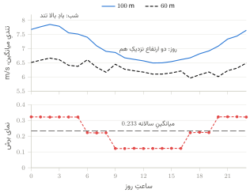
مثال 13.1 (نیمرخِ روز و نیمرخِ شب) پرسش. میانگینِ تندی در سه ارتفاع، نمای برش و زبریِ برازششده را برای شب، صبح، روز و عصر حساب کنید. داده: سالِ دکلِ ساختگی (A-250)، مقدارهای واقعی.
پاسخ. خروجیِ بالا و شکل 13.1: برشِ شب 0.32، صبح و عصر 0.22 و روز 0.12؛ «زبریِ» برازششدهٔ شب حدودِ سه و نیم متر (بلندتر از هر بوته و سنگی در ساختگاه) و روز حدودِ دو سانتیمتر.
تفسیر. زمین در شب و روز همان است؛ آنچه عوض شده پایداری است. پس عددی که با قانونِ لگاریتمی «زبری» نامیده میشود در شب زبریِ زمین نیست. برشِ میانگینِ سالانه (0.233) هم میانگینِ دو رفتارِ بسیار متفاوت است؛ برای انرژی کافی است (مثال 13.22) اما برای بار و برای برونیابیِ هر ساعت نه. وارسی: \(\ln(7.10/6.30)/\ln(100/60) = 0.234\) (E03، درست).
- چرا برشِ شب از روز بیشتر است؟
- جتِ سطحِ پایین چیست و چه اثری بر توربینِ بلند دارد؟
- چرا «زبریِ» برازششدهٔ شب زبریِ واقعیِ زمین نیست؟
13.2.3 نیمرخِ عمودی: قانونِ توانی و لگاریتمی
ایده. دو شکلِ ساده برای نیمرخ به کار میرود (فصلِ ۲): قانونِ توانی با نمای برش \(\alpha\) و قانونِ لگاریتمی با طولِ زبری \(z_0\) که برای جوِ خنثی از فیزیک میآید:
\[ v(z) = v_\text{ref}\left(\frac{z}{z_\text{ref}}\right)^{\alpha}, \qquad v(z) = \frac{u_*}{\kappa}\ln\frac{z}{z_0} , \tag{13.1}\]
با \(u_*\) تندیِ اصطکاکی و \(\kappa = 0.4\) ثابتِ فون کارمن. با سه ارتفاع یا بیشتر، \(\alpha\) با برازشِ خطیِ \(\ln v\) بر \(\ln z\) و \(z_0\) با برازشِ \(v\) بر \(\ln z\) برآورد میشوند.
def fit_shear(heights, speeds) -> float:
"""Power-law exponent by least squares on ln v against ln z (one mean
speed per height, or many concurrent rows averaged first)."""
z = np.log(np.asarray(heights, float))
v = np.log(np.asarray(speeds, float))
return float(np.polyfit(z, v, 1)[0])
def fit_roughness(heights, speeds) -> tuple[float, float]:
"""Neutral log-law fit v = (u*/kappa) ln(z / z0): returns (z0, u*)."""
slope, icept = np.polyfit(np.log(np.asarray(heights, float)),
np.asarray(speeds, float), 1)
return float(math.exp(-icept / slope)), float(slope * KAPPA)مثالهای کوچک. E01: 7.0 m/s در 100 m با برشِ 0.2 در 150 m 7.59 m/s است؛ E02: با قانونِ لگاریتمی و \(z_0 = 0.05\ \text{m}\)، 7.37 m/s. دو قانون در ارتفاعِ اندازهگیری یکیاند و با فاصله از آن جدا میشوند: برونیابی همیشه عدمِ قطعیتی دارد که با فاصله بزرگ میشود.
- معادلهٔ 13.1 را برای \(\alpha\) از دو ارتفاع حل کنید.
- چرا دو قانون در ارتفاعِ مرجع یکیاند؟
- برشِ 0.2 تندیِ 150 m را چند درصد بیشتر از 100 m میکند؟
13.2.4 چرخشِ جهت با ارتفاع
ایده. در لایهٔ مرزی، جهتِ باد هم با ارتفاع میچرخد (در نیمکرهٔ شمالی معمولاً ساعتگرد با بالا رفتن). در شبِ پایدار این چرخش بزرگ است. روتورِ 150 m از 25 تا 175 m را میپوشاند؛ اگر جهت در این فاصله چند ده درجه بچرخد، پره در بالا و پایین زاویهٔ متفاوتی میبیند.
direction change between 60 and 100 m (veer):
night mean +10.0 deg, day +2.0 deg
across a 150 m rotor (25 to 175 m) at night about +38 deg,
if it grows linearly with height
veer twists the inflow across the rotor: the blade sees a
changing angle of attack (loads) and the turbine yaws to the
hub direction only (energy); the measurement shows if it mattersپیامد. چرخش بارِ متناوب و افتِ کمی از انرژی میسازد، چون توربین فقط با جهتِ توپی تنظیم میشود. اندازهگیریِ جهت در دو ارتفاع (بادنمای بالا و پایین) و در لیدار، چرخش را نشان میدهد؛ مقدارِ آن ورودیِ ارزیابیِ بار و سازگاری است (فصلِ ۱۱). وارسی: E05: ده درجه در چهل متر یعنی 0.25 درجه بر متر.
- چرا چرخشِ جهت در شب بیشتر است؟
- چرخش چه اثری بر پره دارد؟
- چرخش را با چه ابزارهایی اندازه میگیرید؟
13.2.5 تلاطم
ایده. تندیِ باد در هر ثانیه نوسان دارد. شدتِ تلاطم نسبتِ انحرافِ معیارِ تندی در بازهٔ دهدقیقهای به میانگینِ آن است (E04):
\[ I = \frac{\sigma_v}{\bar v} . \tag{13.2}\]
تلاطم با تندی کم میشود (در بادِ کم نوسانها نسبت به میانگین بزرگاند)، در شب کم و در روز زیاد است، و پشتِ توربینها (دنباله) بیشتر. برای سازگاریِ ساختگاه (فصلِ ۱۱، بخش 11.3.13)، مقدارِ «نماینده»ای از تلاطم در هر بازهٔ تندی با منحنیِ ردهٔ توربین مقایسه میشود؛ تعریفِ دقیقِ آن مقدار (کدام چندک) در استانداردِ طراحی است.
turbulence intensity at 100 m by speed bin (true values):
bin m/s mean TI 90 % quantile records
4.5 0.238 0.303 5254
6.5 0.179 0.229 6016
8.5 0.149 0.190 4432
10.5 0.129 0.166 3218
12.5 0.113 0.148 1856
14.5 0.103 0.133 745
16.5 0.100 0.127 324
90 % quantile at 15 m/s: 0.131
the turbine's class sets a reference turbulence; the site check
compares a high quantile per bin with the class curve (the
design standard defines which quantile): U-039 needs these
ten-minute standard deviations, which hourly data cannot give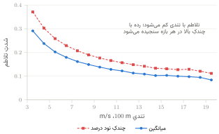
مثال 13.2 (تلاطمی که دادهٔ ساعتی نداشت) پرسش. میانگین و چندکِ نود درصدِ شدتِ تلاطم را در بازههای یکمتری حساب کنید.
پاسخ. خروجیِ بالا و شکل 13.2: از 0.24 در 4.5 m/s تا 0.10 در 16.5 m/s؛ چندکِ نود درصد در 15 m/s حدودِ 0.13.
تفسیر. این همان دادهای است که U-039 میخواست. اکنون (با دادهٔ ساختگی) روش روشن است: انحرافِ معیارِ دهدقیقهای ثبت میشود، بازهبندی میشود و با منحنیِ رده مقایسه میشود. با دادهٔ واقعی، تلاطمِ دنبالهٔ توربینهای دیگر هم افزوده میشود (فصلِ ۱۴). وارسی: 1.3/10 = 0.13 (E04).
- شدتِ تلاطم را تعریف کنید و بگویید چرا با تندی کم میشود.
- چرا دادهٔ ساعتی تلاطم را نمیدهد؟
- چندکِ بالای تلاطم برای چه مقایسهای به کار میرود؟
13.2.6 چگالیِ هوا
ایده. توانِ باد با چگالی متناسب است (فصلهای ۴ و ۱۱). چگالی از فشار و دمای هوا (\(\rho = p/(R T)\)، E14) حساب میشود؛ پس دکل حسگرِ فشار و دما دارد، ترجیحاً نزدیکِ ارتفاعِ توپی، یا فشار با ارتفاع تصحیح میشود.
air density at the mast (from pressure and temperature):
mean 1.056 kg/m3; January 1.103, July 1.009
range of ten-minute values 0.971 .. 1.155
a pressure sensor near hub height (or a correction for its
height) and an air temperature sensor are part of the mast;
density enters the power curve (chapter 11, D-008)پیامد. چگالیِ ژانویه حدودِ نه درصد بیشتر از ژوئیه است: همان تندی در زمستان انرژیِ بیشتری دارد. روشِ تندیِ همارزِ ساعتی (D-008) این را میگیرد؛ میانگینِ سالانهٔ چگالی آن را نمیگیرد (فصلِ ۱۱، مثال 11.42).
- چگالی را در 875 hPa و 20 °C حساب کنید (E14).
- چرا حسگرِ فشار نزدیکِ ارتفاعِ توپی بهتر است؟
- اختلافِ چگالیِ زمستان و تابستان چه اثری بر انرژی دارد؟
13.2.7 بادسنجها و بادنماها
ایده. بادسنجِ فنجانی سه فنجان دارد که با باد میچرخند؛ بسامدِ چرخش با تابعِ انتقال (شیب و عرض از مبدأ از واسنجی در تونلِ باد) به تندی تبدیل میشود. ساده، ارزان و پرسابقه است، اما در تلاطم کمی بیشسنجی دارد، به جریانِ مایل پاسخِ غیرکسینوسی میدهد و یاتاقانش فرسوده میشود. بادسنجِ صوتی زمانِ رفتوبرگشتِ صوت را میانِ چند مبدل میسنجد و سه مؤلفهٔ باد و دما را بی قطعهٔ متحرک میدهد؛ گرانتر است و در باران و یخ گاهی داده از دست میدهد. بادنما جهت را با یک پتانسیومتر یا حسگرِ مغناطیسی میدهد و جهتِ صفرِ آن باید هنگامِ نصب با شمالِ واقعی همتراز و ثبت شود.
two errors of a cup anemometer (A-255, teaching):
overspeeding in turbulent wind: mean +0.86 % (largest at low speed, high TI)
flow inclined 5 deg on a slope, ideal cosine response: -0.38 %
(real cups differ from the cosine: the class tests show how)
the cup's class (a set of tests in turbulent and inclined flow)
tells how much of this to expect; a sonic anemometer measures
the three components and has no rotating parts to wearردهبندیِ بادسنج. بادسنجهای فنجانی بر پایهٔ رفتار در تلاطم، جریانِ مایل و دما رده میگیرند؛ رده نشان میدهد چقدر از این خطاها در ساختگاهی با پیچیدگیِ معین انتظار داریم. روشها در استانداردِ آزمونِ منحنیِ توان (IEC 61400-12-1:2022) و پیوستهایش آمدهاند و این کتاب مقدارهای آن را نقل نمیکند.
- تابعِ انتقالِ بادسنج چیست و از کجا میآید؟
- سه خطای بادسنجِ فنجانی را نام ببرید.
- چرا جهتِ صفرِ بادنما باید ثبت شود؟
- بادسنجِ صوتی چه مزیت و چه ضعفی دارد؟
13.2.8 سنجشِ از دور: لیدار و سودار
ایده. لیدار نورِ لیزر را به ذرهٔ معلق در هوا میتاباند و از جابهجاییِ بسامدِ بازتاب (اثرِ دوپلر) تندیِ هوا را در راستای پرتو میسنجد؛ با چند پرتو در زاویههای مختلف، بردارِ باد در چند ارتفاع ساخته میشود. سودار همین کار را با صوت میکند. مزیتها: ارتفاعهای زیاد تا بالای روتور، جابهجاییِ آسان، بی دکلِ بلند. محدودیتها: فرضِ همگنیِ جریان در حجمِ اندازهگیری (در زمینِ پیچیده نادرست است)، از دست دادنِ داده در هوای بسیار پاک یا باران و مه، نیاز به برق، و وارسی در برابرِ دکلِ مرجع پیش از کمپین.
- لیدار تندی را چگونه میسنجد؟
- فرضِ همگنی چیست و کجا میشکند؟
- چرا لیدار پیش از کمپین در کنارِ دکل وارسی میشود؟
13.2.9 دکل، بازوها و سایهٔ دکل
ایده. دکلِ اندازهگیری خودش جریان را آشفته میکند. بادسنجِ روی بازو وقتی باد از سمتِ دکل میآید در سایهٔ دکل است و کمتر نشان میدهد. قاعدهها: بادسنجِ اصلی روی نوکِ دکل (بی سایه)؛ بازوهای جانبی به اندازهٔ کافی بلند و رو به جهتی که باد کمتر از آن میآید؛ در هر ارتفاعِ مهم دو بادسنج در دو سوی دکل تا در هر جهت یکی آزاد باشد. سایهٔ دکل در داده با نسبتِ تندیِ دو بادسنج بر حسبِ جهت پیدا میشود (بخش 13.11.1).
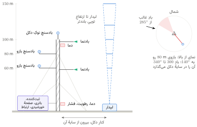
نصب، بالارفتن از دکل، تعویضِ حسگر و نجات در ارتفاع فقط با رویهٔ مکتوب، تجهیزِ حفاظتِ فردی، آموزشِ گواهیشده و مجوزِ کار انجام میشود (فصلهای ۳۲ و ۴۹). دکل در برابرِ صاعقه هم محافظت میشود (فصلِ ۲۶). این فصل رویهٔ هیچکدام را نمیدهد.
- چرا بادسنجِ اصلی روی نوکِ دکل است؟
- بازوها را رو به کدام جهت نصب میکنید؟
- سایهٔ دکل در داده چگونه دیده میشود؟
13.2.10 واسنجی و ردیابیپذیری
ایده. هر بادسنجِ فنجانی پیش از نصب در تونلِ بادِ دارای صلاحیت واسنجی میشود و گواهیای با سریال، شیب و عرض از مبدأِ تابعِ انتقال و عدمِ قطعیت میگیرد؛ ثبتکننده باید همان ضریبها را به کار ببرد. پس از کمپین، واسنجیِ دوباره نشان میدهد ابزار در طولِ کار تغییر کرده است یا نه. لیدار با مقایسه با دکلِ مرجع وارسی میشود. گواهیها، سریالها و ضریبها بخشی از فرادادهٔ کمپیناند (بخش 13.5.6).
- گواهیِ واسنجیِ بادسنج چه میدهد؟
- چرا ثبتکننده باید ضریبِ گواهی را به کار ببرد، نه ضریبِ عمومی؟
- واسنجیِ پس از کمپین چه چیزی را نشان میدهد؟
13.3 عمیقتر: پایداری، روتورِ بزرگ و تندباد
درسهای پیشین گفتند پایداری شکلِ نیمرخ را میسازد، نیمرخ از روتور بزرگتر از یک نقطه است و تلاطم بار میسازد. این بخش هر سه را عددی میکند: پایداری از دو دما، تندیِ همارزِ روتور برای نیمرخهای روز و شب و جت، و ضریبِ تندباد از رکوردهای ثانیهای.
13.3.1 پایداری از دو دما: عددِ ریچاردسون
ایده. هوایی که بالا میرود منبسط و سرد میشود: در هوای خشک حدودِ 9.8 درجه در هر کیلومتر (نرخِ کاهشِ بیدررو). اگر هوای اطراف با ارتفاع کندتر از این سرد شود، بستهای که بالا رفته از اطرافش سردتر و سنگینتر است و پایین برمیگردد: جو پایدار است و اختلاط کم. اگر تندتر سرد شود، بسته سبکتر است و بالاتر میرود: جو ناپایدار است. دمای پتانسیل \(\theta\) این مقایسه را ساده میکند: گرادیانِ دمای اندازهگیریشده بهعلاوهٔ نرخِ بیدررو. عددِ ریچاردسونِ تودهای کارِ شناوری را با کارِ برش مقایسه میکند:
\[ \frac{d\theta}{dz} \approx \frac{\Delta T}{\Delta z} + \Gamma_d, \qquad \mathit{Ri}_b = \frac{g}{\bar T}\,\frac{d\theta/dz}{(\Delta v/\Delta z)^2} , \tag{13.3}\]
با \(\Gamma_d = 0.0098\ \text{K/m}\) و \(\bar T\) دمای مطلقِ میانگین. \(\mathit{Ri}_b\) منفی یعنی ناپایدار، نزدیکِ صفر خنثی و مثبت پایدار؛ در مقدارهای بسیار بیشتر از حدودِ 0.25 تلاطم تقریباً خاموش میشود (این عددِ فیزیکِ جو است، نه حدی از استاندارد).
stability from two temperatures (10 and 92 m, A-257) and the
shear of the 60 and 100 m means:
period T10 T92 dtheta/dz K/m Ri bulk class
night 22-04 6.0 7.6 +0.0293 +1.24 very stable
morning 07 9.0 8.3 +0.0013 +0.12 stable
midday 13 18.0 16.6 -0.0073 -2.46 unstable
evening 18 14.0 13.3 +0.0013 +0.13 stable
potential temperature adds 0.0098 K/m to the measured
gradient: air that cools more slowly than that with height
is stable; well above Ri 0.25 the night layer barely mixes
(the steep night shear and low turbulence of section A)مثال 13.3 (چرا شب برش بزرگ است) پرسش. با دمای 10 و 92 m دکل (مقدارهای آموزشیِ A-257) و تندیِ میانگینِ 60 و 100 m در چهار بخشِ روز (مثال 13.1)، گرادیانِ دمای پتانسیل و عددِ ریچاردسون را حساب کنید و ردهبندی کنید.
پاسخ. خروجیِ بالا: شب \(\mathit{Ri}_b \approx +1.24\) (بسیار پایدار)، صبح و عصر حدودِ +0.12 (پایدار)، نیمروز −2.46 (ناپایدار).
تفسیر. شب، دمای 92 m از 10 m بیشتر است (وارونگیِ دما): هوای پایین سنگین است و با هوای بالا مخلوط نمیشود؛ بادِ بالا آزادانه میلغزد و برش بزرگ و تلاطم کم است (شکل 13.1). نیمروز، زمینِ گرم هوای پایین را سبک میکند و گردابهها تندی را میانِ ارتفاعها یکسان میکنند. دو دما روی دکل (یکی نزدیکِ زمین، یکی نزدیکِ توپی) هزینهٔ کمی دارند و برای تحلیلِ برش، تلاطم و حتی منحنیِ توان شاهدِ پایداریاند. وارسی: شب: \(1.6/82 + 0.0098 = 0.0293\ \text{K/m}\) (درست).
- چرا گرادیانِ دمای پتانسیل و نه دمای خام معیارِ پایداری است؟
- وارونگیِ دما چیست و چه وقت رخ میدهد؟
- عددِ ریچاردسونِ منفی چه میگوید؟
- چرا دو حسگرِ دما در دو ارتفاع ارزش دارند؟
13.3.2 روتورِ بزرگ: تندیِ همارزِ روتور
ایده. روتورِ 150 m با توپیِ 100 m از 25 تا 175 m را جارو میکند؛ تندیِ توپی فقط یک نقطه از این قرص است. تندیِ همارزِ روتور تندیِ یکنواختی است که همان شارِ انرژیِ جنبشی را از قرص میگذراند. اگر جهت هم با ارتفاع بچرخد، فقط مؤلفهٔ همراستا با توپی حساب میشود:
\[ v_\text{eq} = \left(\frac{1}{A}\int_A \big(v(z)\cos\varphi(z)\big)^3\, dA\right)^{1/3} , \tag{13.4}\]
با \(\varphi(z)\) اختلافِ جهت با جهتِ توپی. فصلِ ۱۱ همین را برای قانونِ توانی حساب کرد (بخش 11.2.17)؛ تابعِ زیر هر نیمرخی را میپذیرد:
def rotor_equivalent(profile, hub: float, radius: float,
veer_per_m: float = 0.0, n: int = 400) -> float:
"""Rotor-equivalent wind speed of any profile v(z) (a function of
height): the uniform speed with the same kinetic power through the
disc. With veer, each height counts only its component along the hub
direction."""
t = np.linspace(-math.pi / 2, math.pi / 2, n + 1) # z = hub + R sin t
z = hub + radius * np.sin(t)
turn = np.cos(np.radians(veer_per_m * (z - hub)))
v = np.asarray(profile(z), float) * turn
width = 2 * radius * np.cos(t) # chord of the disc
flux = np.trapezoid(width * v ** 3 * radius * np.cos(t), t)
return float((flux / (math.pi * radius ** 2)) ** (1 / 3))rotor-equivalent wind speed, hub 100 m, rotor 150 m, hub speed 8.0 m/s:
profile REWS m/s (REWS/hub)^3
uniform 8.000 1.000
day, shear 0.12 7.951 0.982
year mean, shear 0.233 7.957 0.984
night, shear 0.32 7.992 0.997
night, shear 0.32 + veer 0.25 deg/m 7.888 0.958
jet: nose at 130 m, falling above 7.712 0.896
the hub speed alone misses what the upper and lower blade
see: with a power law the disc carries a little less power
than the hub speed says (most for a gentle shear), veer takes
about 4 % and a jet nose below the top about 10 %; below
rated the power follows the cube of the ratio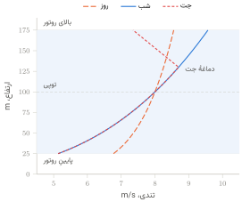
مثال 13.4 (یک تندیِ توپی، شش روتور) پرسش. برای تندیِ توپیِ 8.0 m/s، تندیِ همارزِ روتور را برای نیمرخِ یکنواخت، روز، میانگینِ سال، شب، شب با چرخشِ 0.25 درجه بر متر و یک جتِ سطحِ پایین با دماغه در 130 m حساب کنید و اثرش را بر توانِ زیرِ اسمی بگویید.
پاسخ. خروجیِ بالا و شکل 13.4: روز 7.951، سال 7.957، شب 7.992، شب با چرخش 7.888 و جت 7.712 m/s؛ نسبتِ توان 0.982، 0.984، 0.997، 0.958 و 0.896.
تفسیر. نتیجهٔ نخست شاید غافلگیرکننده باشد: با قانونِ توانی، قرص کمی کمتر از توپی انرژی دارد؛ این کمبود در برشِ صفر و در برشِ یکسوم صفر است و بیشینهاش (حدودِ دو درصد) نزدیکِ برشِ 0.17 است (مکعبِ تندی در ارتفاع تابعی محدب یا مقعر است و میانگینش با مقدارِ میانی فرق دارد). اثرهای بزرگ از جای دیگرند: چرخشِ شب حدودِ چهار درصد و دماغهٔ جت زیرِ نوکِ بالا حدودِ ده درصد توان را میبرند. پس دو شبِ «با تندیِ یکسانِ توپی» میتوانند انرژیِ متفاوت بدهند. این یکی از دلیلهایی است که منحنیِ توانِ اندازهگیریشده با شرایطِ جو تغییر میکند (فصلهای ۱۱ و ۵۰) و لیدارِ چندارتفاعه برای روتورهای بزرگ ارزش دارد. وارسی: \((7.712/8)^3 = 0.896\) (درست).
مثال 13.5 (جتِ سطحِ پایین و دکلِ کوتاه) پرسش. دکلی که فقط تا 100 m میسنجد در شبِ جت چه میبیند و چه نمیبیند؟ برونیابی با برشِ شب در 175 m چه تندیای میدهد و نیمرخِ جت چه؟
پاسخ. دادههای شکل 13.4: برونیابی با برشِ 0.32 در 175 m حدودِ 9.57 m/s و نیمرخِ جت 7.35 m/s است؛ اختلاف حدودِ 23 % تندی در نوکِ بالایی.
تفسیر. تا 100 m دو نیمرخ یکیاند؛ دکل هیچ نشانهای از جت ندارد و برونیابی تندیِ بالای روتور را بسیار زیاد نشان میدهد. در ساختگاههایی که جتِ شبانه رایج است (دشتهای باز، بیابان)، اندازهگیری تا بالای روتور (لیدار) تنها راهِ دیدنِ آن است؛ برای بار هم مهم است، چون پره در هر دور از بیشینهٔ جت میگذرد. وارسی: \(8 \times 1.75^{0.32} = 9.57\) (درست).
- تندیِ همارزِ روتور را تعریف کنید؛ چرا مکعبِ تندی میانگین گرفته میشود؟
- چرا با قانونِ توانی تندیِ همارز کمی کمتر از توپی است؟
- چرخش چگونه در معادلهٔ 13.4 وارد میشود؟
- چرا دکلِ کوتاه جت را نمیبیند؟
13.3.3 تندباد و ضریبِ تندباد
ایده. ثبتکنندهٔ دکل در هر ده دقیقه علاوه بر میانگین و انحرافِ معیار، بیشینه را هم ثبت میکند. تندباد معمولاً بیشینهٔ میانگینِ چند ثانیهای است و ضریبِ تندباد نسبتِ آن به میانگینِ دهدقیقهای. با فرضِ نوسانهای تصادفی، تندباد حدودِ چند انحرافِ معیار بالای میانگین است:
\[ G = \frac{v_\text{gust}}{\bar v} \approx 1 + g\, I , \tag{13.5}\]
با \(g\) ضریبِ قله که به طولِ رکورد، طولِ پنجرهٔ تندباد و طیفِ تلاطم بستگی دارد. تندباد برای بارِ حدی، طراحیِ سازههای کوچک (دکل، پایه، قابهای خورشیدی، فصلِ ۳۰) و ایمنیِ کار (فصلِ ۳۲) به کار میرود.
gust factor of ten-minute records (3 s gust / 10 min mean):
TI mean G 95 % of G peak factor (G-1)/TI
0.08 1.197 1.264 2.47
0.13 1.323 1.419 2.49
0.20 1.496 1.674 2.48
the gust grows with turbulence: G is about 1 + g x TI with a
peak factor g near 2.5 for these records (real spectra, longer
records and shorter gust windows give larger g); the mast
logs the ten-minute maximum of the one-second samplesمثال 13.6 (سیصد رکوردِ دهدقیقهای) پرسش. برای تندیِ میانگینِ 10 m/s و شدتِ تلاطمِ 0.08، 0.13 و 0.20، سیصد رکوردِ ثانیهایِ دهدقیقهای بسازید (نوفهٔ خودهمبستهٔ آموزشی با مقیاسِ زمانیِ 15 s، A-257)، تندبادِ سهثانیهای و ضریبِ تندباد را حساب کنید و ضریبِ قله را برآورد کنید.
پاسخ. خروجیِ بالا: ضریبِ تندبادِ میانگین 1.20، 1.32 و 1.50؛ ضریبِ قله در هر سه حدودِ 2.5.
تفسیر. تندباد با تلاطم رشد میکند و ضریبِ قله تقریباً ثابت میماند: معادلهٔ 13.5 شکلِ درستی دارد. اما عددِ \(g\) به دادههای آموزشیِ ما بسته است؛ طیفِ واقعیِ تلاطم، رکوردِ بلندتر و پنجرهٔ کوتاهتر آن را بزرگتر میکنند. پس تندبادِ طراحی از دادهٔ اندازهگیریشدهٔ بیشینهها و روشِ استانداردِ مربوط میآید، نه از این ضریب. وارسی: \(1 + 2.49 \times 0.13 = 1.32\) (درست).
- ضریبِ تندباد را تعریف کنید.
- چرا ضریبِ تندباد با تلاطم بزرگ میشود؟
- ضریبِ قله به چه چیزهایی بستگی دارد؟
- ثبتکننده برای تندباد چه آماری باید ذخیره کند؟
13.4 ابزارها در عمل: خطاهای کوچک با اثرِ بزرگ
هر ابزارِ این فصل درست کار میکند اگر درست تنظیم، نصب و خوانده شود. شش درسِ زیر خطاهایی را نشان میدهند که در هیچ آزمونِ کیفیتی «پرچم» نمیخورند، چون داده معقول به نظر میرسد: میانگینِ نادرستِ جهت، ضریبِ نادرستِ بادسنج، فشار در ارتفاعِ نادرست، بادنمای کج، لیدار روی تپه، و دادهای که فقط شبها گم میشود.
13.4.1 میانگینگیریِ جهت
ایده. جهت کمیتی دایرهای است: 350° و 10° بیست درجه با هم فاصله دارند، نه سیصد و چهل. میانگینِ حسابیِ آنها 180° است، یعنی بادِ جنوبی بهجای بادِ شمالی. راهِ درست میانگینگرفتن از بردارهای یکه (سینوس و کسینوس) و گرفتنِ زاویهٔ نتیجه است؛ اگر سهمِ هر رکورد به تندی بستگی داشته باشد، بردارها با تندی وزن میگیرند.
def vector_mean_direction(wd, speed=None) -> float:
"""Mean direction of a set of directions (degrees) by averaging unit
vectors (or speed-weighted vectors): 350 and 10 give 0, not 180."""
a = np.radians(np.asarray(wd, float))
w = np.ones_like(a) if speed is None else np.asarray(speed, float)
s, c = np.sum(w * np.sin(a)), np.sum(w * np.cos(a))
return float(math.degrees(math.atan2(s, c)) % 360.0)averaging directions:
six ten-minute directions 350, 355, 2, 8, 12, 358
arithmetic mean 180.8 deg (wrong); vector mean 0.8 deg
mast year, hourly means of six records:
arithmetic mean off by more than 10 deg in 44 of 8760 hours (0.5 %)
every hour that straddles north is wrong by about 180 deg;
loggers and scripts average the sine and cosine (vector mean),
often weighted by speedمثال 13.7 (بادِ شمالی که جنوبی شد) پرسش. میانگینِ شش جهتِ دهدقیقهایِ 350، 355، 2، 8، 12 و 358° را به دو روش حساب کنید. در سالِ دکل، در چند ساعت میانگینِ حسابی بیش از ده درجه خطا دارد؟
پاسخ. خروجیِ بالا: حسابی 180.8°، برداری 0.8°؛ در سالِ دکل 44 ساعت از 8760 (0.5 %).
تفسیر. در این ساختگاه بادِ شمالی کم است و خطا فقط نیم درصدِ ساعتها را میگیرد؛ در ساختگاهی با بادِ غالبِ شمالی، گلِ باد و نسبتهای بخشی را از اساس خراب میکند. همین خطا در برنامههای خودساخته رایجتر از ثبتکنندههاست. وارسی: میانگینِ حسابی \((350 + 355 + 2 + 8 + 12 + 358)/6 = 180.8\) (درست، و نادرست!).
- چرا جهت را نمیتوان مانندِ دما میانگین گرفت؟
- میانگینِ برداریِ 80° و 100° چیست؟
- وزندادن با تندی چه زمانی معنا دارد؟
13.4.2 تابعِ انتقالِ نادرست
ایده. ثبتکننده بسامدِ بادسنج را با شیب و عرض از مبدئی که در آن تایپ شده به تندی تبدیل میکند. اگر بهجای ضریبهای گواهیِ همان بادسنج ضریبِ عمومیِ سازنده تایپ شود، همهٔ داده کمی جابهجا میشود: خطایی نرم، ثابت و بیصدا.
a generic transfer function in place of the cup's certificate:
certificate v = 0.04897 f + 0.207; logger v = 0.0495 f + 0.200
at 4 m/s: 4.034; at 8 m/s: 8.077; at 14 m/s: 14.142
mean speed of the year +0.95 %; energy +1.53 %
fix: back-calculate the frequency with the logger's factors
and apply the certificate's (records kept in the metadata);
never apply a correction twiceمثال 13.8 (یک درصد تندی، یک و نیم درصد انرژی) پرسش. گواهیِ بادسنجِ 100 m \(v = 0.04897 f + 0.207\) است اما در ثبتکننده \(v = 0.0495 f + 0.200\) تایپ شده است (A-255، آموزشی). خطای تندی را در 4، 8 و 14 m/s، و اثر بر تندیِ میانگین و انرژیِ سال را حساب کنید.
پاسخ. خروجیِ بالا: 4.034، 8.077 و 14.142 m/s؛ تندیِ میانگین +0.95 % و انرژی +1.53 %.
تفسیر. هیچ آزمونِ حد، گیرکردگی یا نسبتی این خطا را نمیبیند، چون همهٔ رکوردها با یک ضریب جابهجا شدهاند؛ اگر بادسنجِ دیگری با ضریبِ درست در کنارش باشد، نسبتِ آنها یک درصد از انتظار فاصله میگیرد. علاج فراداده است: ضریبهای ثبتکننده و گواهی برای هر سریال ثبت میشوند، بسامد با ضریبهای ثبتکننده بازسازی و با ضریبهای گواهی دوباره تبدیل میشود، و این اصلاح فقط یک بار و با سند انجام میشود. وارسی: \(f = (8 - 0.207)/0.04897 = 159.1\ \text{Hz}\) و \(0.0495 \times 159.1 + 0.2 = 8.077\) (درست).
- چرا آزمونهای کیفیت ضریبِ نادرست را نمیبینند؟
- برای اصلاحِ ضریب چه اطلاعاتی از فراداده لازم است؟
- چرا اصلاح نباید دو بار انجام شود و چگونه از آن جلوگیری میکنید؟
13.4.3 چگالی در ارتفاعِ توپی
ایده. فشار با ارتفاع کم میشود: در صد متر حدودِ یک درصد. بستهٔ داده فشارِ ایستگاه و دمای دو متری را میدهد (دفترِ دادهٔ بسته)؛ چگالیِ ساختهشده از آنها چگالیِ نزدیکِ زمین است، نه توپی. تصحیح با رابطهٔ فشارسنجی و کاهشِ دما با ارتفاع:
\[ p_\text{hub} = p_\text{st}\exp\!\left(-\frac{g\,\Delta z}{R\,\bar T}\right), \qquad T_\text{hub} = T_2 - \gamma\,\Delta z , \tag{13.6}\]
با \(\gamma\) نرخِ کاهشِ دما (اینجا مقدارِ استانداردِ جوِ مرجع، 0.0065 K/m؛ با دو حسگرِ دما، مقدارِ اندازهگیریشده بهتر است).
air density at hub height from a pressure sensor at 2 m:
pressure 98 m higher: x 0.9885; temperature -0.64 K (standard lapse)
mean density at 2 m 1.0559, at the hub 1.0460 kg/m3 (-0.93 %)
energy with the hub density: -0.54 % (density-equivalent speed)
the data pack gives station pressure and 2 m temperature:
chapter 11 used them as they are (D-008); D-017 reduces the
pressure to the hub; a stable night (warmer air aloft) lowers
the hub density a little more than the standard lapse saysمثال 13.9 (نیم درصدی که فصلِ ۱۱ نداشت) پرسش. چگالیِ میانگین را در 2 m و در توپیِ 100 m حساب کنید و اثرش را بر انرژیِ یک توربین با روشِ تندیِ همارزِ چگالی (D-008) بیابید.
پاسخ. خروجیِ بالا: فشار ضربِ 0.9885، دما 0.64 K کمتر؛ چگالیِ میانگین از 1.0559 به 1.0460 kg/m³ (−0.93 %)؛ انرژی −0.54 %.
تفسیر. فصلِ ۱۱ چگالی را از دادهٔ بسته همانگونه که بود ساخت و انرژی را حدودِ نیم درصد زیاد برآورد کرد؛ پایهٔ تازهٔ منبعِ بادی (D-017) فشار را به توپی میبرد و همهٔ عددهای انرژیِ مزرعه در این فصل (مثال 13.39) با چگالیِ توپیاند. در شبهای پایدار، هوای توپی گرمتر از زمین است (مثال 13.3) و چگالی کمی کمتر از این برآورد میشود؛ دو حسگرِ دما این را هم میگیرند. وارسی: \(\exp(-9.81 \times 98/(287.05 \times 290)) = 0.9885\) (درست).
- فشار در صد متر چند درصد کم میشود؟
- چرا کاهشِ دما بخشی از اثرِ فشار را جبران میکند؟
- اثرِ چگالی بر انرژی چرا کمتر از اثرش بر چگالی است؟
13.4.4 بادنمای کج و دنباله
ایده. بادنما جهت را نسبت به علامتِ صفرِ خودش میدهد. اگر هنگامِ نصب علامت با شمالِ واقعی همتراز نشود (یا با شمالِ مغناطیسی همتراز شود و انحرافِ مغناطیسی اصلاح نشود)، همهٔ جهتها با یک زاویهٔ ثابت جابهجا میشوند. انرژی تغییر نمیکند، اما گلِ باد میچرخد و هر چیزی که از گلِ باد ساخته میشود جابهجا میشود: چیدمانِ توربینها، تلفِ دنباله، تشخیصِ سایهٔ دکل، روشِ بخشیِ اندازهگیری–همبستگی–پیشبینی.
a vane mounted 20 deg off, and chapter 11's wake model (layout A):
prevailing sector: true 285 deg, with the offset 315 deg
case wake loss farm GWh
true directions, layout for the true wind 6.50 % 188.16
estimate with the offset directions 6.22 % 188.72
layout turned to the offset, true wind 6.95 % 187.25
a direction error moves energy between sectors: the wake
estimate and the layout follow the wrong rose; the vane's
north mark, photos and a second vane or the lidar find itمثال 13.10 (بیست درجه و چیدمانِ مزرعه) پرسش. با مدلِ دنبالهٔ فصلِ ۱۱ و چیدمانِ A (D-015)، تلفِ دنباله را در سه حالت حساب کنید: جهتهای درست؛ برآورد با جهتهای بادنمایی که 20° کج است؛ و چیدمانی که بر پایهٔ گلِ بادِ کج چرخانده شده و با بادِ واقعی کار میکند.
پاسخ. خروجیِ بالا: بخشِ غالب از 285° به 315° میرود؛ تلفِ دنباله 6.50 % (درست)، 6.22 % (برآوردِ با بادنمای کج) و 6.95 % (چیدمانِ چرخیده با بادِ واقعی).
تفسیر. خطای جهت دو بار هزینه دارد: برآوردِ تلف را خوشبینانه میکند (حدودِ 0.6 GWh در سال) و اگر چیدمان بر پایهٔ آن طراحی شود، مزرعهٔ ساختهشده حدودِ 0.9 GWh در سال کمتر از چیدمانِ درست میدهد، برای همهٔ عمرِ نیروگاه. نشانهها: عکسهای نصب با قطبنما، بادنمای دوم، جهتِ لیدار، و چرخشِ نیمروزی که باید کوچک باشد (مثال 13.21). وارسی: \(188.16 - 187.25 = 0.91\ \text{GWh}\) (درست).
- چرا بادنمای کج انرژیِ برآوردشده را تقریباً تغییر نمیدهد اما تلفِ دنباله را چرا؟
- دو راه برای یافتنِ انحرافِ ثابتِ بادنما بنویسید.
- انحرافِ مغناطیسی چیست و چرا باید ثبت شود؟
13.4.5 لیدار روی تپه
ایده. لیداری که با چهار پرتوِ مایل (شمال، شرق، جنوب، غرب) کار میکند، در هر پرتو فقط مؤلفهٔ باد را در راستای پرتو میسنجد. با فرضِ اینکه باد در هر چهار نقطهٔ دایرهٔ اسکن یکسان است، مؤلفهها را ترکیب میکند. با زاویهٔ پرتو \(\phi\) از قائم:
\[ u_\text{E} = \frac{v_{r,\text{E}} - v_{r,\text{W}}}{2\sin\phi}, \qquad v_\text{N} = \frac{v_{r,\text{N}} - v_{r,\text{S}}}{2\sin\phi} , \tag{13.7}\]
با \(u_\text{E}\) و \(v_\text{N}\) مؤلفههای شرقی و شمالیِ باد و \(v_r\) تندیِ شعاعیِ هر پرتو.
روی زمینِ هموار فرض درست است. روی تپه، هوا در سمتِ رو به باد بالا میرود و در سمتِ پشت به باد پایین؛ دو پرتو مؤلفهٔ قائمِ متفاوتی میبینند و این اختلاف در معادلهٔ 13.7 بهجای تندیِ افقی خوانده میشود.
four-beam lidar, beams 28 deg off vertical, west wind 7.5 m/s at 100 m:
scan circle diameter at 100 m: 106 m
vertical wind west beam east beam reconstructed error
difference 0.0 +0.00 -0.00 7.500 m/s +0.0 %
difference 0.1 +0.05 -0.05 7.406 m/s -1.3 %
difference 0.2 +0.10 -0.10 7.312 m/s -2.5 %
difference 0.3 +0.15 -0.15 7.218 m/s -3.8 %
on a hilltop the flow rises on the windward side and sinks on
the lee side: the beams see different vertical winds and the
homogeneous reconstruction reads the horizontal speed low;
flat sites keep the error small, complex sites need a flow
model correction or a mast (chapter 14)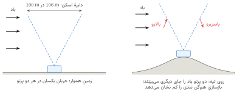
مثال 13.11 (چهار درصدی که تپه برداشت) پرسش. بادِ غربیِ 7.5 m/s در 100 m، پرتوهای 28° از قائم (آموزشی). اگر بادِ قائم در پرتوِ غربی \(+\Delta w/2\) و در پرتوِ شرقی \(-\Delta w/2\) باشد، تندیِ بازسازیشده را برای \(\Delta w\) از صفر تا 0.3 m/s حساب کنید.
پاسخ. خروجیِ بالا: قطرِ دایرهٔ اسکن 106 m؛ خطا −1.3، −2.5 و −3.8 % برای 0.1، 0.2 و 0.3 m/s.
تفسیر. اختلافِ چند دهم متر بر ثانیه در بادِ قائم میانِ دو نقطهٔ صد متر دور از هم روی یک تپه عادی است، و چند درصد خطای تندی یعنی حدودِ دو برابرِ آن در انرژی. لیدار روی زمینِ هموار ابزاری عالی است؛ روی زمینِ پیچیده یا باید با مدلِ جریان تصحیح شود (فصلِ ۱۴) یا کنارِ دکلی در همان شرایط وارسی شود. وارسی: \(\Delta w \cos 28^\circ/(2\sin 28^\circ) = 0.3 \times 0.8829/0.9389 = 0.282\) و \(0.282/7.5 = 3.8\ \%\) (درست).
- لیدارِ چهارپرتو چه فرضی دربارهٔ جریان میکند؟
- چرا روی تپه تندی را کم نشان میدهد؟
- قطرِ دایرهٔ اسکن در 150 m چند است و چرا اهمیت دارد؟
13.4.6 دادهای که شب گم میشود
ایده. لیدار در هوای بسیار پاک (ذرهٔ کم برای بازتاب)، در مه و باران داده از دست میدهد. این شرایط تصادفی نیستند: هوای پاک و آرامِ شبهای پایدار، همان شبهایی است که بادِ بالا تند است. بازیابیِ بالا تضمینِ نمایندگی نیست.
a lidar that loses more data at night (A-257):
recovery 87.8 %; night 74.9 %, day 97.0 %
true mean at 150 m 7.814 m/s
mean of the records kept 7.725 m/s (-1.15 %)
mean of the 24 hourly means 7.808 m/s (-0.08 %)
the windy stable nights are lost more often: a high recovery
can still be biased; weighting by hour (or month and hour)
restores the balance, and the loss pattern is reportedمثال 13.12 (بازیابیِ ۸۸ درصد با سوگیری) پرسش. فرض کنید لیدار 25 % رکوردهای شب و 3 % رکوردهای روز را از دست میدهد (A-257). میانگینِ تندیِ 150 m را از همهٔ رکوردها، از رکوردهای مانده و از میانگینِ ۲۴ میانگینِ ساعتی حساب کنید.
پاسخ. خروجیِ بالا: بازیابی 87.8 %؛ میانگینِ واقعی 7.814، رکوردهای مانده 7.725 m/s (−1.15 %)، میانگینِ ساعتی 7.808 m/s (−0.08 %).
تفسیر. یک درصد تندی کمتر یعنی حدودِ دو درصد انرژیِ کمتر در توپیِ 150 m: بیآنکه هیچ رکوردی «بد» باشد. وزندهی بر حسبِ ساعت (یا ماه و ساعت) تعادل را برمیگرداند، به شرطِ آنکه در هر ساعت دادهٔ کافی مانده باشد. گزارشِ کمپین الگوی از دست رفتن را (بر حسبِ ساعت، ماه، شرایط) میدهد، نه فقط درصدِ کل را. همین برای بادسنجِ یخزده درست است: یخ فقط در شبهای سرد رخ میدهد (بخش 13.5.4). وارسی: \(7.725/7.814 - 1 = -1.14\ \%\) (درست، گرد شده).
- چرا بازیابیِ بالا تضمینِ نمایندگی نیست؟
- وزندهی بر حسبِ ساعت چگونه سوگیری را کم میکند و کی کار نمیکند؟
- دو حسگرِ دیگر که دادهٔ «شرطی» از دست میدهند نام ببرید.
13.5 ب. طراحیِ کمپین و کیفیتِ داده
بخشِ ب کمپینِ اندازهگیری را طراحی میکند: کدام ارتفاعها، چه افزونگیای، چه بازیابیای، با یخ و خرابی چه کنیم، داده را چگونه پالایش و سند کنیم و کمپین را با چه معیاری بپذیریم. خطاهای کاشتهشده در سالِ دکل (A-251) نمونههای این بخشاند: سایهٔ دکل و فرسایشِ یاتاقان روی بادسنجِ 80 m، یخزدگیِ بادسنجِ 100 m و چهار روز قطعِ ثبتکننده.
13.5.1 ارتفاعها و پیکربندی
ایده. بهترین اندازهگیری در ارتفاعِ توپی است؛ هر متر برونیابی عدمِ قطعیت میافزاید (مثال 13.35). دکلِ نیروگاهِ P تا 100 m، همان ارتفاعِ توپیِ پایه، است و دو ارتفاعِ پایینتر (60 و 80 m) برای برش دارد. اگر توپی بلندتر شود (فصلِ ۱۱، مثال 11.47)، لیدار کنارِ دکل اندازهگیری را تا بالای روتور میبرد. پیکربندیِ معمول: بادسنجِ اصلی روی نوک، دو بادسنج در ارتفاعهای میانی در دو سوی دکل، دو بادنما، دما در دو ارتفاع (برای پایداری)، فشار و رطوبت، ثبتکننده با برقِ خورشیدی و ارتباطِ دور. جای دکل نمایندهٔ جای توربینهاست: همان ارتفاعِ زمین، همان زبری، دور از مانع و دنباله.
lidar against the mast at 100 m (A-252):
records compared 37,565 (both valid, above 4 m/s)
slope through the origin 1.0051; r^2 0.9966; MBE +0.042 m/s
lidar recovery 92.0 %
at 150 m: lidar 7.828 m/s; mast extrapolated with one shear 7.775 m/s
(-0.7 %)
a lidar checked against a mast at one height can then carry the
measurement to heights the mast does not reach; its own
calibration (a verification against a reference mast) is part
of the evidenceمثال 13.13 (لیدار کنارِ دکل) پرسش. لیدارِ کنارِ دکل (A-252) را در 100 m با بادسنج مقایسه کنید و تندیِ 150 mِ لیدار را با برونیابیِ دکل با یک نمای برش بسنجید.
پاسخ. خروجیِ بالا: شیبِ 1.005، ضریبِ تعیینِ 0.997، بازیابیِ لیدار 92 %؛ در 150 m برونیابیِ دکل 0.7 % کمتر از لیدار.
تفسیر. لیدارِ وارسیشده میتواند اندازهگیری را به ارتفاعی ببرد که دکل ندارد. بازیابیِ کمترِ لیدار (هوای پاک، باران، مه) با دکل جبران میشود: دو ابزار مکملِ هماند. وارسی: سوگیریِ آموزشیِ لیدار 0.5 % بود و شیب همان را نشان میدهد (درست).
- چرا اندازهگیری در ارتفاعِ توپی بهتر است؟
- پیکربندیِ معمولِ دکل را بنویسید.
- لیدار و دکل چگونه مکملِ هماند؟
13.5.2 افزونگی
ایده. هر حسگر یک روز خراب میشود؛ پرسش این است که کِی میفهمیم. با دو بادسنجِ نزدیک (در یک ارتفاع یا در ارتفاعهای مجاور)، نسبتِ آنها در هفتههای سالم پایدار است و انحرافِ ماندگار از آن، خرابی را نشان میدهد. بی افزونگی، بادسنجی که آهسته کند میشود با «تابستانِ آرام» اشتباه گرفته میشود.
a redundant height finds the 80 m bearing wear (weekly ratio 80/100):
reference weeks 1-20: mean 0.9517, sd 0.0051
wear starts in week 26 (July); two weeks in a row below
mean - 2 sd first in week 31
without a second sensor nearby, the same loss would look like
a calm summer; with it, the fault is a few weeks old when foundمثال 13.14 (فرسایشی که پنج هفته بعد پیدا شد) پرسش. با نسبتِ هفتگیِ 80 به 100 m (بیرون از بخشِ سایه) و قاعدهٔ «دو هفتهٔ پیاپی زیرِ میانگین منهای دو انحرافِ معیار»، فرسایشِ یاتاقانِ بادسنجِ 80 m را که از هفتهٔ ۲۶ آغاز شد، پیدا کنید.
پاسخ. خروجیِ بالا: هشدار در هفتهٔ ۳۱.
تفسیر. پنج هفته داده با خطای کوچک ثبت شد؛ بی افزونگی شاید شش ماه. قاعدهٔ ساده در پایشِ هفتگیِ کمپین کافی است، و اقدامِ پس از هشدار (بازدید، تعویض، واسنجیِ دوباره) در دفترِ کمپین ثبت میشود. وارسی: کاهشِ 0.6 % در ماه پس از حدودِ یک ماه به دو انحرافِ معیارِ نسبتِ هفتگی (1 %) نزدیک میشود (درست).
- افزونگی چه پرسشی را پاسخ میدهد؟
- چرا نسبتِ هفتگی بیرون از بخشِ سایه حساب شد؟
- پس از هشدار چه اقدامهایی لازم است؟
13.5.3 بازیابی و پالایش
ایده. بازیابیِ داده سهمِ رکوردهایی است که پس از کنترلِ کیفیت معتبر ماندهاند (E07). برای هر حسگر جداگانه حساب میشود، نه برای دکل: یک دکل میتواند بادسنجِ بالایش کامل و بادسنجِ میانیاش نصفه باشد. پالایهها همان منطقِ فصلِ ۱۲ را دارند: نبودِ داده، حدهای فیزیکی، گیرکرده، یخ، سایهٔ دکل؛ هر رکورد پرچم میگیرد و حذف نمیشود.
quality flags and data recovery of the mast year:
month 100 m 80 m 60 m
Jan 97.0 91.3 100.0
Feb 99.7 52.7 100.0
Mar 100.0 70.4 100.0
Apr 100.0 80.2 100.0
May 87.1 63.2 87.1
Jun 100.0 84.1 100.0
Jul 100.0 0.0 100.0
Aug 100.0 0.0 100.0
Sep 100.0 0.0 100.0
Oct 100.0 0.0 100.0
Nov 100.0 0.0 100.0
Dec 100.0 0.0 100.0
year: 98.6 36.9 98.9 (%)
flags: outage 576 records, icing at 100 m 147, shadow at 80 m 11664
injected icing 288 records: found 147, false alarms 0
80 m data after June are excluded for shear work: recovery
is a property of each sensor, not of the mast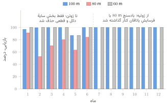
مثال 13.15 (بازیابیِ هر حسگر) پرسش. پرچمهای سال را بزنید (قطعِ ثبتکننده، یخ در 100 m، سایهٔ دکل و دورهٔ فرسایش در 80 m) و بازیابیِ ماهانه و سالانهٔ هر بادسنج را بیابید.
پاسخ. خروجیِ بالا: 100 m 98.6 %، 60 m 98.9 %، 80 m فقط 36.9 %.
تفسیر. بادسنجِ 80 m پس از ژوئن برای کارِ برش کنار میرود و پیش از آن هم بخشِ سایه را ندارد؛ چون بخشِ سایه نزدیکِ جهتِ غالب است، بخشِ بزرگی از داده از دست رفت: جهتِ بازو باید پیش از نصب با گلِ بادِ ساختگاه انتخاب شود. قاعدهٔ یخ از ۲۸۸ رکوردِ یخزده ۱۴۷ را یافت و هشدارِ نادرست نداشت: آغازِ هر رویداد پیدا میشود اما پایانش، وقتی هوا گرم میشود و یخ هنوز آب نشده، نه (بخش 13.5.4). وارسی: ۵۷۶ رکوردِ قطعی چهار روزِ کامل است (\(4 \times 144\)، درست).
- چرا بازیابی برای هر حسگر جداگانه حساب میشود؟
- چرا جهتِ بازوی 80 m اینقدر داده را هدر داد؟
- بازیابیِ ماهی با ۱٬۵۰۰ رکوردِ پرچمخورده از ۵۲٬۵۶۰ (سال) چند است (E07)؟
13.5.4 یخزدگی
ایده. یخ روی فنجانها چرخش را کند یا متوقف میکند و بادنما را میبندد؛ دادهها «ممکن» به نظر میرسند اما غلطاند. نشانهها: انحرافِ معیارِ تقریباً صفر، تندیِ کم یا ثابت، جهتِ ثابت، در دمای نزدیکِ صفر یا زیرِ آن با رطوبتِ زیاد. حسگرهای گرمشونده و یک حسگرِ دوم با گرمایشِ متفاوت این دورهها را کم یا شناختنی میکنند.
icing exposure of the mast year:
ten-minute records below +1 C: 2,970 (5.7 % of the year)
injected icing events: 288 records (6 x 8 h)
detection by 'almost no variability while cold' finds the
start of each event; the end is missed when the air warms
before the ice melts (lab D); heated cups and vanes and a
second, differently heated sensor make the gaps smallerپیامد برای نیروگاه. همان شرایطِ یخزدگیِ حسگر، پرهٔ توربین را هم یخ میزند (فصلِ ۱۱، بخش 11.4.11)؛ پس دادهٔ یخزدگیِ کمپین شاهدِ ریسکِ پرتابِ یخ و توقفِ توربین هم هست (U-040).
- چهار نشانهٔ یخزدگیِ بادسنج را بنویسید.
- چرا پایانِ رویدادِ یخ دیرتر شناخته میشود؟
- دادهٔ یخزدگیِ کمپین چه شاهدی برای توربین است؟
13.5.5 خرابیهای رایجِ حسگر
ایده. فهرستِ خرابیهایی که تحلیلگرِ داده باید بشناسد: گیرکردن (عددِ ثابت)، فرسایشِ یاتاقان (کاهشِ تدریجی، آستانهٔ شروعِ بالاتر)، سایهٔ دکل (وابسته به جهت)، یخ، قطعیِ برق یا ثبتکننده (شکاف)، ضریبِ نادرست در ثبتکننده (خطای ثابت از روزِ نصب)، جهتِ صفرِ نادرستِ بادنما (چرخشِ ثابتِ گلِ باد)، ساعتِ نادرست (فصلِ ۱۲)، آسیبِ صاعقه (پرش یا خرابیِ ناگهانی). هر کدام امضایی در داده دارد: وابسته به زمان، جهت، تندی یا دما. بخشِ ت روشِ تشخیص را روی دادهٔ دکل نشان میدهد.
- امضای فرسایشِ یاتاقان و سایهٔ دکل را مقایسه کنید.
- ضریبِ نادرستِ ثبتکننده چگونه پیدا میشود؟
- جهتِ صفرِ نادرستِ بادنما در کدام تحلیل دیده میشود؟
13.5.6 فراداده و ردیابیپذیری
ایده. بی فراداده، دادهٔ باد شاهد نیست. حداقلِ فراداده: نقشه و مختصاتِ دکل؛ ارتفاع و جهتِ هر بازو و طولِ آن؛ سریال و گواهیِ واسنجیِ هر حسگر و ضریبهای بهکاررفته در ثبتکننده؛ جهتِ صفرِ بادنماها؛ عکسهای نصب؛ تنظیمهای ثبتکننده (بازه، برچسبِ زمانی، منطقهٔ زمانی)؛ دفترِ بازدید و تعمیر؛ هر تغییر با تاریخ. استانداردِ آزمونِ منحنیِ توان و راهنماهای ارزیابیِ منبع فهرستهای کاملتری دارند؛ برنامهٔ اندازهگیریِ نیروگاهِ P (PLP-GEN-PRO-0002) این فهرست را الزام میکند.
- هشت قلمِ فراداده را نام ببرید.
- چرا عکسهای نصب جزءِ شاهدند؟
- اگر ضریبِ ثبتکننده با گواهی فرق کند، چه میکنید؟
13.5.7 طولِ کمپین
ایده. کمپینِ کوتاه دو کمبود دارد: میانگینِ نامطمئن و نبودِ همهٔ فصلها. عدمِ قطعیتِ میانگین با جذرِ شمارِ ماهها کم میشود (اگر ماهها مستقل باشند، که کرانی خوشبینانه است):
campaign length and the uncertainty of the mean wind speed:
monthly means vary by 14.7 % (sd, synthetic year)
months relative standard error (if months were independent)
3 8.5 %
6 6.0 %
12 4.2 %
24 3.0 %
a short campaign also misses the seasons: twelve months is the
usual minimum, and the long-term correction (section C) carries
the year to the decades the project needsپیامد. دوازده ماه کمینهٔ رایج است و تصحیحِ بلندمدت (بخش 13.8.4) سال را به دههها میبرد؛ کمپینِ دوساله عدمِ قطعیت را کمتر و شانسِ دیدنِ رخدادهای نادر را بیشتر میکند. ادامهٔ دکل یا لیدار پس از ساخت (برای آزمونِ منحنیِ توان و پایشِ عملکرد) ارزانِترین راهِ بهبودِ شاهد است.
- دو کمبودِ کمپینِ کوتاه را بنویسید.
- چرا فرضِ استقلالِ ماهها خوشبینانه است؟
- دکل پس از ساخت چه کاربردی دارد؟
13.5.8 پذیرشِ کمپین
ایده. کمپین با یک گزارشِ پذیرش بسته میشود که میگوید داده برای کدام کاربرد پذیرفته است: انرژی در ارتفاعِ توپی، بار، آزمونِ منحنیِ توان. معیارها (آموزشی): بازیابیِ حسگرهای اصلی، واسنجیهای معتبر پیش و پس از کمپین، خرابیهای شناختهشده با اقدام، وارسیِ لیدار، روشِ بلندمدت با همبستگیِ کافی، و محدودیتهای اعلامشده. نسخهٔ نیروگاهِ P در مثال 13.40 آمده است.
- چرا پذیرشِ کمپین برای «کاربرد» تعریف میشود؟
- شش معیارِ پذیرش را بنویسید.
- گزارشی که فقط «داده خوب است» میگوید چه کم دارد؟
13.6 طراحیِ کمپین: جا، ارتفاع، برق و ارزش
بخشِ ب گفت کمپینِ خوب چه دارد. این بخش تصمیمهای طراحی را با عدد میگیرد: دکل کجا، تا چه ارتفاعی، با چه برقی، و آیا ارزش دارد سالِ دوم یا لیدار به آن افزوده شود. پاسخها برنامهاند، نه دستورِ کار: نصب و برپایی کارِ پیمانکارِ صلاحیتدار با رویهٔ مکتوب است (فصلهای ۳۲ و ۴۹).
13.6.1 جای دکل و نمایندگی
ایده. دکل باید باد را در جای توربینها نمایندگی کند. هرچه زمین پیچیدهتر، شعاعی که یک دکل نمایندگی میکند کوچکتر است. معیارهای انتخاب:
| معیار | پرسش | نیروگاهِ P |
|---|---|---|
| شباهتِ ارتفاعِ زمین | دکل همترازِ توربینهاست یا روی تپه و درّه؟ | دشتِ کمشیب؛ دکل در میانهٔ ردیفها |
| زبری و مانع | پوشش و مانعِ اطراف مانندِ جای توربینهاست؟ | بوتهزارِ کمارتفاع، بی مانع |
| فاصله | دورترین توربین چقدر از دکل فاصله دارد؟ | حدودِ یک و نیم کیلومتر (چیدمانِ A) |
| جهتِ غالب | دکل در دنبالهٔ مانع یا توربینِ موجودی نیست؟ | بادِ غالب از غرب؛ بالادست آزاد |
| دسترسی و ایمنی | راهِ دسترسی، فاصله از خطِ برق و راه | کنارِ راهِ دسترسیِ ساختگاه |
| مجوز و ارتفاعِ مجاز | دکل نیازمندِ مجوزِ ارتفاع یا علامتِ هوانوردی است؟ | با مراجعِ محلی (فصلهای ۵۵ تا ۵۷) |
| ماندگاری | دکل پس از ساخت بهعنوانِ دکلِ عملکرد میماند؟ | پیشنهاد: بله، بیرون از دنباله (فصلِ ۵۰) |
نمایندگیِ مکانی را مدلِ جریان (فصلِ ۱۴) کمّی میکند: تفاوتِ تندی میانِ دکل و هر توربین برآورد و عدمِ قطعیتِ آن به بودجه افزوده میشود (U-049). برای مزرعهای بزرگتر یا زمینی پیچیدهتر، دکلِ دوم یا لیدارِ جابهجاشونده این عدمِ قطعیت را کم میکند.
- سه معیارِ انتخابِ جای دکل را با دلیل بنویسید.
- چرا دکل روی بلندترین تپهٔ ساختگاه انتخابِ خوبی نیست؟
- چرا دکلِ اندازهگیری را پس از ساخت نگه میدارند؟
13.6.2 ارتفاعها و هزینهٔ برونیابی
ایده. هر متر که توپی بالاتر از بلندترین بادسنج باشد با برش پر میشود و عدمِ قطعیتِ برش به تندی میرسد. از قانونِ توانی:
\[ \frac{u(v_\text{hub})}{v_\text{hub}} = \ln\frac{z_\text{hub}}{z_\text{top}}\; u(\alpha) . \tag{13.8}\]
uncertainty of extrapolating the speed from the top cup to the hub:
u(v)/v = ln(hub / top) x u(shear); energy x 1.6
top m hub m u(shear) 0.03 u(shear) 0.05
speed energy speed energy
100 100 0.0 % 0.0 % 0.0 % 0.0 %
100 120 0.5 % 0.9 % 0.9 % 1.5 %
100 150 1.2 % 1.9 % 2.0 % 3.2 %
100 175 1.7 % 2.7 % 2.8 % 4.5 %
80 120 1.2 % 1.9 % 2.0 % 3.2 %
60 150 2.7 % 4.4 % 4.6 % 7.3 %
measuring at (or near) hub height removes the largest term a
short mast adds; a lidar to the hub replaces it by its own
smaller verified uncertaintyمثال 13.16 (دکلِ کوتاه گران است) پرسش. با عدمِ قطعیتِ برشِ 0.03 و 0.05، عدمِ قطعیتِ تندی و انرژی را برای چند ترکیبِ «بلندترین بادسنج و توپی» حساب کنید.
پاسخ. خروجیِ بالا: از 100 به 120 m حدودِ 0.5 تا 0.9 % تندی؛ به 150 m حدودِ 1.2 تا 2.0 %؛ از 60 به 150 m حدودِ 2.7 تا 4.6 % تندی، یعنی تا 7.3 % انرژی.
تفسیر. عدمِ قطعیتِ برونیابی با لگاریتمِ نسبتِ ارتفاعها رشد میکند؛ پس دکلِ 60 m برای توپیِ 150 m از همهٔ جزءهای دیگرِ بودجه بزرگتر است. روشِ رایج این است که بلندترین بادسنج تا جای ممکن نزدیکِ ارتفاعِ توپی باشد و برای توپیهای بلندتر لیدار تا توپی افزوده شود؛ مرزِ پذیرفتنی را روشِ مهندسِ مستقل تعیین میکند (فصلِ ۱۶). وارسی: \(\ln(150/60) \times 0.05 = 0.916 \times 0.05 = 4.6\ \%\) (درست).
- معادلهٔ 13.8 را از قانونِ توانی به دست آورید.
- چرا عدمِ قطعیت با لگاریتمِ نسبت رشد میکند و نه با اختلافِ ارتفاع؟
- برای توپیِ 175 m، دکلِ 100 m چه عدمِ قطعیتی میافزاید؟
13.6.3 برق، ارتباط و دادهٔ کمپین
ایده. دکلِ دورافتاده با صفحهٔ خورشیدی و باتری کار میکند. بار معمولاً کوچک است (ثبتکننده، مودم، حسگرها)، اما گرمایشِ بادسنج و بادنما در یخبندان چند برابرِ آن است. طراحیِ برق از بدترین ماه شروع میشود و ثبتکننده و مودم منبعِ جدا و محافظتشده دارند تا داده حتی وقتی گرمایش برق را تمام کرد بماند.
power budget of a solar-powered mast in January (A-257):
horizontal 2.69 kWh/m2 a day; tilted panel x 1.6 = 4.30 sun-hours
base load (logger, modem, sensors) 60 Wh a day
heated cup and vane below 1 C: 7.2 h a day -> 216 Wh a day
panel for the base load 23 W
panel with heating 107 W
battery, 5 days of base load 50 Ah at 12 V
heating multiplies the winter energy several times: heated
sensors need a larger supply or grid power; the logger and
modem keep a separate protected supply so data surviveمثال 13.17 (ژانویه، با و بی گرمایش) پرسش. با بارهای آموزشیِ A-257 (ثبتکننده 0.5، مودم 1.5، حسگرها 0.5 W؛ دو حسگرِ گرمشونده هر کدام 15 W زیرِ 1 °C) و تابشِ ژانویهٔ بستهٔ داده، توانِ صفحه و ظرفیتِ باتری را برآورد کنید.
پاسخ. خروجیِ بالا: بارِ پایه 60 Wh در روز و گرمایش 216 Wh؛ صفحه 23 W برای بارِ پایه و 107 W با گرمایش؛ باتری 50 Ah در 12 V برای پنج روز.
تفسیر. گرمایش انرژیِ زمستان را حدودِ چهار و نیم برابر میکند. اگر صفحه برای بارِ پایه طراحی شود، گرمایش باتری را در چند روزِ ابری تخلیه میکند و همهٔ داده از دست میرود؛ یخزدگی بادسنج (بخش 13.5.4) بی گرمایش هم دادهٔ زمستان را کم میکند. راهحلها: برقِ شبکه یا صفحهٔ بزرگتر، گرمایشِ فقط برای یک بادسنج و یک بادنمای مرجع، و جداکردنِ مدارِ ثبتکننده. اینها مقدارهای آموزشیاند؛ مشخصهٔ واقعی از برگهٔ دادهٔ تأمینکننده و دادهٔ تابشِ ساختگاه میآید (فصلِ ۱۲). وارسی: \(60/(4.30 \times 0.6) = 23\ \text{W}\) (درست).
دادهٔ کمپین. دادهٔ دکل همان قاعدههای فصلِ ۵ را دارد (بخش 5.2.7، بخش 5.2.13): پروندهٔ خامِ روزانه با نامِ ثابت (شناسهٔ دکل، تاریخ)، چکیدهٔ رمزنگاشتی برای هر پرونده، بارگیریِ خودکارِ روزانه و پشتیبانِ دوم، و پایگاهی که داده را فقط افزودنی نگه میدارد: پاکسازی پرچم میزند و داده را عوض نمیکند. ثبتکننده با زمانِ مرجع همگام میشود (بخش 13.7.2) و تنظیماتش (ضریبها، بازه، کانالها) با هر تغییر نسخه میگیرد.
- چرا طراحیِ برق از بدترین ماه شروع میشود؟
- چرا ثبتکننده باید منبعِ جدا از گرمایش داشته باشد؟
- سه قاعدهٔ مدیریتِ دادهٔ کمپین را بنویسید.
13.6.4 ارزشِ اندازهگیریِ بهتر
ایده. اندازهگیریِ بیشتر انرژیِ میانه (P50) را تغییر نمیدهد؛ عدمِ قطعیت را کم میکند و P90 را بالا میبرد. چون بدهیِ پروژه بر پایهٔ P90 اندازه گرفته میشود (فصلِ ۲۱)، هر گیگاواتساعتِ P90 ارزشِ مالی دارد. پرسشِ طراحیِ کمپین این است: کدام گزینه بیشترین P90 را با کمترین هزینه میخرد؟
what a better campaign is worth (farm P50 191.87 GWh, 50 u/MWh):
option u(v) u(E) P90 GWh
hub 100 m, campaign as built 2.58 % 4.1 % 181.8
hub 150 m, mast only (extrapolated) 2.85 % 4.6 % (*)
hub 150 m, lidar to the hub (0.8 %) 2.70 % 4.3 % (*)
hub 100 m, second year (MCP 1.5 %) 2.21 % 3.5 % 183.3
hub 100 m, second year + second mast 2.09 % 3.3 % 183.8
(*) a 150 m hub also has a larger P50 (lab E)
a second year raises P90 by 1.48 GWh a year: about 74 k u a year
of energy that lenders count (debt is sized on P90, chapter 21);
the extra campaign costs are compared with that, not with the
P50 (which measuring does not change)مثال 13.18 (سالِ دوم یا لیدار؟) پرسش. برای مزرعه با P50ِ 191.87 GWh (مثال 13.39)، عدمِ قطعیتِ تندی و انرژی و P90ِ بلندمدت را برای این گزینهها مقایسه کنید: کمپینِ موجود؛ توپیِ 150 m با برونیابی؛ توپیِ 150 m با لیدار؛ سالِ دومِ اندازهگیری (جزءِ بلندمدت از 2.0 به 1.5 %)؛ سالِ دوم و دکلِ دوم (جزءِ نصب از 1.0 به 0.7 %)؛ همه آموزشی (A-257).
پاسخ. خروجیِ بالا: P90 از 181.8 به 183.3 با سالِ دوم و 183.8 GWh با هر دو؛ سالِ دوم حدودِ 1.5 GWh P90 در سال، حدودِ 74 k u در سال با قیمتِ آموزشیِ 50 u/MWh.
تفسیر. هزینهٔ سالِ دوم را باید با این عدد مقایسه کرد، نه با P50. برای توپیِ 150 m، لیدار عدمِ قطعیتِ برونیابی را با عدمِ قطعیتِ کوچکترِ خودش جایگزین میکند (بخش 13.12 همین را با انرژیِ هر توپی میسنجد). هزینهٔ زمان هم هست: سالِ دوم پروژه را یک سال عقب میاندازد و آن هم ارزش دارد (فصلِ ۲۱). وارسی: \(191.87 \times 1.2816 \times (0.041 - 0.035) = 1.48\ \text{GWh}\) (درست).
- چرا اندازهگیریِ بیشتر P50 را تغییر نمیدهد؟
- چرا P90 برای وامدهنده مهم است؟
- یک هزینهٔ پنهانِ سالِ دوم را نام ببرید.
13.7 ادارهٔ کمپین: کاتالوگِ خرابیها و سه تشخیص
کمپینِ دوازدهماهه یعنی پنجاه و دو بارگیریِ هفتگی، دوازده گزارشِ ماهانه و چند بازدید. هر خرابی که زود دیده شود چند هفته داده را نجات میدهد؛ هر خرابی که دیر دیده شود ماهها را. این بخش کاتالوگِ خرابیهای بخش 13.5.5 را با آزمون و اقدام کامل میکند و سه تشخیص را روی داده نشان میدهد.
13.7.1 کاتالوگِ خرابیها
| خرابی | امضا در داده | آزمون | اقدام |
|---|---|---|---|
| گیرکردنِ بادسنج یا بادنما | عددِ ثابت چند رکورد پشتِ هم | تکرارِ مقدار، مقایسه با همسایه | پرچم؛ بازدید؛ تعویض |
| فرسایشِ یاتاقان | کاهشِ تدریجی، بیشتر در بادِ کم | نسبت به همسایه بر حسبِ ماه و تندی | پرچم از آغاز؛ تعویض و واسنجیِ دوباره |
| سایهٔ دکل | افتِ نسبت فقط در چند بخشِ جهت | نسبت بر حسبِ جهت | کنارگذاشتنِ بخش؛ چرخاندنِ بازو |
| یخ | انحرافِ معیار نزدیکِ صفر در سرما | انحرافِ معیار، دما، همسایهٔ گرمشونده | پرچم؛ گرمایش |
| قطعیِ برق یا ثبتکننده | شکافِ همهکانالی | شمارشِ رکوردها | برقِ پشتیبان؛ هشدارِ از راه دور |
| ضریبِ نادرست | خطای ثابت از روزِ نصب | مقایسهٔ ضریبها با گواهی؛ نسبت به همسایه | بازسازی و تبدیلِ دوباره، یک بار |
| جهتِ صفرِ نادرست | گلِ بادِ چرخیده؛ چرخشِ نیمروزیِ بزرگ | چرخش بر حسبِ ساعت؛ بادنمای دوم؛ لیدار | اصلاحِ ثابت با سند |
| ساعتِ نادرست | جابهجاییِ زمانی نسبت به مرجع | همبستگی بر حسبِ تأخیر | جابهجاییِ رکوردها؛ همگامسازی |
| آسیبِ صاعقه | پرش یا خرابیِ ناگهانیِ چند حسگر | همزمانیِ خرابیها، دفترِ رویداد | بازدید؛ تعویض؛ بررسیِ زمینکردن |
| بازوی خمشده یا شل | تغییرِ ناگهانی در نسبت یا جهت | نسبت قبل و بعد از رویداد (طوفان) | بازدید؛ اصلاح؛ پرچمِ دوره |
قاعده. هر اقدام در دفترِ کمپین ثبت میشود (کی، چه کسی، کدام حسگر، چه کاری، با چه پیامدی برای داده) و هر پرچم یک کدِ علت دارد. بازدیدِ دکل کارِ در ارتفاع است و فقط با رویه و مجوز انجام میشود (فصلهای ۳۲ و ۴۹)؛ بسیاری از تشخیصها را میتوان از دور و با داده انجام داد و بازدید را برای اقدامِ لازم نگه داشت.
- کدام خرابیها امضای وابسته به جهت دارند و کدام وابسته به زمان؟
- چرا هر پرچم کدِ علت میگیرد؟
- کدام خرابیها را آزمونهای خودکار نمیبینند؟
13.7.2 ساعتِ ثبتکننده
ایده. اگر ساعتِ ثبتکننده عقب یا جلو برود (مثلاً پس از تعویضِ باتری)، رکوردها برچسبِ زمانیِ نادرست میگیرند. فصلِ ۱۲ این را برای تابش با خورشید سنجید؛ برای باد، مرجعِ همزمان لیدار یا ثبتکنندهٔ دیگری با ساعتِ همگام است: سریها را با تأخیرهای مختلف مقایسه میکنیم و همبستگی در تأخیرِ درست بیشینه است.
logger clock check against the lidar (ten-minute records):
lag (records) -1 +0 +1 +2 +3 +4 +5
r after fault .962 .970 .978 .988 .999 .988 .978
best lag before day 200: +0; after: +3 records (+30 min)
the correlation peaks where the clocks agree: the mast is
30 minutes late from the fault on; the logbook shows a
battery change that reset the clock (action: resync, shift
the records, note it in the metadata)مثال 13.19 (نیم ساعتِ گمشده) پرسش. فرض کنید ساعتِ ثبتکنندهٔ دکل از روزِ ۲۰۰ سی دقیقه عقب است (A-257). همبستگیِ تندیِ 100 m دکل و لیدار را برای تأخیرهای چند رکوردی پیش و پس از آن روز حساب کنید.
پاسخ. خروجیِ بالا: پیش از روزِ ۲۰۰ بهترین تأخیر صفر و پس از آن +3 رکورد (+30 دقیقه)؛ همبستگی از 0.970 در تأخیرِ صفر به 0.999 در تأخیرِ درست میرسد.
تفسیر. میانگینِ روزانه یا ماهانه این خطا را نمیبیند (همان درسِ مثال 12.26). برای تحلیلِ اندازهگیری–همبستگی–پیشبینیِ ساعتی، چرخهٔ روزانه و منحنیِ توان اهمیت دارد. اقدام: همگامسازیِ ساعت، جابهجاییِ رکوردهای دورهٔ خطا و ثبت در فراداده. پیشگیری: همگامسازیِ خودکارِ روزانه با مرجعِ زمان. وارسی: سه رکوردِ دهدقیقهای سی دقیقه است (درست).
- ساعتِ دکل را با چه مرجعی میسنجید؟
- چرا میانگینِ ماهانه خطای ساعت را نشان نمیدهد؟
- پس از یافتنِ خطا، سه اقدام را بنویسید.
13.7.3 بادنمای گیرکرده
ایده. بادنمایی که یخ زده یا قطعهاش خراب شده عددِ ثابتی میدهد. جهتِ واقعیِ باد حتی در بادِ پایدار در هر ده دقیقه چند درجه تغییر میکند؛ عددِ دقیقاً ثابت برای چند رکوردِ پشتِ هم نشانهٔ خرابی است. بادنمای دوم در ارتفاعِ دیگر شاهدِ دوم است.
a stuck vane (100 m, three days in February, A-257):
records flagged as stuck: 432 (432 planted)
100 m minus 60 m direction: normal sd 4.4 deg, while stuck 19.9 deg
a constant direction while the 60 m vane and the speeds move
is a stuck vane, not a steady wind; the same test on the
cups finds a stuck anemometer (cold, bearing, cable)مثال 13.20 (سه روزِ بیحرکت) پرسش. بادنمای 100 m سه روز در فوریه روی 287° گیر کرده است (A-257). آزمونِ مقدارِ تکراری (شش رکورد) چند رکورد را پرچم میزند و اختلافِ دو بادنما چه میگوید؟
پاسخ. خروجیِ بالا: هر 432 رکوردِ کاشتهشده پرچم خوردند؛ انحرافِ معیارِ اختلافِ دو بادنما از 4.4° به 19.9° رسید.
تفسیر. بادنمای گیرکرده جهتِ غالب را «درست» نشان میدهد (287° در بخشِ غالب است)، پس با نگاه به گلِ باد پیدا نمیشود؛ آزمونِ تکرار و همسایه پیدایش میکنند. همین آزمون روی بادسنجها بادسنجِ گیرکرده را مییابد. وارسی: سه روز \(3 \times 144 = 432\) رکورد است (درست).
- چرا بادنمای گیرکرده در گلِ باد پیدا نمیشود؟
- آزمونِ تکرار چند رکورد را باید ببیند و چرا نه یکی؟
- همسایه چگونه به تشخیص کمک میکند؟
13.7.4 بادنمایی که شمال را گم کرده
ایده. انحرافِ ثابتِ بادنما (بخش 13.4.4) با یک قانونِ فیزیکی پیدا میشود: در نیمروزِ ناپایدار، اختلاط جهت را میانِ ارتفاعها یکسان میکند و چرخشِ میانِ 60 و 100 m باید کوچک باشد. اگر «چرخش» در همهٔ ساعتها، حتی نیمروز، بزرگ باشد، یکی از بادنماها کج است.
veer by hour as a check of the vanes (100 m minus 60 m):
midday night
vanes as mounted +2.0 +10.0 deg
100 m vane +20 +22.0 +30.0 deg
physics: the unstable midday layer mixes and turns the wind
little; a large 'veer' at midday is a mounting offset; the
mounting photos, a compass check or the lidar's direction
fix it, with the correction recorded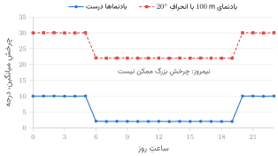
مثال 13.21 (چرخشی که در نیمروز ممکن نیست) پرسش. چرخشِ میانگینِ نیمروز و شب را برای بادنماهای درست و برای بادنمای 100 m با انحرافِ +20° حساب کنید.
پاسخ. خروجیِ بالا و شکل 13.7: درست +2 و +10°؛ با انحراف +22 و +30°.
تفسیر. شکلِ منحنی همان است و فقط جابهجا شده: امضای یک انحرافِ ثابت. چرخشِ 22° در چهل متر در نیمروزِ ناپایدار با فیزیک نمیخواند. اقدام: عکسهای نصب، وارسیِ قطبنمایی در بازدیدِ بعدی، و مقایسه با جهتِ لیدار؛ سپس اصلاحِ ثابت با سند. پیش از آن، تحلیلهای وابسته به جهت (بخشها، سایهٔ دکل، دنباله) متوقف میشوند. وارسی: \(2 + 20 = 22\) (درست).
- چرا چرخشِ نیمروز معیارِ خوبی برای وارسیِ بادنماست؟
- انحرافِ ثابت و چرخشِ واقعی چه فرقی در منحنیِ ساعتی دارند؟
- کدام تحلیلها تا اصلاحِ بادنما متوقف میشوند؟
13.7.5 گزارشِ ماهانهٔ کمپین
ایده. گزارشِ ماهانه به مالکِ پروژه میگوید کمپین سالم است و کجا اقدام لازم است. سرفصلهای پیشنهادیِ نیروگاهِ P:
- خلاصه: بازیابیِ هر حسگر در ماه و از آغاز، رویدادها و اقدامها.
- نمودارهای پایش: نسبتهای هفتگیِ بادسنجها (شکل 13.14)، اختلافِ دو بادنما و چرخش بر حسبِ ساعت (شکل 13.7)، تندی و دما.
- پرچمها: شمارِ هر کدِ علت؛ دورههای یخ، گیرکردگی و قطعی.
- آمارِ ماه: تندیِ میانگین در هر ارتفاع، برش، تلاطم، گلِ باد، بیشینهها؛ مقایسه با منبعِ مرجع در همان ماه.
- ابزار و فراداده: هر تغییر، تعویض یا تنظیمِ تازه با تاریخ.
- اقدامهای باز: با مسئول و تاریخ.
گزارشهای ماهانه با هم دفترِ کمپین میشوند و در پایان پایهٔ گزارشِ پذیرش (مثال 13.40).
- شش بخشِ گزارشِ ماهانه را بنویسید.
- چرا مقایسه با منبعِ مرجع در هر ماه مفید است؟
- اقدامِ باز بدونِ مسئول و تاریخ چه مشکلی دارد؟
13.8 پ. توصیفِ بلندمدت
بخشِ پ از سالِ اندازهگیریشده به باد در ارتفاعِ توپی و در دههها میرسد: برونیابیِ عمودی، بخشهای جهت، توزیع، اندازهگیری–همبستگی–پیشبینی، بادِ حدی و عدمِ قطعیت. منبعِ بلندمدت یک سریِ ساختگیِ شبیهِ بازتحلیل است (A-253) با بیست سال داده که سالِ ۲۰۲۳ آن حدودِ 2.5 % زیرِ میانگین است.
13.8.1 برونیابی به ارتفاعِ توپی
ایده. اگر توپی بالاتر از بلندترین بادسنج باشد، تندی با معادلهٔ 13.1 برونیابی میشود. دو انتخاب هست: یک نمای برشِ میانگین برای همهٔ رکوردها، یا نمای برشِ هر رکورد (یا هر ساعتِ روز) که شب و روز را جدا میگیرد. چون انرژی با توانِ بالای تندی تغییر میکند، زمانبندیِ برش میتواند مهم باشد.
from the 100 m mast to higher hubs (true mast year):
hub m one shear shear row by row difference
120 19,410 19,392 -0.09 %
150 20,922 20,871 -0.24 %
one shear exponent 0.233 (mean profile); row by row it is
high at night and low by day; for the energy of this site the
difference is small (a few tenths of a per cent), but it is
large for the loads of each hour and for comparing a lidar's
upper heights with an extrapolated mast
(MWh per turbine a year, data-pack power curve, 1.225 kg/m3)مثال 13.22 (یک برش یا برشِ ساعتی؟) پرسش. انرژیِ یک توربین را در توپیِ 120 و 150 m با یک نمای برش و با برشِ رکوردبهرکورد (از 60 و 100 m) حساب کنید.
پاسخ. خروجیِ بالا: اختلاف −0.09 % در 120 و −0.24 % در 150 m.
تفسیر. برای انرژیِ این ساختگاه، برشِ میانگین کافی است؛ اما برای بارِ هر ساعت و برای مقایسهٔ لیدار با دکلِ برونیابیشده، برشِ ساعتی لازم است. اختلاف با فاصلهٔ برونیابی بیشتر میشود؛ این خودش دلیلی برای اندازهگیری تا ارتفاعِ توپی است. وارسی: با برشِ 0.233، ضریبِ 120 m \(1.2^{0.233} = 1.043\) است و انرژی حدودِ 7 % بیشتر از 100 m (با حساسیتِ 1.6، درست).
- دو روشِ برونیابی را مقایسه کنید.
- چرا برشِ ساعتی برای بار مهمتر از انرژی است؟
- ضریبِ تندیِ 150 m با برشِ 0.233 چیست؟
13.8.2 بخشهای جهت و گلِ باد
ایده. گلِ باد سهمِ زمان و سهمِ انرژی را در هر بخشِ جهت نشان میدهد؛ این دو یکی نیستند چون تندی در جهتها فرق دارد. سهمِ انرژی چیدمانِ توربینها (فصلهای ۱۱ و ۱۴)، جهتِ بازوهای دکل و ارزیابیِ دنباله را تعیین میکند.
wind rose at 100 m, 12 sectors (true mast year):
sector share of time mean m/s share of energy
0- 30 0.3 % 7.83 0.3 %
30- 60 0.7 % 8.68 1.0 %
60- 90 3.9 % 7.89 4.9 %
90-120 6.7 % 7.89 8.1 %
120-150 4.6 % 7.32 4.8 %
150-180 0.7 % 5.44 0.4 %
180-210 0.5 % 7.85 0.6 %
210-240 4.9 % 7.77 5.7 %
240-270 19.8 % 7.04 19.6 %
270-300 34.2 % 7.18 34.6 %
300-330 19.8 % 6.44 16.5 %
330-360 3.8 % 6.66 3.4 %
energy comes from fewer directions than time does: the wake
layout of chapter 11 and the boom orientation follow it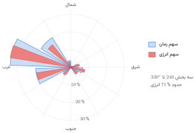
تفسیر. سه بخشِ 240 تا 330° حدودِ هفتاد درصدِ انرژی را دارند؛ بخشِ 300 تا 330° سهمِ زمانِ بیشتری از سهمِ انرژی دارد، چون باد در آن کندتر است. بخشِ 300 تا 330° و بخشِ کناریِ آن (330 تا 360°) همانهاییاند که بازوی 80 m را در سایه گذاشتند (بخش 13.11.1).
- چرا سهمِ زمان و سهمِ انرژیِ یک بخش فرق دارند؟
- گلِ بادِ انرژی در کدام تصمیمهای طراحی به کار میرود؟
13.8.3 توزیعِ تندی
ایده. توزیعِ وایبول (فصلهای ۳ و ۵) خلاصهٔ دوپارامتریِ تندی است. اما بازهٔ میانگینگیری توزیع را تغییر میدهد: میانگینِ ساعتی نوسانهای دهدقیقهای را صاف میکند. منحنیِ توانِ استاندارد با میانگینِ دهدقیقهای ساخته میشود و باید با توزیعِ همان بازه به کار رود.
distribution of the 100 m speed, ten-minute against hourly means:
ten-minute: Weibull k 2.10, c 8.01 m/s; energy 18,166 MWh
hourly: Weibull k 2.11, c 8.01 m/s; energy 18,184 MWh (+0.10 %)
hourly averaging narrows this site's distribution only a little
and moves the energy by a tenth of a per cent: hourly data are
enough for energy here; ten-minute data are still needed for
turbulence, gusts and power-curve work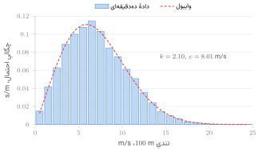
تفسیر. در این ساختگاهِ ساختگی اثرِ میانگینگیری کوچک است (یکدهم درصد انرژی)، چون نوسانِ درونِ ساعتِ سریِ ساختگی کم است؛ در ساختگاهِ واقعیِ پرتلاطم بزرگتر است. قاعده: بازهٔ داده و منحنی یکی باشد و اگر نیست، اثرش اندازهگیری و سند شود.
- چرا میانگینِ ساعتی توزیع را باریکتر میکند؟
- چرا منحنیِ توان باید با توزیعِ دهدقیقهای به کار رود؟
13.8.4 اندازهگیری، همبستگی، پیشبینی
ایده. همان منطقِ تصحیحِ بلندمدتِ خورشید (بخش 12.4.8)، با نامِ اندازهگیری–همبستگی–پیشبینی: در دورهٔ همزمان رابطهٔ ساختگاه با منبعِ مرجع ساخته و به سریِ بلندمدتِ مرجع اعمال میشود. سه روشِ رایج:
\[ \begin{aligned} \text{خطِ کمترین مربعات:}\quad & \hat y = a + b\,x,\quad b = r\,\frac{s_y}{s_x} , \\ \text{نسبتِ واریانس:}\quad & \hat y = \bar y + \frac{s_y}{s_x}\,(x - \bar x) , \\ \text{نسبتِ بخشی:}\quad & \hat y = \frac{\bar y_j}{\bar x_j}\,x \quad \text{در هر بخشِ جهتِ } j . \end{aligned} \tag{13.9}\]
خطِ کمترین مربعات پراکندگی را کم میکند (چون \(r < 1\)، E13) و چون انرژی با توانِ بالای تندی است، انرژی را کم برآورد میکند؛ نسبتِ واریانس پراکندگی را نگه میدارد (E12).
def mcp_linear(x_conc, y_conc, x_long):
"""Least-squares line y = a + b x on the concurrent period, applied to
the long-term reference (it shrinks the spread of y)."""
b, a = np.polyfit(x_conc, y_conc, 1)
return a + b * np.asarray(x_long, float), float(a), float(b)
def mcp_variance_ratio(x_conc, y_conc, x_long):
"""Variance-ratio method: keeps the mean and the spread of the site."""
x, y = np.asarray(x_conc, float), np.asarray(y_conc, float)
b = y.std() / x.std()
a = y.mean() - b * x.mean()
return a + b * np.asarray(x_long, float), float(a), float(b)
def mcp_sector_ratio(x_conc, y_conc, wd_conc, x_long, wd_long, width=30.0):
"""Ratio of means by direction sector of the reference."""
x, y = np.asarray(x_conc, float), np.asarray(y_conc, float)
wdc, wdl = np.asarray(wd_conc, float) % 360, np.asarray(wd_long, float) % 360
xl = np.asarray(x_long, float)
out = np.empty_like(xl)
for a in np.arange(0.0, 360.0, width):
sc = (wdc >= a) & (wdc < a + width)
sl = (wdl >= a) & (wdl < a + width)
r = y[sc].mean() / x[sc].mean() if sc.sum() > 10 else y.mean() / x.mean()
out[sl] = r * xl[sl]
return out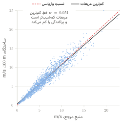
مثال 13.23 (سه روش، یک سالِ کمی آرام) پرسش. با تندیِ ساعتیِ کنترلشدهٔ 100 m و منبعِ مرجع، تندیِ بلندمدت و انرژیِ یک توربین را با سه روش بیابید و با «حقیقتِ» ساختگیِ این ساختگاه مقایسه کنید.
پاسخ.
measure-correlate-predict, hourly, 100 m (A-253):
concurrent hours 8,611; correlation r = 0.951
site 2023 mean 7.066 m/s; reference 2023 6.494, 20 years 6.662
method long-term mean energy MWh/turbine
linear least squares 7.239 m/s 18,569
variance ratio 7.248 m/s 18,640
sector ratio 7.248 m/s 18,638
site year as measured 7.066 m/s 18,047
'true' long-term mean of this synthetic site: 7.242 m/s
the line of least squares shrinks the spread (r < 1) and loses
energy from the cube; variance ratio keeps it; the methods'
spread is part of the long-term uncertaintyتفسیر. هر سه روش تندیِ بلندمدت را درست (در چند هزارم) مییابند، اما خطِ کمترین مربعات انرژی را حدودِ 0.4 % کمتر میدهد: اثرِ کوچکشدنِ پراکندگی. سالِ اندازهگیری حدودِ 2.5 % کمتر از بلندمدت بود؛ بیتصحیح، انرژی حدودِ سه درصد کم برآورد میشد. وارسی: با نسبتِ ساده، \(7.066 \times 6.662/6.494 = 7.249\) (E11، درست).
شرطها. همبستگیِ کافی (اینجا 0.95)، دورهٔ همزمانِ دستکم یک سال، پایداریِ منبعِ مرجع در کلِ دوره، و نزدیکیِ مرجع به ساختگاه. منبعِ مرجعی که در میانهٔ دوره دادهگذاری یا مدلش عوض شده، روند میسازد و بلندمدت را جابهجا میکند.
- سه روشِ معادلهٔ 13.9 را در یک جمله مقایسه کنید.
- چرا خطِ کمترین مربعات انرژی را کم برآورد میکند؟
- چهار شرطِ اعتبارِ این روش را بنویسید.
- شیبِ کمترین مربعات با \(r = 0.951\) و شیبِ نسبتِ واریانسِ 1.097 چیست (E13)؟
13.8.5 بادِ حدی
ایده. توربین برای بادِ حدیِ ردهٔ خود طراحی شده است (فصلِ ۱۱). بادِ حدیِ ساختگاه از بیشینههای سالانه با توزیعِ گامبل (فصلِ ۳) برآورد میشود:
\[ F(v) = \exp\!\left[-\exp\!\left(-\frac{v - \mu}{\beta}\right)\right], \qquad v_T = \mu - \beta\ln\!\left[-\ln\!\left(1 - \frac1T\right)\right] . \tag{13.10}\]
extreme wind at 100 m from 20 annual maxima (A-256):
annual maxima 25.3 .. 29.5 m/s (ten-minute, site)
Gumbel fit: location 26.72, scale 0.99 m/s
50-year return level 30.6 m/s; chance of exceeding it
at least once in 25 years 40 %
twenty maxima give a wide confidence interval; reanalysis
smooths peaks, so its extremes need a correction checked
against measured storms; the result is compared with the
reference extreme speed of the turbine class (chapter 11)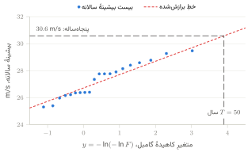
مثال 13.24 (بادِ پنجاهساله) پرسش. از بیست بیشینهٔ سالانهٔ منبعِ مرجع، مقیاسشده به ساختگاه و به بیشینهٔ دهدقیقهای (A-256)، تندیِ با دورهٔ بازگشتِ پنجاه سال را برآورد کنید.
پاسخ. خروجیِ بالا: حدودِ 30.6 m/s؛ احتمالِ دستکم یک بار دیدنِ آن در بیستوپنج سال حدودِ چهل درصد (E09، E10).
تفسیر. «پنجاهساله» یعنی احتمالِ سالانهٔ دو درصد، نه «یک بار در پنجاه سال»؛ در عمرِ نیروگاه دیدنش محتمل است. بیست نقطه بازهٔ اطمینانِ پهنی دارد و بازتحلیل اوجها را صاف میکند؛ پس عدد با طوفانهای اندازهگیریشده وارسی و با تندیِ حدیِ مرجعِ ردهٔ توربین مقایسه میشود (فصلِ ۱۱، بخش 11.3.13). وارسی: \(1 - (1 - 1/50)^{25} = 0.397\) (درست).
- معنای «تندیِ پنجاهساله» را برای یک مدیر بنویسید.
- چرا بازتحلیل بادِ حدی را کم برآورد میکند؟
- نتیجه با چه چیزی مقایسه میشود؟
13.8.6 عدمِ قطعیتِ منبعِ بادی
ایده. اجزای معمول: ابزار (واسنجی، رده، نصب، سایه)، برونیابیِ عمودی (با فاصله از بلندترین اندازهگیری)، تصحیحِ بلندمدت (همبستگی، روش، پایداریِ مرجع)، دورهٔ بلندمدت (تغییرپذیریِ سالبهسال تقسیم بر جذرِ شمارِ سالها) و برای یک سالِ خاص، خودِ تغییرپذیریِ سالبهسال. عدمِ قطعیتِ تندی با حساسیتِ انرژی به انرژی تبدیل میشود (مثال 13.35)؛ در این ساختگاه هر درصدِ تندی حدودِ 1.6 % انرژی است (E08). بودجهٔ کامل، همراهِ اجزای مدلِ تولید و تلفات، در فصلِ ۱۶ ساخته میشود.
- پنج جزءِ عدمِ قطعیتِ منبعِ بادی را بنویسید.
- چرا حساسیتِ انرژی به تندی از سه کمتر است؟
- کدام جزء با اندازهگیری در ارتفاعِ توپی حذف میشود؟
13.9 تحلیلِ عمیقتر: خلاصهها، رده، بلندمدت و چند سال
بخشِ پ ابزارهای اصلیِ تحلیل را داد. این بخش پنج پرسشِ دقیقتر را میپرسد که هر ارزیابیِ منبع باید پاسخ دهد: آیا وایبول جای سریِ زمانی را میگیرد؟ تلاطمِ ساختگاه با توربین سازگار است؟ دورهٔ همزمانِ کوتاه چه خطایی دارد؟ اگر منبعِ مرجع خودش عوض شده باشد؟ و P90ِ یک سال با ده سال چه فرقی دارد؟
13.9.1 وایبول یا سریِ زمانی
ایده. وایبول (فصلهای ۳ و ۵) توزیعِ تندی را با دو عدد خلاصه میکند. سه روشِ برازش رایج است: گشتاورها (میانگین و واریانس)، بیشینهٔ درستنمایی و کمترین مربعات روی تابعِ توزیعِ تجمعی. هر سه میانگین را خوب میگیرند؛ پرسش این است که انرژی، که از دنبالهٔ بالای توزیع و منحنیِ توان میآید، چقدر جابهجا میشود.
energy of one turbine (pack curve, 1.225 kg/m3) from the
ten-minute series against Weibull fits of it:
method k c m/s MWh difference
time series 18,166
moments 2.10 8.01 18,103 -0.35 %
maximum likelihood 2.10 8.01 18,095 -0.39 %
least squares (CDF) 2.09 8.01 18,101 -0.36 %
here all three fits come within 0.4 % of the series: the
Weibull is a good summary of this site; with calm spells or
two wind regimes it is not, so the time series (with its
direction and hour) stays the basis and the fit a checkمثال 13.25 (سه برازش، یک سری) پرسش. وایبول را با سه روش به تندیِ دهدقیقهایِ 100 m برازش دهید و انرژیِ یک توربین را از هر برازش و از خودِ سری (منحنیِ بسته در 1.225 kg/m³) حساب کنید.
پاسخ. خروجیِ بالا: سری 18,166 MWh؛ برازشها با \(k\) حدودِ 2.09 تا 2.10 و \(c\) 8.01 m/s، انرژی 0.35 تا 0.39 % کمتر.
تفسیر. در این ساختگاه وایبول خلاصهٔ خوبی است. اما سری اطلاعاتی دارد که وایبول ندارد: جهت، ساعت، چگالی و همزمانی با تابش و بار. برای نیروگاهِ هیبریدی، که ارزشِ هر مگاواتساعت به ساعتِ تولیدش بستگی دارد (فصلهای ۱۷ و ۱۸)، سریِ زمانی پایه است و وایبول وارسی و گزارش. در ساختگاهی با دو رژیمِ باد (مثلاً بادِ زمستانی و نسیمِ تابستانی) یک وایبول ممکن است چند درصد خطا بدهد. وارسی: \(18{,}103/18{,}166 - 1 = -0.35\ \%\) (درست).
- سه روشِ برازشِ وایبول را نام ببرید.
- چرا دنبالهٔ بالای توزیع برای انرژی مهم است؟
- سریِ زمانی چه اطلاعاتی دارد که وایبول ندارد؟
13.9.2 تلاطمِ نماینده و منحنیِ طراحی
ایده. برای سازگاریِ ساختگاه، تلاطم در هر بازهٔ تندی با منحنیِ طراحیِ توربین مقایسه میشود. مقدارِ مقایسه نماینده است، نه میانگین: میانگین بهعلاوهٔ چند انحرافِ معیار، چون بار را ساعتهای پرتلاطم میسازند. با فرضِ توزیعِ نرمال، چندکِ نود درصد:
\[ I_\text{rep} = \bar I + 1.28\,\sigma_I . \tag{13.11}\]
تعریفِ دقیق و منحنیِ مرجع در استانداردِ طراحی (IEC 61400-1:2019) آمدهاند و این کتاب مقدارهای آن را نقل نمیکند؛ منحنیِ این مثال یک منحنیِ ساختگیِ سازنده است (A-258).
representative turbulence (mean + 1.28 sd in each bin) against
the manufacturer's design curve (synthetic, A-258):
bin m/s n mean sd represent. design margin
5 5287 0.219 0.045 0.276 0.340 +23.0 %
7 5851 0.170 0.035 0.215 0.277 +28.9 %
9 4174 0.144 0.030 0.182 0.240 +31.6 %
11 2969 0.126 0.026 0.159 0.215 +34.9 %
13 1468 0.110 0.023 0.140 0.197 +40.9 %
15 607 0.103 0.022 0.132 0.184 +39.7 %
17 230 0.101 0.019 0.126 0.173 +37.9 %
19 77 0.091 0.019 0.114 0.165 +44.3 %
the site sits under the curve in every bin: ambient turbulence
is compatible; wakes of neighbours add to it (effective
turbulence, chapter 14), and the manufacturer confirms with
its own load calculation (chapter 16)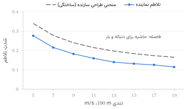
مثال 13.26 (حاشیه در هر بازه) پرسش. تلاطمِ نمایندهٔ 100 m را در بازههای 5 تا 19 m/s حساب کنید و با منحنیِ ساختگیِ \(I_d(v) = 0.09 + 1.5/(v + 1)\) مقایسه کنید.
پاسخ. خروجیِ بالا و شکل 13.12: حاشیه از +23 % در 5 m/s تا حدودِ +40 % در بادِ تند؛ ساختگاه در همهٔ بازهها زیرِ منحنی است.
تفسیر. این تلاطمِ محیطی است. در مزرعه، توربینِ پشتِ توربینِ دیگر تلاطمِ دنباله را هم میبیند و تلاطمِ مؤثر بزرگتر میشود (فصلِ ۱۴)؛ حاشیهٔ اینجا باید آن را هم بپوشاند. بازههای بالا دادهی کمی دارند (77 رکورد در 19 m/s)؛ عدمِ قطعیتِ تلاطمِ نماینده در آنها بزرگ است. حکمِ نهایی را سازنده با محاسبهٔ بارِ خود میدهد (فصلِ ۱۶). وارسی: \(0.219 + 1.28 \times 0.045 = 0.277\) (درست، گرد شده).
- چرا تلاطمِ نماینده و نه میانگین؟
- تلاطمِ محیطی و مؤثر چه فرقی دارند؟
- چرا بازههای تندِ بالا عدمِ قطعیتِ بزرگتری دارند؟
13.9.3 طولِ دورهٔ همزمان
ایده. اندازهگیری–همبستگی–پیشبینی رابطهٔ ساختگاه و مرجع را در دورهٔ همزمان میسازد. اگر آن دوره فقط چند ماه باشد، رابطه را فصلِ همان ماهها میسازد: رابطهٔ بادِ زمستان با بادِ تابستان فرق دارد و پیشبینیِ بیست ساله سوگیری میگیرد، حتی با همبستگیِ بالا.
long-term mean (variance ratio) from a shorter concurrent period:
months used start Jan start Jul
3 7.202 7.300 (-0.5 / +0.8 %)
6 7.171 7.313 (-1.0 / +1.0 %)
9 7.213 7.274 (-0.4 / +0.5 %)
12 7.241 7.241 (+0.0 / +0.0 %)
twelve months: 7.241 m/s
a few months correlate well but carry their season's
relation: the result depends on which months; twelve
months (or several whole years) remove the seasonal biasمثال 13.27 (سه ماه از ژانویه یا از ژوئیه) پرسش. میانگینِ بلندمدت را با روشِ نسبتِ واریانس از 3، 6، 9 و 12 ماهِ همزمان حساب کنید، یک بار با آغاز از ژانویه و یک بار از ژوئیه.
پاسخ. خروجیِ بالا: با سه ماه −0.5 یا +0.8 %؛ با شش ماه −1.0 یا +1.0 %؛ با نه ماه −0.4 یا +0.5 %؛ با دوازده ماه صفر (مرجع).
تفسیر. خطا با طولِ دوره بهطورِ یکنواخت کم نمیشود: شش ماه بدتر از سه ماه است، چون همهٔ یک فصل را دارد و فصلِ دیگر را ندارد. سوگیری به کدام ماهها بستگی دارد و نشانهاش عوض میشود. دوازده ماه چرخهٔ فصلی را کامل میکند؛ با بیش از یک سال، اثرِ سالِ خاص هم کم میشود (مثال 13.18). وارسی: \(7.171/7.241 - 1 = -1.0\ \%\) (درست).
- چرا همبستگیِ بالا در دورهٔ کوتاه کافی نیست؟
- چرا شش ماه میتواند بدتر از سه ماه باشد؟
- با دادهٔ نهماهه چه اقدامی را در گزارش اعلام میکنید؟
13.9.4 پلهٔ پنهان در منبعِ مرجع
ایده. منبعِ مرجعِ بلندمدت (بازتحلیل یا ایستگاهِ هواشناسی) خودش ممکن است در طولِ زمان عوض شده باشد: تغییرِ دادههای ورودیِ بازتحلیل، جابهجاییِ ایستگاه، رشدِ درخت و ساختمان کنارِ ایستگاه. پلهٔ مصنوعی در مرجع مستقیم به میانگینِ بلندمدت میرسد. همگنی با نسبت به یک یا چند منبعِ مستقل سنجیده میشود.
a step hidden in the long-term reference (A-257):
ratio to a neighbour series: 2004-2013 1.006, 2014-2023 1.036 (t = 6.8)
long-term factor for 2023: clean 1.0204, with the step 1.0055 (-1.5 %)
a step in the reference moves the whole long-term estimate;
ratios to independent neighbours show it; use the consistent
period or a corrected series, and say so in the reportمثال 13.28 (سه درصد از ۲۰۱۴) پرسش. فرض کنید بازتحلیل از ۲۰۱۴ به دلیلِ تغییرِ دادههای ورودی سه درصد بیشتر نشان میدهد (A-257). نسبتِ سالانهٔ آن به یک سریِ همسایه را پیش و پس از ۲۰۱۴ مقایسه کنید و اثرش را بر ضریبِ بلندمدتِ سالِ ۲۰۲۳ بیابید.
پاسخ. خروجیِ بالا: نسبت 1.006 پیش و 1.036 پس از ۲۰۱۴ (آمارهٔ \(t\) حدودِ 6.8)؛ ضریبِ بلندمدت از 1.0204 به 1.0055 (−1.5 %).
تفسیر. چون ۲۰۲۳ در دورهٔ «پرشده» است، میانگینِ بیستساله نسبت به آن کوچکتر به نظر میرسد و بلندمدت 1.5 % کم برآورد میشود، حدودِ 2.4 % انرژی. هیچ آزمونی روی خودِ مرجع این را نشان نمیدهد؛ فقط مقایسه با منبعِ مستقل. اقدام: دورهٔ همگن، سریِ اصلاحشده، یا مرجعِ دیگر، و اعلام در گزارش (U-048). وارسی: \(1.0055/1.0204 - 1 = -1.46\ \%\) (درست).
- سه علتِ ناهمگنیِ منبعِ مرجع را نام ببرید.
- چرا آزمونِ همگنی به منبعِ مستقل نیاز دارد؟
- پلهٔ رو به بالا در سالهای اخیر بلندمدت را کم یا زیاد برآورد میکند؟ چرا؟
13.9.5 P90 برای یک سال و چند سال
ایده. عدمِ قطعیتِ انرژی دو نوع است. عدمِ قطعیتِ برآوردِ بلندمدت (ابزار، بلندمدت، برونیابی، مدل) برای همهٔ سالها یکی است و با گذشتِ زمان کم نمیشود. تغییرِ سالبهسال تصادفی است و در میانگینِ چند سال کوچک میشود. برای میانگینِ \(N\) سال:
\[ u_N = \sqrt{u_\text{LT}^2 + \frac{u_\text{IAV}^2}{N}} . \tag{13.12}\]
P90 of the farm over different periods (P50 191.87 GWh):
years u(E) total P90 GWh/yr
1 6.9 % 174.8
5 4.8 % 180.1
10 4.5 % 180.9
20 4.3 % 181.3
year-to-year variation averages out over many years; the
uncertainty of the long-term estimate does not: lenders use
the one-year P90 for the debt service of each year and the
ten-year value for the loan as a whole (chapter 21)مثال 13.29 (یک سال، پنج، ده و بیست) پرسش. با P50ِ 191.87 GWh، عدمِ قطعیتِ بلندمدتِ انرژیِ 4.1 % و تغییرِ سالبهسالِ 5.6 %، P90 را برای میانگینِ 1، 5، 10 و 20 سال حساب کنید.
پاسخ. خروجیِ بالا: 174.8، 180.1، 180.9 و 181.3 GWh در سال.
تفسیر. از یک سال به ده سال P90 حدودِ شش گیگاواتساعت بالا میرود، اما از ده به بیست سال فقط چهار دهم: پس از چند سال، عدمِ قطعیتِ برآورد غالب است و فقط اندازهگیریِ بهتر آن را کم میکند (مثال 13.18). وامدهنده هر دو را میخواهد: P90ِ یکساله برای پوششِ بدهیِ هر سال و دهساله برای کلِ وام (فصلِ ۲۱). این جمعِ تنها جزءهای باد است؛ تلفها و عدمِ قطعیتِ مدلِ تولید در فصلهای ۱۵ و ۱۶ افزوده میشوند. وارسی: \(\sqrt{4.1^2 + 5.6^2/10} = 4.47\ \%\) (درست).
- دو نوعِ عدمِ قطعیتِ انرژی را تعریف کنید.
- چرا P90ِ بیستساله نزدیکِ دهساله است؟
- وامدهنده P90ِ یکساله را برای چه میخواهد؟
13.10 بلندمدت در عمل: طوفانها، ماتریس، زمانِ تولید و پرکردن
چهار درسِ پایانیِ بخشِ پ چهار کارِ روزمرهٔ تحلیلگرِ منبعِ باد را نشان میدهند: بادِ حدی را از همهٔ طوفانها برآورد کردن و تندباد را از آن ساختن، روشِ ماتریسیِ اندازهگیری–همبستگی–پیشبینی، دیدنِ اینکه باد کی تولید میکند (که برای نیروگاهِ هیبریدی به اندازهٔ چقدر مهم است)، و پرکردنِ دادهای که کنترلِ کیفیت کنار گذاشت.
13.10.1 طوفانها بالای آستانه و تندبادِ پنجاهساله
ایده. روشِ بیشینههای سالانه (بخش 13.8.5) از هر سال فقط یک عدد برمیدارد؛ سالی که سه طوفانِ بزرگ داشت دو تا را دور میریزد. روشِ قلهها بالای آستانه همهٔ طوفانهای مستقل بالای آستانهٔ \(u\) را نگه میدارد. اگر \(\lambda\) شمارِ طوفان در سال و فزونیِ قلهها بر آستانه نمایی با میانگینِ \(\sigma\) باشد:
\[ v_T = u + \sigma \ln(\lambda T) . \tag{13.13}\]
(این همان قانونِ گامبل برای بیشینهٔ سالانه است با مکانِ \(u + \sigma\ln\lambda\) و مقیاسِ \(\sigma\).) تندبادِ طراحی از تندیِ دهدقیقهای و ضریبِ تندباد در شرایطِ طوفان (معادلهٔ 13.5) برآورد میشود؛ روشِ دقیق و رابطهاش با ردهٔ توربین در استانداردِ طراحی است.
50-year ten-minute wind from 20 years of synthetic storms (A-257):
storms above 25.3 m/s: 83 in 20 years; annual maxima: 20
method 50-year m/s 90 % interval (bootstrap)
annual maxima 32.7 29.3 .. 35.3
peaks over threshold 30.9 29.6 .. 32.3
true value of this synthetic climate: 30.6 m/s
50-year gust, x (1 + 2.5 x 0.10) at storm turbulence: 38.6 m/s
the storm method uses every storm, not one per year: its
interval is narrower; both need independent storms and a
threshold chosen with care; the design value and its gust
relation follow the design standard's method (chapter 11)مثال 13.30 (هشتاد و سه طوفان یا بیست بیشینه) پرسش. بیست سال طوفانِ ساختگی (A-257: چهار طوفان در سال، قلهها بالای 25.3 m/s با فزونیِ نماییِ میانگینِ 1.0 m/s) بسازید. بادِ پنجاهساله را با بیشینههای سالانه و با قلهها بالای آستانه برآورد کنید، بازهٔ نود درصد را با بازنمونهگیری بسازید، و تندبادِ پنجاهساله را با ضریبِ قلهٔ 2.5 و تلاطمِ طوفانِ 0.10 برآورد کنید.
پاسخ. خروجیِ بالا: بیشینههای سالانه 32.7 m/s با بازهٔ 29.3 تا 35.3؛ قلهها 30.9 m/s با بازهٔ 29.6 تا 32.3؛ مقدارِ واقعیِ این اقلیمِ ساختگی 30.6 m/s؛ تندبادِ پنجاهساله حدودِ 38.6 m/s.
تفسیر. با همان بیست سال، روشِ طوفانها بازهای حدودِ نصف دارد، چون از 83 قله بهجای 20 عدد استفاده میکند. دو شرط دارد: طوفانها مستقل باشند (قلههای یک طوفان دو بار شمرده نشوند؛ معمولاً با فاصلهٔ زمانیِ کمینه) و آستانه با دقت انتخاب شود. برآوردِ بیشینههای سالانهٔ این نمونه دو متر بر ثانیه بالاست، نه به دلیلِ خطای روش بلکه به دلیلِ نمونهٔ کوچک: بازهاش مقدارِ واقعی را میپوشاند. وارسی: \(25.3 + \ln 4 + 3.902 = 30.59\) (درست).
- چرا روشِ قلهها بالای آستانه بازهٔ باریکتری دارد؟
- «طوفانِ مستقل» یعنی چه و چرا مهم است؟
- معادلهٔ 13.13 را برای \(T = 50\) سال با \(u = 25\)، \(\sigma = 1.2\) و \(\lambda = 3\) حساب کنید.
13.10.2 روشِ ماتریسی
ایده. روشِ نسبتِ بخشی (معادلهٔ 13.9) نسبتِ ساختگاه به مرجع را در هر بخشِ جهت ثابت میگیرد. اما در بادِ تند، مرجعِ هموارشده (بازتحلیل) قلهها را کمتر میبیند و نسبت با تندی تغییر میکند. روشِ ماتریسی نسبت را در هر خانهٔ «بخشِ جهت × بازهٔ تندیِ مرجع» حساب میکند. هزینهاش خانههای کمداده است: خانهای با چند ساعت نسبتِ ناپایدار میدهد و باید به نسبتِ بخش برگردد.
the matrix method against the others (long term, 100 m):
method mean m/s MWh a year per turbine
variance ratio 7.248 18,640
sector ratio 7.248 18,638
matrix (sector x speed bin) 7.257 18,935
the matrix lets the ratio change with speed and keeps more of
the strong winds: +0.1 % of mean speed but +1.6 % of energy;
thin cells (under 30 hours) fall back to the sector ratio; the
spread between methods is part of the MCP uncertaintyمثال 13.31 (یک دهم درصد تندی، یک و نیم درصد انرژی) پرسش. میانگینِ بلندمدت و انرژیِ یک توربین را با روشهای نسبتِ واریانس، نسبتِ بخشی و ماتریسی (دوازده بخش، بازههای 2 m/s، کمینهٔ سی ساعت) مقایسه کنید.
پاسخ. خروجیِ بالا: 7.248، 7.248 و 7.257 m/s؛ انرژی 18,640، 18,638 و 18,935 MWh.
تفسیر. تفاوتِ میانگینِ تندی ناچیز است اما انرژی 1.6 % فرق میکند: روشِ ماتریسی سهمِ بادهای تند را بیشتر نگه میدارد و مکعبِ تندی آن را بزرگ میکند. کدام درست است؟ با دادهٔ یک سال نمیتوان مطمئن بود؛ برای همین روشها با اعتبارسنجیِ متقابل (کنار گذاشتنِ ماهها، تمرین 13.128) مقایسه میشوند و پراکندگیِ آنها جزئی از عدمِ قطعیتِ بلندمدت (2.0 % در مثال 13.35) است. وارسی: \(18{,}935/18{,}640 - 1 = 1.6\ \%\) (درست).
- چرا نسبتِ ساختگاه به بازتحلیل ممکن است با تندی تغییر کند؟
- خانهٔ کمداده چه مشکلی میسازد و چه راهحلی دارد؟
- چرا تفاوتِ انرژی بیشتر از تفاوتِ تندیِ میانگین است؟
13.10.3 باد کی تولید میکند
ایده. برای مزرعهٔ بادیِ تنها، انرژیِ سالانه پرسشِ اصلی است. برای نیروگاهِ هیبریدی با حدِ صادراتِ 100 MW، زمانِ تولید هم مهم است: انرژیِ بادی که در ساعتهای تابش میآید با خورشیدی رقابت میکند و ممکن است بریده شود؛ انرژیِ شبانه جای خالی را پر میکند (فصلهای ۱۷ و ۱۸). برشِ شبانه (مثال 13.1) یعنی توپیِ بلندتر بیشترِ انرژیِ اضافهاش را شب میگیرد.
when the wind produces, by hub height (true mast year, 12 turbines,
pack curve at 1.225 kg/m3, PV from the screening model):
hub m wind GWh night share in PV hours curtailed at 100 MW
60 176.6 43.6 % 46.5 % 0.17 GWh
100 218.0 46.4 % 43.9 % 0.25 GWh
150 250.5 47.7 % 42.6 % 0.32 GWh
a taller hub adds more of its energy at night, when the stable
shear is large and the PV is off: the hybrid's profile fills;
curtailment stays near a tenth of a per cent of the wind energy;
a reason to measure the shear by hour (chapter 17 uses it)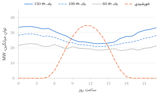
مثال 13.32 (باد در شب، خورشید در روز) پرسش. انرژیِ دوازده توربین، سهمِ شب (۲۰ تا ۶)، سهمی که در ساعتهای تولیدِ خورشیدی میآید و بُرش در حدِ 100 MW را برای توپیهای 60، 100 و 150 m حساب کنید (منحنیِ بسته در 1.225 kg/m³، بی تلف و دنباله؛ خورشیدی با مدلِ غربالگریِ فصلِ ۱).
پاسخ. خروجیِ بالا و شکل 13.13: انرژی 176.6، 218.0 و 250.5 GWh؛ سهمِ شب 43.6، 46.4 و 47.7 %؛ سهم در ساعتهای خورشیدی 46.5، 43.9 و 42.6 %؛ بُرش 0.17، 0.25 و 0.32 GWh.
تفسیر. منحنیِ روزانهٔ باد در این ساختگاه با خورشید مکمل است و هرچه توپی بالاتر، مکملتر: درهٔ نیمروزِ باد درست زیرِ قلهٔ خورشید است. بُرش در هر سه حدودِ یکدهم درصدِ انرژیِ باد میماند، چون فقط وقتی هر دو منبع نزدیکِ بیشینهاند رخ میدهد. این عددها ناخالص و سادهاند؛ مدلِ ساعتیِ کامل (تلفها، دسترسپذیری، ذخیرهساز) در فصلهای ۱۵ و ۱۷ میآید. درسِ اندازهگیری: برش بر حسبِ ساعت را باید اندازه گرفت، نه فقط میانگینش. وارسی: \(250.5/218.0 - 1 = 14.9\ \%\) (درست).
- چرا توپیِ بلندتر سهمِ شبانه را بیشتر میکند؟
- چرا بُرش در حدِ صادرات اینقدر کوچک است؟
- کدام دادهٔ کمپین برای مدلِ ساعتیِ هیبریدی لازم است؟
13.10.4 پرکردنِ داده با جایگزینی
ایده. کنترلِ کیفیت رکوردهای بد را پرچم میزند و کنار میگذارد. برای بعضی تحلیلها (برش در 80 m، بارِ ساعتی) سریای پیوسته لازم است. جایگزینی رکوردِ کنار رفته را از حسگرهای سالمِ همان زمان میسازد: از نیمرخِ همان رکورد، از برشِ ساعتی، یا از خطی که روی رکوردهای سالم برازش شده است. روش با آزمودن روی رکوردهای سالم (پنهانکردن و بازسازی) انتخاب میشود.
filling the 80 m records the QC removed (shadow, wear) and checking
each method against the true 80 m speed (synthetic, so known):
method bias rms error
profile of the same record (60/100) -0.00 % 0.000 m/s
shear by hour from 100 m +0.09 % 0.068 m/s
line fitted on clean 80/100 records +0.28 % 0.168 m/s
records filled: 27,361
the same-record profile is exact here only because the synthetic
profile is a pure power law; on real data it is still the best
start, as it carries the hour's stability, and its error is
measured on clean records; filled values are flagged
'substituted' and never count as measured data recoveryمثال 13.33 (بیست و هفت هزار رکوردِ پرشده) پرسش. رکوردهای 80 m که برای سایهٔ دکل و فرسایش کنار رفتند را با سه روش پر کنید و خطای هر روش را با تندیِ واقعیِ 80 m (که در دادهٔ ساختگی معلوم است) بسنجید.
پاسخ. خروجیِ بالا: نیمرخِ همان رکورد بیخطا (به دلیلِ ساختِ داده)، برشِ ساعتی +0.09 % و خطای ریشهٔ میانگینِ مربعاتِ 0.068 m/s، خطِ برازششده +0.28 % و 0.168 m/s؛ 27,361 رکورد.
تفسیر. صفر بودنِ خطای روشِ نخست هشدار است، نه موفقیت: دادهٔ ساختگی دقیقاً قانونِ توانی است و هر روشی که همان قانون را به کار ببرد آن را بیخطا بازمیسازد. در دادهٔ واقعی خطا را با پنهانکردنِ رکوردهای سالم و بازسازیشان میسنجیم. ترتیبِ روشها اما درس است: روشی که پایداریِ همان ساعت را دارد از خطِ ثابت بهتر است. هر رکوردِ پرشده برچسبِ «جایگزین» میگیرد و در بازیابی شمرده نمیشود (مثال 13.15). وارسی: خطای نسبیِ خطِ برازششده سه برابرِ برشِ ساعتی است (\(0.28/0.09 \approx 3\)، درست).
- سه روشِ جایگزینی را نام ببرید.
- چرا خطای صفر در دادهٔ ساختگی هشدار است؟
- چرا رکوردِ پرشده در بازیابی شمرده نمیشود؟
13.11 ت. آزمایشگاهِ تحلیل
بخشِ ت مثالِ کارشدهٔ فصل را میآورد: تشخیصِ یک حسگرِ معیوب از ناسازگاریِ دو ارتفاع و سندکردنِ اثرِ آن بر عدمِ قطعیت؛ سپس بودجهٔ عدمِ قطعیتِ منبع و محدودیتهای داده پیش از مدلِ تولید.
13.11.1 تشخیصِ ناسازگاریِ دو ارتفاع
ایده. سه بادسنجِ یک دکل در هر رکورد نسبتهایی دارند که با برش تعیین میشوند و جز آن نباید به چیزی وابسته باشند. اگر نسبتِ یک حسگر به همسایههایش با زمان، جهت یا تندی تغییر کند، آن حسگر یا جای آن مشکل دارد. روش: نسبتها را بر حسبِ ماه، بخشِ جهت و بازهٔ تندی بسازید و هر بادسنج را با دو همسایه بسنجید؛ حسگری که با هر دو ناسازگار است، مقصر است.
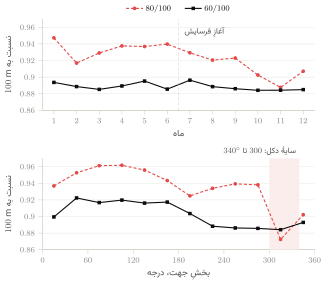
مثال 13.34 (بادسنجِ 80 متری چه مشکلی دارد؟) پرسش. (مثالِ کارشدهٔ فصل.) در دادهٔ ثبتشدهٔ دکل (A-251)، نسبتهای 80/100 و 60/100 را بر حسبِ ماه، جهت و تندی بسازید، علتِ احتمالیِ ناسازگاری را بیابید و اثرش را بر برش، انرژیِ توپیِ 120 m و عدمِ قطعیت سند کنید.
پاسخ، گامِ ۱: تشخیص.
the 80 m cup against its neighbours (logged year, A-251):
by month 80/100 60/100
Jan 0.9473 0.8936
Feb 0.9169 0.8886
Mar 0.9291 0.8852
Apr 0.9376 0.8893
May 0.9369 0.8952
Jun 0.9398 0.8855
Jul 0.9293 0.8963
Aug 0.9205 0.8885
Sep 0.9230 0.8860
Oct 0.9025 0.8841
Nov 0.8876 0.8842
Dec 0.9071 0.8849
by direction: the 80/100 ratio dips in the sectors 300-330 and
330-360 (0.872, 0.902) against 0.939 elsewhere; 60/100 is flat
from July, low winds read lower still: 80/100 = 0.892 below 5.5 m/s, 0.917
above 8 m/s
diagnosis: (1) mast shadow on the 80 m boom for winds from
300-340 deg (boom on the wrong side for the prevailing wind);
(2) bearing wear from July: a growing loss and a higher
starting threshold. The 60 m cup and the vane agree with 100 mپاسخ، گامِ ۲: اثر.
effect of the faulty 80 m cup on the shear and a 120 m hub:
shear exponent from true logged
three heights 60/80/100 m 0.2344 0.2289
the two upper heights 80/100 m 0.2358 0.3856
60 and 100 m (80 m left out) - 0.2345
energy at 120 m with the true shear: 19,415 MWh per turbine
logged, three heights 19,386 MWh (-0.15 %)
logged, 80/100 m 20,217 MWh (+4.13 %)
logged, 60/100 m 19,415 MWh (+0.00 %)
sensitivity of energy to speed at this site: 1.60 % per %
the low 80 m readings barely move a three-height fit, but the
common shortcut 'shear from the two top cups' raises the
exponent by two thirds and overstates a 120 m hub by about 4 %
of energy;
leaving the faulty cup out removes the bias; two heights left
make the shear less certain (section C)تفسیر. سه نشانه، دو علت: (۱) افت در بخشهای 300 تا 360°، فقط برای 80 m و بیوابستگی به زمان: سایهٔ دکل؛ (۲) کاهشِ تدریجی از ژوئیه و افتِ بیشتر در بادِ کم: فرسایشِ یاتاقان (آستانهٔ شروعِ بالاتر). 60/100 در همهٔ نمودارها تخت است، پس بادسنجهای 60 و 100 m سالماند.
اثر بر نتیجه: برازشِ سهارتفاعه تقریباً بیتغییر میماند، اما میانبرِ رایجِ «برش از دو بادسنجِ بالا» نمای برش را دوسوم بیشتر و انرژیِ توپیِ 120 m را حدودِ 4 % بیشتر نشان میدهد. سند و اقدام: (الف) دادهٔ 80 m در بخشِ سایه همیشه و پس از ژوئن کلاً از تحلیلِ برش کنار میرود و پرچم میگیرد؛ (ب) برش از 60 و 100 m با ساعتِ روز ساخته میشود؛ (پ) چون فقط دو ارتفاعِ سالم مانده، عدمِ قطعیتِ برش برای برونیابی بیشتر گرفته میشود (مثال 13.35)؛ (ت) بادسنج تعویض و واسنجی و بازو از بخشِ غالب بیرون چرخانده میشود. وارسی: در شکل 13.14، نسبتِ 60/100 در بخشهای سایه همان است که در بقیه (درست).
- چرا حسگری که با هر دو همسایه ناسازگار است مقصر است؟
- امضای سایهٔ دکل و فرسایشِ یاتاقان را در سه نمودار بنویسید.
- چرا برازشِ سهارتفاعه کمتر از میانبرِ دوارتفاعه خطا کرد؟
- چهار اقدامِ پس از تشخیص را بنویسید.
13.11.2 پرچمها و نمودارهای کیفیت
ایده. نمودارهایی که در هر گزارشِ ماهانهٔ کمپین میآیند: سریِ زمانیِ تندیها در سه ارتفاع با پرچمها، نسبتهای ارتفاعها بر حسبِ زمان و جهت، گلِ بادِ ماه، شدتِ تلاطم بر حسبِ تندی، دما و رویدادهای یخ، و بازیابیِ هر حسگر (شکل 13.6). هر نمودار برای یک تصمیم است: نسبتها برای سلامتِ حسگر، گلِ باد برای سایه، بازیابی برای پذیرش.
- شش نمودارِ گزارشِ ماهانه را نام ببرید.
- هر نمودار کدام تصمیم را پشتیبانی میکند؟
13.11.3 بودجهٔ عدمِ قطعیت
uncertainty of the long-term hub-height wind speed (A-254):
anemometer calibration and class 1.0 %
mounting, flow distortion, tower shadow 1.0 %
long-term correction (MCP) 2.0 %
long-term period, 20 years at sd 3.5 % 0.8 %
vertical extrapolation (hub at 100 m: none) 0.0 %
combined wind speed 2.6 %
energy: sensitivity 1.60 x 2.6 % = 4.1 % (before power curve and losses)
a hub at 150 m from the 100 m mast with a shear uncertainty of
0.03 adds 1.2 % of speed: 2.0 % of energy
measuring at hub height (or a lidar to it) is cheaper than
the energy this uncertainty costs in financing (chapter 16)مثال 13.35 (از تندی به انرژی) پرسش. با عدمِ قطعیتهای آموزشیِ A-254، عدمِ قطعیتِ تندیِ بلندمدتِ 100 m و انرژی را بیابید و هزینهٔ برونیابی به 150 m را با عدمِ قطعیتِ برشِ 0.03 برآورد کنید.
پاسخ. خروجیِ بالا: تندی 2.6 % و انرژی حدودِ 4.1 % با حساسیتِ 1.6؛ برونیابی به 150 m حدودِ 2 % انرژیِ دیگر.
تفسیر. بزرگترین جزء تصحیحِ بلندمدت است؛ دومین، اگر توپی از دکل بالاتر برود، برونیابی. هر دو با کارِ میدانی کم میشوند: کمپینِ طولانیتر یا منبعِ مرجعِ بهتر، و لیدار تا ارتفاعِ توپی. در فصلِ ۱۶ این عدمِ قطعیت به P90 و شرایطِ وام تبدیل میشود. وارسی: E16: \(\sqrt{1 + 1 + 4 + 0.64} = 2.58\ \%\) (درست).
- چرا عدمِ قطعیتِ انرژی از تندی بیشتر است؟
- بزرگترین جزءِ بودجه کدام است و چگونه کم میشود؟
- برشِ نامطمئن به اندازهٔ 0.03 در 150 m چند درصد تندی است؟
13.11.4 محدودیتها پیش از مدلِ تولید
- دادهٔ ساختگی: سالِ دکل، لیدار و منبعِ مرجع ساختگیاند (A-250 تا A-253)؛ روشها آموزش داده میشوند، نه عددهای ساختگاه (U-047).
- یک دکل برای دوازده توربین؛ تغییرِ مکانیِ باد در ساختگاه با مدلِ جریان و فاصله برآورد میشود (فصلِ ۱۴).
- برش و چرخش از 60 تا 100 m؛ بالای 100 m فقط لیدار.
- تلاطمِ دنباله و پیچیدگیِ زمین در نیامدهاند.
- بادِ حدی از بیست بیشینهٔ منبعِ مرجع با تصحیحِ ساده؛ عدمِ قطعیتِ بزرگ.
- بلندمدت فرض میکند منبعِ مرجع پایدار است و اقلیمِ دو دههٔ گذشته نمایندهٔ بیستوپنج سالِ آینده است.
- کدام محدودیت بیشترین اثر را بر برآوردِ انرژی دارد؟
- برای محدودیتِ ۲ چه کاری لازم است؟
13.12 آزمایشگاهِ دوم: کدام ارتفاعِ توپی؟
آزمایشگاهِ نخست (بخش 13.11) دادهٔ خراب را تشخیص داد. این آزمایشگاه از دادهٔ پاک یک تصمیمِ طراحی میسازد: توربینهای نیروگاهِ P روی برجِ 100، 120 یا 150 m؟ هر گزینه انرژیِ بیشتر و عدمِ قطعیتِ متفاوت دارد؛ هزینهٔ برج، پی و جرثقیل در فصلهای ۱۱، ۲۱، ۳۰ و ۳۱ میآید. اینجا فقط سمتِ منبع را میسازیم.
برنامه:
python -m companion.ch13.lab_eگامها. (۱) برشِ میانگینِ هر ساعتِ روز از بادسنجهای سالمِ 60 و 100 m؛ (۲) سریِ بلندمدتِ 100 m (مثال 13.39) با برشِ همان ساعت به 120 و 150 m؛ (۳) وارسی با لیدار در سالِ همزمان (پس از برداشتنِ سوگیریِ +0.5 % که در وارسیِ کنارِ دکل یافته شد، مثال 13.13)؛ (۴) چگالی در هر توپی (معادلهٔ 13.6)؛ (۵) انرژیِ مزرعه با منحنیِ بسته و ضریبِ دنبالهٔ D-015؛ (۶) عدمِ قطعیت با و بی لیدار؛ (۷) P90 و ارزش.
hub height study of the twelve turbines (long term, D-017):
shear by hour from 60/100 m: night 0.323, midday 0.124
lidar against the extrapolated mast: 120 m +0.00 %, 150 m -0.00 %
(synthetic data agree closely; a real site differs more)
hub m mean m/s farm GWh u(E) mast u(E) lidar P90 lidar
100 7.248 191.87 4.1 % 4.1 % 181.8
120 7.569 205.52 4.2 % 4.3 % 194.2
150 7.983 222.11 4.6 % 4.3 % 209.9
extra P90 energy against 100 m and the most a taller tower
may cost for it (20 years, 50 u/MWh, no discounting):
120 m: +12.41 GWh a year; up to 52 k u per metre per turbine
150 m: +28.09 GWh a year; up to 47 k u per metre per turbine
a taller hub gains energy from the shear and loses a little
density; the lidar keeps its uncertainty close to a hub-height
mast; the cost side (tower, foundation, crane, loads) belongs
to chapters 11, 21, 30 and 31, and discounting lowers the limit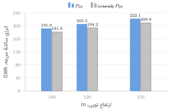
مثال 13.36 (بیست و پنجاه متر بالاتر) پرسش. انرژیِ بلندمدتِ مزرعه، عدمِ قطعیت و P90 را برای توپیهای 100، 120 و 150 m حساب کنید و بیشترین هزینهٔ اضافیِ برج در هر متر را که انرژیِ P90ِ اضافه در بیست سال (بی تنزیل، 50 u/MWh) میپوشاند بیابید.
پاسخ. خروجیِ بالا و شکل 13.15: تندیِ میانگین 7.248، 7.569 و 7.983 m/s؛ انرژیِ مزرعه 191.87، 205.52 و 222.11 GWh؛ P90 با لیدار 181.8، 194.2 و 209.9 GWh؛ سقفِ هزینه حدودِ 52 و 47 k u در هر متر برای هر توربین.
تفسیر. برشِ این ساختگاه بزرگ است و هر متر ارتفاع انرژی میآورد: +7 % برای بیست متر و +16 % برای پنجاه متر. سه نکته: (الف) در 120 m لیدار عدمِ قطعیت را کم نمیکند (برونیابیِ بیست متری از خطای لیدار کوچکتر است) اما در 150 m میکند؛ (ب) چگالی در توپیِ بالاتر کمی کمتر است و بخشی از سود را میبرد؛ (ج) سقفِ هزینه در هر متر با ارتفاع کم میشود، چون برش با لگاریتمِ ارتفاع کار میکند و انرژیِ هر متر کمتر میشود. تنزیل و افزایشِ بار، هزینهٔ پی و جرثقیل این سقف را پایینتر میآورند؛ تصمیم در فصلهای ۲۱ و ۲۲ با هزینهها گرفته میشود. وارسی: \((205.52/191.87 - 1) = 7.1\ \%\) (درست).
the 150 m farm energy with different shear assumptions:
by hour (basis) 222.12 GWh (+0.00 %)
one exponent 0.232 221.85 GWh (-0.12 %)
by hour - 0.03 218.17 GWh (-1.78 %)
by hour + 0.03 226.06 GWh (+1.77 %)
an error of 0.03 in the shear moves a 150 m hub by about
2 % of energy: the term a lidar to the hub removesمثال 13.37 (برشِ ساعتی یا یک عدد) پرسش. انرژیِ مزرعه در 150 m را با برشِ ساعتی، با یک برشِ میانگین، و با برشِ ساعتیِ منهای و بهعلاوهٔ 0.03 حساب کنید.
پاسخ. خروجیِ بالا: یک عدد −0.12 %؛ منهای و بهعلاوهٔ 0.03 حدودِ −1.8 و +1.8 %.
تفسیر. برای انرژیِ سالانه، تفاوتِ برشِ ساعتی و یک عدد کوچک است (همان نتیجهٔ مثال 13.22)؛ آنچه مهم است سطحِ برش است: خطای 0.03 حدودِ دو درصد انرژی در 150 m است، همان جزئی که لیدار حذف میکند (جدول 13.3). وارسی: \(1.6 \times \ln 1.5 \times 0.03 = 1.9\ \%\) (درست، نزدیک).
13.12.1 محدودیتهای این آزمایشگاه
- بارِ بیشترِ برجِ بلندتر، بسامدِ طبیعیِ برج (فصلِ ۱۱) و هزینهها در نظر گرفته نشدهاند.
- ضریبِ دنباله همان ضریبِ توپیِ 100 m است؛ در توپیِ بلندتر با همان فاصلهها تغییرِ کمی دارد (فصلِ ۱۴).
- لیدار و دکلِ این فصل ساختگیاند و با هم بسیار خوب میخوانند؛ در ساختگاهِ واقعی اختلافِ چند دهم تا یک درصد معمول است و خودش بخشی از عدمِ قطعیت است.
- منحنیِ توانِ توربینِ بلندتر همان فرض شده است؛ تلاطم و برشِ متفاوت در ارتفاعِ دیگر منحنی را کمی تغییر میدهند (مثال 13.4).
- هفت گامِ این آزمایشگاه را بنویسید.
- چرا لیدار در 120 m عدمِ قطعیت را کم نمیکند؟
- چرا سقفِ هزینه در هر متر با ارتفاع کم میشود؟
- کدام هزینهها در این آزمایشگاه نیامدهاند و کجا میآیند؟
13.13 نیروگاهِ P: سه مثالِ یکپارچه
سه مثالِ زیر ابزارِ فصل را روی دکلِ نیروگاهِ P میبرند: یک روزِ دکل ساعتبهساعت، باد و انرژیِ بلندمدتِ مزرعه با عدمِ قطعیت، و گزارشِ پذیرشِ کمپین. همه بر پایهٔ دادههای ساختگیِ A-250 تا A-256، تصمیمهای D-015 و D-017 و بستهٔ دادهٔ 1.1.0 هستند.
برنامه:
python -m companion.ch13.integratedمثال 13.38 (مقدماتی: یک روزِ دکل) پرسش. روزِ ۲ آوریل را از دادهٔ ثبتشده هر دو ساعت خلاصه کنید: تندی در سه ارتفاع، برش از 60 و 100 m، شدتِ تلاطم، جهت و دما.
پاسخ.
one mast day, 2 April 2023 (logged, hourly means of ten-minute data):
hour v60 v80 v100 shear TI dir T C
00 5.48 5.98 6.40 0.30 0.138 242 7.6
02 8.08 8.93 9.65 0.35 0.114 245 6.0
04 6.27 6.88 7.39 0.32 0.114 248 6.5
06 5.35 5.76 6.09 0.26 0.203 261 7.1
08 5.46 5.82 6.12 0.22 0.183 253 10.1
10 5.96 6.22 6.44 0.15 0.194 243 14.1
12 5.76 5.99 6.17 0.14 0.227 250 17.3
14 6.22 6.45 6.64 0.13 0.209 253 17.9
16 6.12 6.39 6.61 0.15 0.218 267 17.7
18 6.70 7.17 7.55 0.23 0.176 249 15.5
20 5.55 6.11 6.58 0.33 0.150 257 12.4
22 5.16 5.67 6.10 0.33 0.153 269 8.8
shear from 60 and 100 m (the 80 m cup is in the shadow sector
for part of the day); the night profile is steeper and less
turbulent, the day profile flatter and more turbulentتفسیر. چرخهٔ روزانه در یک روز پیداست: برشِ حدودِ 0.30 تا 0.35 در شب و 0.13 تا 0.15 در نیمروز، تلاطمِ شب کم و روز زیاد. برش از 60 و 100 m حساب شد، چون بادسنجِ 80 m در بخشِ سایه بود (بخش 13.11.1). وارسی: ساعتِ ۲: \(\ln(9.65/8.08)/\ln(100/60) = 0.35\) (درست).
مثال 13.39 (میانی: بادِ بلندمدت و انرژیِ مزرعه) پرسش. با روشِ نسبتِ واریانس، سریِ بلندمدتِ 100 m را بسازید؛ با چگالیِ ساعتیِ توپی (مثال 13.9)، منحنیِ بستهٔ داده و ضریبِ دنبالهٔ D-015 انرژیِ مزرعه را حساب کنید و P90ِ بلندمدت و یکساله را با عدمِ قطعیتِ مثال 13.35 بیابید.
پاسخ.
long-term wind and farm energy (variance-ratio MCP, D-017):
MCP line: site = +0.012 + 1.0862 x reference
long-term 100 m mean 7.248 m/s; 2023 7.066 m/s
farm after hub density and wakes: 2023 186.69 GWh,
long term 191.87 GWh (+2.8 %)
energy uncertainty from the wind 4.1 %: P90 long-term 181.8 GWh
one year adds year-to-year 5.6 %: P90 one year 174.8 GWh
2023 was a slightly calm year; the measured year alone would
understate the long-term energy (chapter 11 used it as it is)تفسیر. سالِ ۲۰۲۳ کمی آرامتر از میانگین بود؛ انرژیِ بلندمدتِ مزرعه حدودِ 2.8 % بیشتر از سالِ اندازهگیری است. فصلِ ۱۱ با همان سال و چگالیِ نزدیکِ زمین حساب کرد (188.16 GWh)؛ پایهٔ تازه (D-017) هر دو را اصلاح میکند: بلندمدت حدودِ +2.8 % و چگالیِ توپی حدودِ −0.5 %. این هنوز انرژیِ پیش از دسترسپذیری، تلفهای برقی و بُرش است (فصلِ ۱۵). پراکندگیِ یکساله بزرگتر از عدمِ قطعیتِ بلندمدت است و P90ِ یکساله حدودِ نه درصد زیرِ P50 است. وارسی: \(191.87 \times (1 - 1.2816 \times 0.041) = 181.8\) (درست).
مثال 13.40 (یکپارچه: گزارشِ پذیرشِ کمپین) پرسش. گزارشِ پذیرشِ کمپینِ دکلِ نیروگاهِ P را بنویسید: دوره، بازیابی، ابزارها و اقدامها، یخ، لیدار، بلندمدت، برش، تلاطم، بادِ حدی و حکم برای هر کاربرد.
پاسخ.
campaign acceptance report of the Plant P mast (PLP-GEN-REP-0005):
period: 12 months, ten-minute data, logger PLP-MET-01
recovery after QC: 100 m 98.6 %, 60 m 98.9 %, 80 m 36.9 %
(80 m: shadow sector excluded, bearing wear from July)
instruments: calibration certificates per serial; 80 m cup
replaced and recalibrated (action), boom turned out of the
prevailing sector (action)
icing: 6 events, detected at the start; heated sensors advised
lidar: verified against the 100 m cup (slope 1.005, r^2 0.997)
long term: variance-ratio MCP with a 20-year reference, r 0.95
shear: from 60 and 100 m by hour of day; veer recorded
turbulence: mean and 90 % quantile by bin for the class check
extremes: Gumbel fit of 20 annual maxima, 50-year value
accepted for: hub-height energy at 100 m; conditional for a
higher hub (lidar to hub height); not for loads at 80 mتفسیر. حکم برای کاربرد است: برای انرژیِ توپیِ 100 m پذیرفته، برای توپیِ بلندتر مشروط به لیدار، برای بارهای 80 m نه. هر خرابی یک اقدام دارد (تعویض، چرخاندنِ بازو) و هر تصمیم یک شاهد. وارسی: همهٔ عددهای گزارش از خروجیهای بخشهای ب تا ت این فصل آمدهاند (درست).
13.14 گردشِ کارِ ارزیابیِ منبعِ بادی
- پیشارزیابی با بازتحلیل و نقشهٔ باد؛ انتخابِ جای دکل نمایندهٔ توربینها (فصلِ ۱۴).
- برنامهٔ اندازهگیری (PLP-GEN-PRO-0002): جای دکل، ارتفاعها و هزینهٔ برونیابی، پیکربندی، جهتِ بازوها با گلِ بادِ پیشارزیابی، افزونگی، دو دما، یخ و برق، فراداده و مدیریتِ داده، ارزشِ گزینهها (بخش 13.5.1، بخش 13.6).
- نصب و راهاندازی: گواهیهای واسنجی، عکسها، تنظیمِ ثبتکننده، وارسیِ لیدار (بخش 13.2.10).
- کمپینِ دستکم دوازدهماهه با پایشِ هفتگیِ نسبتها، کاتالوگِ خرابیها و گزارشِ ماهانه (بخش 13.5.2، بخش 13.7).
- کنترلِ کیفیت و تشخیص (بخش 13.11.1).
- برونیابی، بخشها، توزیع، تلاطمِ نماینده، همگنیِ مرجع (بخش 13.8، بخش 13.9).
- اندازهگیری–همبستگی–پیشبینی و بادِ حدی (بخش 13.8.4، بخش 13.8.5).
- عدمِ قطعیت و گزارشِ پذیرش (بخش 13.11.3، مثال 13.40).
- تصمیمِ ارتفاعِ توپی از سمتِ منبع (بخش 13.12).
- تحویل به مدلِ تولید و سازگاریِ ساختگاه (فصلهای ۱۱، ۱۵ و ۱۶).
| رابط | مقدار یا پرسش | منبع |
|---|---|---|
| تندیِ بلندمدتِ توپی | 7.25 m/s در 100 m (ساختگی) | مثال 13.23 |
| برش و چرخش | بر حسبِ ساعتِ روز | مثال 13.1 |
| تلاطم برای رده | میانگین و چندکِ بالا در هر بازه | مثال 13.2 |
| بادِ حدی | دورهٔ بازگشتِ پنجاه سال | مثال 13.24 |
| عدمِ قطعیتِ تندی | 2.6 % | مثال 13.35 |
| چگالیِ توپی | فشارِ ایستگاه به توپی برده میشود | مثال 13.9 |
| ارتفاعِ توپی | انرژی و P90 برای 100، 120 و 150 m | مثال 13.36 |
| تلاطمِ نماینده | حاشیه با منحنیِ طراحی در هر بازه | مثال 13.26 |
13.15 آزمایشگاههای پایتونِ این فصل
| آزمایشگاه | برنامه | آنچه میسازد |
|---|---|---|
| دادههای فصل | sources | سالِ دهدقیقهایِ دکل با خطاها، لیدار، منبعِ مرجعِ بیستساله |
| اقلیم و ابزار | examples_a | نیمرخها، چرخش، تلاطم، چگالی، خطاهای بادسنج |
| کمپین و کیفیت | examples_b | لیدار و دکل، افزونگی، یخ، طولِ کمپین |
| بلندمدت | examples_c | برونیابی، گلِ باد، توزیع، سه روشِ اندازهگیری–همبستگی–پیشبینی، بادِ حدی |
| پایداری و ابزار در عمل | examples_e | ریچاردسون، تندیِ همارزِ روتور، تندباد، میانگینِ جهت، ضریبِ نادرست، چگالیِ توپی، بادنمای کج و دنباله |
| سنجشِ از دور و طراحی | examples_f | لیدار روی تپه، دادهٔ شرطی، برقِ دکل، هزینهٔ برونیابی، ارزشِ اندازهگیری |
| ادارهٔ کمپین و تحلیل | examples_g | ساعت، بادنمای گیرکرده و کج، وایبول، تلاطمِ نماینده، طولِ دوره، پلهٔ مرجع، چندساله |
| طوفانها، ماتریس، زمان و پرکردن | examples_h | قلهها بالای آستانه و تندباد، روشِ ماتریسی، سهمِ شب و بُرش، جایگزینی |
| آزمایشگاهِ تحلیل | lab_d | تشخیصِ بادسنجِ معیوب، اثر، پرچمها و بازیابی، عدمِ قطعیت |
| آزمایشگاهِ دوم | lab_e | ارتفاعِ توپی: انرژی، عدمِ قطعیت، P90 و سقفِ هزینه |
| نیروگاهِ P | integrated | یک روز، انرژیِ بلندمدت، گزارشِ پذیرش |
| مثالهای کوچک و پاسخنامه | worked، solutions | سطرهای E01 به بعد و پاسخهای عددی |
کتابخانهٔ همراه ماژولِ windres را میافزاید: قانونهای توانی و لگاریتمی و برازشِ آنها، برشِ رکوردبهرکورد، شدتِ تلاطم و آمارِ بازهای، اختلافِ جهت، نسبتِ بخشی (سایهٔ دکل)، پرچمِ یخ، مقدارِ گیرکرده، بازیابی، سه روشِ اندازهگیری–همبستگی–پیشبینی و حساسیتِ انرژی؛ با آزمونهایی که پارامترهای معلوم را از دادههای ساختهشده بازمییابند. تمرینِ پیشنهادی: در sources بازوی 80 m را به بخشِ مقابل ببرید و بازیابی و برشِ مثال 13.34 را دوباره حساب کنید.
13.16 ساخت و تولیدِ صنعتی در این فصل
کاربرد ندارد برای ساختِ بادسنج و لیدار. آنچه کاربرد دارد شاهدِ تأمینکننده و واسنجی است: گواهیِ تونلِ باد برای هر بادسنج با سریال و تابعِ انتقال، ردهٔ بادسنج، گزارشِ وارسیِ لیدار در برابرِ دکلِ مرجع، دستورِ نصب و نگهداری، و سابقهٔ پایداری. بازرسیِ دریافت و ممیزیِ تأمینکننده در فصلِ ۴۰ و ساختِ تابلوِ ثبتکننده در فصلِ ۴۸ میآیند.
13.17 جعبهٔ استاندارد و انطباق
مرجعهای زیر فقط با عنوان و ویرایشِ وارسیشده آمدهاند (دفترِ استانداردها با تاریخِ وارسی) و هیچ بند یا مقداری از آنها نقل نشده است. پذیرشِ ملیِ هیچکدام در ایران، افغانستان و تاجیکستان وارسی نشده است (فصلهای ۵۵ تا ۵۷).
- اندازهگیریِ باد برای آزمونِ منحنیِ توان (بادسنجها، نصب روی دکل، ردهبندیِ بادسنج، سنجشِ از دور): IEC 61400-12-1:2022.
- الزامهای طراحیِ توربین (ردهها، تلاطمِ مرجع، بادِ حدی، سازگاریِ ساختگاه): IEC 61400-1:2019 (فصلِ ۱۱).
- مرز: روشِ گزارشِ منبعِ بادیِ وامپذیر با مهندسِ مستقل (فصلِ ۱۶)؛ کار در ارتفاع و نجات (فصلِ ۳۲)؛ حفاظت در برابرِ صاعقه (فصلِ ۲۶)؛ مجوزِ نصبِ دکل و ارتفاعِ مجاز با مراجعِ محلی (فصلهای ۵۵ تا ۵۷).
13.18 تحویلدادنیِ نیروگاهِ P
این فصل اینها را به پروندهٔ نیروگاهِ P میافزاید:
- PLP-GEN-REP-0005، بازنگریِ A: گزارشِ منبعِ بادی و پذیرشِ کمپین (مثال 13.40، مثال 13.23، مثال 13.24).
- PLP-GEN-PRO-0002، بازنگریِ A: برنامهٔ اندازهگیریِ باد (بخش 13.5، بخش 13.14)؛ برنامه است، نه دستورِ کار.
- PLP-GEN-CAL-0005، بازنگریِ A: اندازهگیری–همبستگی–پیشبینی، انرژیِ بلندمدت و عدمِ قطعیت (مثال 13.39، مثال 13.35).
- کتابخانهٔ همراه: ماژولِ
windresبا آزمونها و برنامههایcompanion/ch13. - فرضها: A-250 سالِ دهدقیقهایِ ساختگیِ دکل (برش و چرخشِ روزانه، تلاطم، بذرِ ۱۴۱)؛ A-251 خطاهای کاشتهشده (سایهٔ دکل و فرسایشِ 80 m، یخِ 100 m، قطعِ ثبتکننده)؛ A-252 لیدارِ ساختگی (پراکندگی، سوگیری، از دست دادنِ داده، بذرِ ۱۴۲)؛ A-253 منبعِ مرجعِ بیستساله (سالِ ۲۰۲۳ حدودِ دو و نیم درصد زیرِ میانگین، بذرِ ۱۴۳)؛ A-254 عدمِ قطعیتهای آموزشیِ تندی؛ A-255 خطاهای آموزشیِ بادسنج و ضریبهای واسنجی؛ A-256 تصحیحِ بیشینههای سالانه؛ A-257 مقدارهای آموزشیِ درسهای عمیقتر (دو دما، رکوردهای ثانیهای، زاویهٔ پرتوِ لیدار، از دست رفتنِ شرطی، بارهای برقِ دکل، خرابیهای کاشتهشده، گزینههای کمپین، پلهٔ مرجع)؛ A-258 منحنیِ ساختگیِ تلاطمِ طراحیِ سازنده. همه فرضی یا ساختگی؛ در انتشارِ بعدیِ بستهٔ داده به دفترِ فرضها افزوده میشوند.
- مجهولها: U-039 اکنون روش دارد اما با دادهٔ واقعیِ ساختگاه بسته میشود؛ U-047 کمپینِ واقعیِ دکل و لیدار در جای نماینده؛ U-048 انتخاب، نسخه و پایداریِ منبعِ مرجعِ بلندمدتِ باد؛ U-049 تغییرِ مکانیِ باد میانِ دکل و دوازده جای توربین (فصلِ ۱۴).
- تصمیم D-017: پایهٔ منبعِ بادی تا پایانِ کمپینِ واقعی: تندیِ بلندمدتِ 100 m با روشِ نسبتِ واریانس از منبعِ مرجعِ بیستساله (پس از آزمونِ همگنی)؛ برش و چرخش بر حسبِ ساعتِ روز از 60 و 100 m؛ چگالی در ارتفاعِ توپی با تصحیحِ فشار و دما؛ تلاطم با تلاطمِ نماینده در هر بازه؛ بادِ حدی با گامبل؛ عدمِ قطعیتِ تندی با جذرِ مجموعِ مربعات و تبدیل با حساسیتِ انرژی؛ برای توپیِ بالاتر از 100 m لیدارِ وارسیشده تا توپی. انرژیِ مزرعه بر این پایه: P50 191.87 GWh و P90ِ بلندمدت 181.8 GWh برای توپیِ 100 m، پیش از تلفهای فصلِ ۱۵.
- دفترِ سندها (جدول 2.18): سه ردیفِ بالا با وضعیتِ «پیشنویس، آموزشی».
13.19 جمعبندی
- تندیِ باد مهمترین ورودیِ تولیدِ بادی است: در این ساختگاه هر درصدِ تندی حدودِ 1.6 % انرژی است (مثال 13.35).
- پایداری شکلِ نیمرخ را تعیین میکند: برشِ شب 0.32 و روز 0.12؛ «زبریِ» شب پایداری است نه زمین (مثال 13.1)؛ چرخشِ جهت در شب بزرگ است.
- تلاطم با تندی کم میشود؛ میانگین و چندکِ بالای آن در هر بازه برای سازگاری با ردهٔ توربین لازم است و فقط از دادهٔ دهدقیقهای میآید (مثال 13.2).
- ابزار: بادسنجِ فنجانی، صوتی، بادنما، لیدار و سودار هر کدام خطای خود را دارند؛ دکل سایه میاندازد؛ واسنجی و فراداده شاهدند (بخش 13.2).
- کمپین: اندازهگیری در ارتفاعِ توپی، افزونگی، بازیابیِ هر حسگر، یخ، و پذیرش برای کاربرد (بخش 13.5).
- مثالِ کارشده: بادسنجِ 80 m با سایهٔ دکل و فرسایشِ یاتاقان از نسبتها به همسایهها شناخته شد؛ میانبرِ «برش از دو بادسنجِ بالا» انرژیِ توپیِ 120 m را 4 % زیاد نشان میداد (مثال 13.34).
- بلندمدت: سه روشِ اندازهگیری–همبستگی–پیشبینی تندی را درست مییابند اما خطِ کمترین مربعات انرژی را کم میکند؛ سالِ ۲۰۲۳ 2.5 % آرامتر از میانگین بود (مثال 13.23).
- بادِ حدی پنجاهساله حدودِ 30.6 m/s، با بازهٔ اطمینانِ پهن (مثال 13.24).
- پایداری از دو دما و عددِ ریچاردسون عددی میشود؛ تندیِ همارزِ روتور نشان میدهد چرخش حدودِ چهار و جتِ سطحِ پایین حدودِ ده درصد توان را میبرند و دکلِ کوتاه جت را نمیبیند (مثال 13.4، مثال 13.5).
- خطاهای بیصدا پرچم نمیخورند: میانگینِ حسابیِ جهت، ضریبِ عمومیِ بادسنج (+1.5 % انرژی)، فشارِ ایستگاه بهجای توپی (−0.5 %)، بادنمای کج (تلفِ دنباله و چیدمان)، لیدار روی تپه و دادهٔ شرطی؛ علاجشان فراداده، همسایه و فیزیک است (بخش 13.4، بخش 13.7).
- طراحیِ کمپین با عدد: عدمِ قطعیتِ برونیابی با لگاریتمِ نسبتِ ارتفاع رشد میکند، گرمایش برقِ زمستان را چند برابر میکند و ارزشِ اندازهگیریِ بیشتر در P90 است نه P50 (بخش 13.6).
- تحلیلِ دقیق: دورهٔ همزمانِ کوتاه سوگیریِ فصلی دارد، پلهٔ منبعِ مرجع فقط با منبعِ مستقل دیده میشود، و P90ِ چندساله به عدمِ قطعیتِ برآورد میرسد (بخش 13.9).
- ارتفاعِ توپی: 120 و 150 m حدودِ 7 و 16 % انرژیِ بیشتر میدهند؛ لیدار برای 150 m عدمِ قطعیت را کم میکند (مثال 13.36).
- انرژیِ مزرعه: بلندمدت 191.9 GWh، P90ِ بلندمدت 181.8 و یکساله 174.8 GWh (مثال 13.39).
13.19.1 واژگانِ فصلِ ۱۳
| فارسی | انگلیسی | یادداشت |
|---|---|---|
| لایهٔ مرزیِ جو | atmospheric boundary layer | |
| پایداری، پایدار، ناپایدار | stability, stable, unstable | |
| جتِ سطحِ پایین | low-level jet | |
| قانونِ توانی، نمای برش | power law, shear exponent | \(\alpha\) |
| قانونِ لگاریتمی، طولِ زبری | log law, roughness length | \(z_0\) |
| تندیِ اصطکاکی، ثابتِ فون کارمن | friction velocity, von Kármán constant | \(u_*\)، \(\kappa\) |
| چرخشِ جهت با ارتفاع | wind veer | |
| شدتِ تلاطم | turbulence intensity | \(I\) |
| بادسنجِ فنجانی، تابعِ انتقال | cup anemometer, transfer function | |
| بیشسنجی | overspeeding | |
| بادسنجِ صوتی | sonic anemometer | |
| بادنما | wind vane | |
| لیدار، سودار | lidar, sodar | |
| سنجشِ از دور | remote sensing | |
| فرضِ همگنیِ جریان | flow homogeneity assumption | |
| دکلِ اندازهگیری، بازو | met mast, boom | |
| سایهٔ دکل | mast (tower) shadow | |
| تونلِ باد، واسنجی | wind tunnel, calibration | |
| کمپینِ اندازهگیری | measurement campaign | |
| افزونگی | redundancy | |
| بازیابیِ داده | data recovery | |
| یخزدگیِ حسگر | sensor icing | |
| فرسایشِ یاتاقان | bearing wear | |
| گزارشِ پذیرشِ کمپین | campaign acceptance report | |
| برونیابیِ عمودی | vertical extrapolation | |
| گلِ باد، بخشِ جهت | wind rose, direction sector | |
| اندازهگیری، همبستگی، پیشبینی | measure-correlate-predict | MCP |
| روشِ نسبتِ واریانس | variance-ratio method | |
| منبعِ مرجعِ بلندمدت | long-term reference | |
| بیشینهٔ سالانه، دورهٔ بازگشت | annual maximum, return period | |
| حساسیتِ انرژی به تندی | energy-to-speed sensitivity | |
| دمای پتانسیل، وارونگیِ دما | potential temperature, temperature inversion | \(\theta\) |
| نرخِ کاهشِ بیدررو | dry adiabatic lapse rate | \(\Gamma_d\) |
| عددِ ریچاردسونِ تودهای | bulk Richardson number | \(\mathit{Ri}_b\) |
| تندیِ همارزِ روتور | rotor-equivalent wind speed | REWS |
| تندباد، ضریبِ تندباد، ضریبِ قله | gust, gust factor, peak factor | \(G\)، \(g\) |
| میانگینِ برداریِ جهت | vector-mean direction | |
| انحرافِ مغناطیسی | magnetic declination | |
| دایرهٔ اسکن، پرتوِ مایل | scan circle, tilted beam | DBS |
| دادهٔ از دست رفتهٔ شرطی | conditional data loss | |
| نمایندگیِ مکانی | spatial representativeness | |
| تلاطمِ نماینده، تلاطمِ مؤثر | representative turbulence, effective turbulence | |
| همگنیِ منبعِ مرجع | homogeneity of the reference | |
| تغییرِ سالبهسال | inter-annual variability | IAV |
13.20 ارزیابیِ پلکانی
معیارِ تسلطِ این فصل: خواننده میتواند فیزیکِ بادِ نزدیکِ زمین و ابزارهای سنجش را توضیح دهد، کمپینی با ارتفاع، افزونگی و کیفیتِ درست طراحی کند، دادهٔ ناسازگارِ دکل را تشخیص دهد و اثرش را سند کند، برش و توزیع و تلاطم و بادِ حدی را حساب کند، باد را به بلندمدت ببرد و عدمِ قطعیتِ تندی و انرژی را بسازد. پاسخها در بخش 13.21 آمدهاند و پاسخهای عددی را برنامهٔ حلِ فصل ساخته است.
13.20.1 پلهٔ ۱: مبانی
تمرین 13.1 تندیِ 150 m را با 7.0 m/s در 100 m و برشِ 0.14 بیابید.
تمرین 13.2 تندیِ 60 m را با قانونِ لگاریتمی، \(z_0 = 0.1\ \text{m}\) و 7.0 m/s در 100 m بیابید.
تمرین 13.3 نمای برش را از 6.0 m/s در 60 m و 6.6 m/s در 100 m بیابید.
تمرین 13.4 شدتِ تلاطم را برای انحرافِ معیارِ 0.9 در 6 m/s و 1.5 در 15 m/s حساب کنید.
تمرین 13.5 چگالیِ هوا را در 880 hPa و 5 °C حساب کنید.
تمرین 13.6 چرخشِ 12° میانِ 60 و 100 m چند درجه بر متر است؟
تمرین 13.7 بازیابیِ سالی با ۲٬۶۲۸ رکوردِ پرچمخورده از ۵۲٬۵۶۰ چیست؟
تمرین 13.8 تندیِ اصطکاکی را برای \(z_0 = 0.05\ \text{m}\) و 8 m/s در 100 m حساب کنید.
تمرین 13.9 خطای کسینوسیِ آرمانی در جریانِ 10° مایل چیست؟
تمرین 13.10 تندیِ پنجاهساله را با گامبلِ مکانِ 25.0 و مقیاسِ 1.2 m/s بیابید.
تمرین 13.11 احتمالِ دستکم یک بار دیدنِ بادِ پنجاهساله در بیست سال چیست؟
تمرین 13.12 با روشِ نسبت: ساختگاه 7.0، مرجعِ همزمان 6.5 و مرجعِ بلندمدت 6.8 m/s. تندیِ بلندمدتِ ساختگاه چیست؟
تمرین 13.13 شیبِ کمترین مربعات با \(r = 0.9\) و نسبتِ انحرافِ معیارِ 1.1 چیست؟
تمرین 13.14 اگر تندی 2 % بیشتر شود و حساسیت 1.6 باشد، انرژی چقدر تغییر میکند؟
تمرین 13.15 خطای معیارِ میانگینِ ۲۴ ماه با انحرافِ معیارِ ماهانهٔ 14.7 % چیست؟
تمرین 13.16 عدمِ قطعیتِ انرژی را از عدمِ قطعیتِ تندیِ 2.58 % و حساسیتِ 1.6 بیابید.
تمرین 13.17 ضریبِ تندیِ 150 m نسبت به 100 m با برشِ 0.233 چیست؟
تمرین 13.18 عدمِ قطعیتِ برشِ 0.03 چند درصد تندی در 150 m میسازد؟
تمرین 13.19 لایهٔ مرزیِ پایدار و ناپایدار را مقایسه کنید.
تمرین 13.20 بادسنجِ فنجانی و صوتی را در سه ویژگی مقایسه کنید.
تمرین 13.21 لیدار تندی را چگونه میسنجد و فرضِ همگنی چیست؟
تمرین 13.22 چرا بادسنجِ اصلی روی نوکِ دکل نصب میشود؟
تمرین 13.23 بازیابیِ داده را تعریف کنید و بگویید چرا برای هر حسگر جداست.
تمرین 13.24 چهار نشانهٔ یخزدگیِ بادسنج را بنویسید.
تمرین 13.25 سه روشِ اندازهگیری–همبستگی–پیشبینی را نام ببرید.
تمرین 13.26 دما در 10 m 12.0 °C و در 92 m 11.0 °C است. گرادیانِ دمای پتانسیل را حساب و پایداری را ردهبندی کنید.
تمرین 13.27 عددِ ریچاردسونِ تودهای را برای \(d\theta/dz = 0.02\ \text{K/m}\)، دمای 280 K و \(\Delta v/\Delta z = 0.025\ \text{s}^{-1}\) حساب کنید.
تمرین 13.28 با ضریبِ قلهٔ 2.5 و شدتِ تلاطمِ 0.16، ضریبِ تندباد و تندبادِ بادِ 12 m/s را بیابید.
تمرین 13.29 میانگینِ برداری و حسابیِ 340° و 20° را حساب کنید.
تمرین 13.30 بسامدِ 150 Hz: تندی با گواهیِ \(0.0490 f + 0.21\) و با ضریبِ عمومیِ \(0.0500 f + 0.20\) چیست؟ خطا چند درصد است؟
تمرین 13.31 فشارِ ایستگاه 880 hPa است. فشار 120 m بالاتر با دمای میانگینِ 285 K چیست؟
تمرین 13.32 خطای تندیِ افقیِ لیدار را برای اختلافِ بادِ قائمِ 0.2 m/s میانِ دو پرتوِ روبهرو با زاویهٔ 30° از قائم حساب کنید.
تمرین 13.33 قطرِ دایرهٔ اسکنِ لیدار در 150 m با پرتوهای 28° چیست؟
تمرین 13.34 عدمِ قطعیتِ برونیابی از 80 به 140 m با عدمِ قطعیتِ برشِ 0.04 چیست؟
تمرین 13.35 تلاطمِ نماینده را برای میانگینِ 0.12 و انحرافِ معیارِ 0.03 حساب کنید.
تمرین 13.36 عدمِ قطعیتِ انرژیِ میانگینِ پنجساله را با 4.1 % بلندمدت و 5.6 % سالبهسال حساب کنید.
تمرین 13.37 صفحهٔ خورشیدیِ لازم برای بارِ 80 Wh در روز با 3.5 ساعتِ آفتابِ معادل و بازدهِ 0.6 چیست؟
تمرین 13.38 با روشِ قلهها بالای آستانه، \(u = 25\ \text{m/s}\)، \(\sigma = 1.2\ \text{m/s}\) و سه طوفان در سال، بادِ پنجاهساله چیست؟
تمرین 13.39 تندبادِ پنجاهساله را از بادِ دهدقیقهایِ 30.9 m/s، ضریبِ قلهٔ 2.5 و تلاطمِ 0.10 برآورد کنید.
13.20.2 پلهٔ ۲: تحلیل
تمرین 13.40 برشِ شب، روز و کلِ سال را از مثال 13.1 بنویسید و تفسیر کنید.
تمرین 13.41 «زبریِ» برازششدهٔ شب و روز را بنویسید و توضیح دهید چرا فرق دارند.
تمرین 13.42 چرخشِ شب و روز را بنویسید و آن را روی روتورِ 150 m برونیابی کنید.
تمرین 13.43 تلاطمِ میانگین در 4.5 و 12.5 m/s و چندکِ نود درصد در 15 m/s را بنویسید.
تمرین 13.44 چگالیِ ژانویه و ژوئیه را بنویسید و اثرش را بر انرژی توضیح دهید.
تمرین 13.45 مقایسهٔ لیدار و دکل را در 100 m بنویسید.
تمرین 13.46 در 150 m، لیدار و دکلِ برونیابیشده چقدر فرق دارند و چرا؟
تمرین 13.47 فرسایشِ آغازشده در هفتهٔ ۲۶ در کدام هفته پیدا شد؟
تمرین 13.48 بازیابیِ سالانهٔ سه بادسنج را بنویسید.
تمرین 13.49 قاعدهٔ یخ چند رکوردِ یخزده را یافت و چرا همه را نه؟
تمرین 13.50 نسبتِ 80/100 را در بخشهای سایه بنویسید.
تمرین 13.51 برشِ 80/100ِ ثبتشده را با واقعی مقایسه کنید.
تمرین 13.52 اثرِ برشِ نادرست بر انرژیِ توپیِ 120 m چقدر است؟
تمرین 13.53 حساسیتِ انرژی به تندی در این ساختگاه چند است و چرا از سه کمتر است؟
تمرین 13.54 عدمِ قطعیتِ انرژی و هزینهٔ برونیابی به 150 m را بنویسید.
تمرین 13.55 انرژیِ 120 m با یک برش و با برشِ رکوردبهرکورد را مقایسه کنید.
تمرین 13.56 سهمِ انرژیِ سه بخشِ 240 تا 330° را حساب کنید.
تمرین 13.57 پارامترهای وایبولِ دهدقیقهای و ساعتی را مقایسه کنید.
تمرین 13.58 تندیِ بلندمدت با سه روش را بنویسید.
تمرین 13.59 انرژیِ بلندمدت با خطِ کمترین مربعات و نسبتِ واریانس را مقایسه کنید و تفاوت را توضیح دهید.
تمرین 13.60 تندیِ سالِ اندازهگیری را با بلندمدت مقایسه کنید.
تمرین 13.61 پارامترهای گامبل و تندیِ پنجاهساله را بنویسید.
تمرین 13.62 چرا بازتحلیل بادِ حدی را کم برآورد میکند؟
تمرین 13.63 چرا خطِ کمترین مربعات پراکندگی را کم میکند؟
تمرین 13.64 سه نشانهٔ سایهٔ دکل در داده را بنویسید.
تمرین 13.65 چرا فرسایشِ یاتاقان در بادِ کم بیشتر دیده میشود؟
تمرین 13.66 چرا میانبرِ «برش از دو بادسنجِ بالا» به خطای بادسنجِ میانی حساستر از برازشِ سهارتفاعه است؟
تمرین 13.67 چرا دکل پیش از کمپین باید جهتِ بازوها را با گلِ بادِ پیشارزیابی انتخاب کند؟
تمرین 13.68 تفاوتِ بازهٔ میانگینگیریِ داده و منحنیِ توان چه اثری دارد؟
تمرین 13.69 چرا تلاطم برای سازگاری با چندکِ بالا و نه میانگین سنجیده میشود؟
تمرین 13.70 عددِ ریچاردسون و ردهٔ پایداریِ چهار بخشِ روز را از مثال 13.3 بنویسید و با برشِ همان بخشها مقایسه کنید.
تمرین 13.71 تندیِ همارزِ روتورِ شش نیمرخِ مثال 13.4 را بنویسید. چرا نیمرخِ روز از شب کمتر است؟
تمرین 13.72 چرا دکلِ 100 m جتِ سطحِ پایین با دماغهٔ 130 m را نمیبیند؟ خطای برونیابی در نوکِ بالایی چقدر است؟
تمرین 13.73 ضریبِ تندباد و ضریبِ قله را از مثال 13.6 بنویسید و بگویید چرا این ضریب برای طراحی کافی نیست.
تمرین 13.74 در سالِ دکل، میانگینِ حسابیِ جهت در چند ساعت بیش از ده درجه خطا دارد؟ چرا در این ساختگاه کم است؟
تمرین 13.75 ضریبِ نادرست تندی را 0.95 % و انرژی را 1.53 % زیاد کرد. چرا اثرِ انرژی بیشتر از تندی اما کمتر از سه برابرِ آن است؟
تمرین 13.76 اثرِ چگالیِ توپی بر چگالی و بر انرژی را بنویسید و تفاوتِ دو عدد را توضیح دهید.
تمرین 13.77 سه حالتِ مثال 13.10 را مقایسه کنید. کدام هزینه دائمی است؟
تمرین 13.78 در مثال 13.12، بازیابی 87.8 % است. سوگیریِ میانگین با و بی وزندهیِ ساعتی چیست؟
تمرین 13.79 سه برازشِ وایبول را با سری مقایسه کنید. در چه ساختگاهی وایبول خطای بزرگتری دارد؟
تمرین 13.80 در مثال 13.27، چرا شش ماه بدتر از سه ماه است و چرا نشانهٔ خطا با ماهِ آغاز عوض میشود؟
تمرین 13.81 پلهٔ منبعِ مرجع را در مثال 13.28 توصیف کنید: آماره، اثر بر ضریبِ بلندمدت و بر انرژی.
تمرین 13.82 بادِ پنجاهساله و بازهٔ نود درصدِ دو روشِ مثال 13.30 را بنویسید. چرا برآوردِ بیشینههای سالانه با آنکه بالاست «اشتباه» نیست؟
تمرین 13.83 سه روشِ مثال 13.31 را مقایسه کنید. چرا تفاوتِ انرژی از تفاوتِ تندی بزرگتر است؟
تمرین 13.84 سهمِ شب و بُرش را در سه توپیِ مثال 13.32 بنویسید و تفسیر کنید.
تمرین 13.85 خطای سه روشِ جایگزینی را در مثال 13.33 بنویسید. چرا روشِ نخست در این داده بیخطاست؟
13.20.3 پلهٔ ۳: کاربرد
تمرین 13.86 انرژیِ بلندمدتِ مزرعه را با سالِ ۲۰۲۳ مقایسه کنید.
تمرین 13.87 P90ِ بلندمدت و یکساله را بنویسید.
تمرین 13.88 ارزشِ سالانهٔ 2.8 % انرژیِ بیشتر را با 50 u/MWh حساب کنید.
تمرین 13.89 برشِ نادرستِ 80/100 برای دوازده توربین در 120 m چند گیگاواتساعت بیشبرآورد میسازد؟
تمرین 13.90 پراکندگیِ یکساله را از 4.1 % و 5.6 % ترکیب کنید.
تمرین 13.91 خطِ کمترین مربعات با \(r = 0.951\) چه سهمی از واریانسِ ساختگاه را نگه میدارد؟
تمرین 13.92 ثبتکنندهای که ضریبِ نادرست دارد دو درصد کم میخواند. اثر بر انرژی چیست؟
تمرین 13.93 چرخشِ ده درجه در چهل متر روی روتورِ 150 m چند درجه میشود؟
تمرین 13.94 نسبتِ 80/100 از ماهِ هفتم کم میشود اما 60/100 تخت است. گامهای تشخیص و اقدام را بنویسید.
تمرین 13.95 بادنمای 100 m گلِ بادی میدهد که 20° با منبعِ مرجع فرق دارد. چه میکنید؟
تمرین 13.96 ثبتکننده یک هفته کار نکرده است. اثر بر کمپین و اقدام را بنویسید.
تمرین 13.97 ساختگاه کوهستانی است. کدام بخشهای این فصل محدود میشوند؟
تمرین 13.98 فهرستِ بازرسیِ دریافتِ بادسنجها و لیدار را بنویسید.
تمرین 13.99 گزارشِ هفتگیِ کمپین را با نمودارها و هشدارها طرح کنید.
تمرین 13.100 برای مدیر توضیح دهید چرا سالِ آرام انرژیِ بلندمدت را کم نشان میدهد.
تمرین 13.101 لیدار در مههای زمستان داده از دست میدهد. اثر بر نمایندگیِ داده چیست؟
تمرین 13.102 تأمینکننده میگوید «تلاطمِ ساختگاه برای ردهٔ توربین مناسب است». چه شاهدی میخواهید؟
تمرین 13.103 تندیِ پنجاهسالهٔ ساختگاه به تندیِ حدیِ مرجعِ رده نزدیک است. چه میکنید؟
تمرین 13.104 چرا یک دکل برای دوازده توربین کافی نیست؟
تمرین 13.105 برای یک کمپینِ ششماهه، چه محدودیتهایی را در گزارش اعلام میکنید؟
تمرین 13.106 اثرِ چگالیِ زمستان و تابستان را بر انرژیِ ماهانه برای یک توربین توضیح دهید.
تمرین 13.107 منبعِ مرجع در میانهٔ دوره تغییرِ دادهگذاری داشته است. اقدام را بنویسید.
تمرین 13.108 برای ارزیابِ ریسکِ یخ، دادهٔ کمپین چه شاهدی میدهد؟
تمرین 13.109 رابطِ این فصل با دنبالهٔ فصلِ ۱۱ را بنویسید.
تمرین 13.110 تلاطمِ دنباله چه اثری بر سازگاریِ ساختگاه دارد و از کجا میآید؟
تمرین 13.111 سالِ دوم P90 را 1.48 GWh در سال بالا میبرد. ارزشِ دهساله با 50 u/MWh (بی تنزیل) چیست؟
تمرین 13.112 توپیِ 120 m در برابرِ 100 m چقدر انرژیِ بیشتر و چه ارزشِ سالانهای دارد؟
تمرین 13.113 اگر ساعتِ دکل سی دقیقه عقب باشد و کسی متوجه نشود، کدام تحلیلهای این فصل آسیب میبینند و کدام نه؟
تمرین 13.114 مالک میخواهد گرمایشِ حسگرها را برای صرفهجویی حذف کند. پیامدها و پیشنهادِ خود را بنویسید.
تمرین 13.115 مشتری میخواهد کمپین را فقط با لیدار روی یک یال انجام دهد. چه توصیهای میکنید؟
تمرین 13.116 گزارشِ ماهانهٔ ژوئیه (آغازِ فرسایشِ 80 m) چه چیزهایی را نشان میدهد و چه اقدامی پیشنهاد میکند؟
تمرین 13.117 پنج نشانهٔ زیر را با جدول 13.2 ردهبندی کنید: تندیِ ثابت در دمای −3 °C؛ نسبتِ کم فقط در غرب؛ پرشِ همزمانِ سه حسگر در شبِ طوفانی؛ گلِ بادِ چرخیده؛ شکافِ همهکانالی.
تمرین 13.118 سازنده تلاطمِ بازهٔ 15 m/s را میخواهد. چه عددی و با چه توضیحی میدهید؟
تمرین 13.119 فرقِ P90ِ یکساله و دهساله را با عددهای مثال 13.29 برای وامدهنده توضیح دهید.
تمرین 13.120 در مثال 13.37، برشِ ساعتی و یک عدد تقریباً یکیاند. برشِ ساعتی کجا ضروری است؟
تمرین 13.121 طراحِ سازه تندبادِ پنجاهساله را برای پایهٔ دکلِ عملکرد میخواهد. چه عددی، با چه منبع و چه هشداری میدهید؟
تمرین 13.122 مدیرِ پروژه میپرسد چرا توپیِ بلندتر برای نیروگاهِ هیبریدی ارزشی بیش از انرژیِ سالانه دارد. با شکل 13.13 پاسخ دهید.
13.20.4 پلهٔ ۴: طراحی و راستیآزمایی
تمرین 13.123 کمپینِ اندازهگیریِ نیروگاهِ P را طراحی کنید: دکل، ارتفاعها، بازوها، افزونگی، لیدار، یخ، برق، ارتباط.
تمرین 13.124 برنامهٔ کنترلِ کیفیتِ دادهٔ دهدقیقهای را با ترتیبِ آزمونها بنویسید.
تمرین 13.125 آزمونهایی برای stuck_runs و icing_flags بنویسید.
تمرین 13.126 روشِ برآوردِ برشِ ساعتی و کاربردِ آن در برونیابی را طراحی کنید.
تمرین 13.127 روشِ بخشی برای اندازهگیری–همبستگی–پیشبینی با بازههای تندی طراحی کنید.
تمرین 13.128 آزمونِ اعتبارسنجیِ روشِ بلندمدت (کنار گذاشتنِ ماهها) را طراحی کنید.
تمرین 13.129 معیارهای پذیرشِ کمپین را با دلیل بنویسید.
تمرین 13.130 مشخصهٔ خریدِ دکل و حسگرها را با شاهدهای تأمینکننده بنویسید.
تمرین 13.131 برنامهٔ وارسیِ لیدار در کنارِ دکل را بنویسید.
تمرین 13.132 بودجهٔ عدمِ قطعیتِ تندی را برای توپیِ 150 m با و بی لیدار بنویسید.
تمرین 13.133 سرفصلهای گزارشِ منبعِ بادیِ امکانسنجی را بنویسید.
تمرین 13.134 روشِ ارزیابیِ بادِ حدی با دادهٔ کوتاهِ ساختگاه و بلندِ مرجع را طراحی کنید.
تمرین 13.135 قالبِ دفترِ کمپین را با ستونها و مثالها طراحی کنید.
تمرین 13.136 شرایطِ بازنگریِ D-017 را فهرست کنید.
تمرین 13.137 آزمایشی برای مقایسهٔ بادسنجِ فنجانی و صوتی در یک ارتفاع طرح کنید.
تمرین 13.138 الگوریتمی برای یافتنِ خودکارِ انحرافِ ثابتِ بادنما از چرخشِ ساعتی طراحی کنید.
تمرین 13.139 آزمونهایی برای vector_mean_direction و rotor_equivalent بنویسید.
تمرین 13.140 آزمونِ همگنیِ منبعِ مرجع با دو منبعِ همسایه را طراحی کنید.
تمرین 13.141 سامانهٔ برقِ دکلِ گرمشونده را در ساختگاهی بی شبکه طراحی کنید.
تمرین 13.142 برنامهٔ وارسیِ لیدار در زمینِ پیچیده را با تصحیحِ مدلِ جریان بنویسید.
تمرین 13.143 قاعدههای مدیریتِ دادهٔ کمپین را با نامگذاری، چکیده و پشتیبان مشخص کنید.
تمرین 13.144 روشی برای جداکردنِ طوفانهای مستقل در سریِ دهدقیقهای و انتخابِ آستانه طراحی کنید.
تمرین 13.145 آزمونِ «پنهانکردن و بازسازی» برای انتخابِ روشِ جایگزینی را طراحی کنید.
13.20.5 پلهٔ ۵: تسلط
تمرین 13.146 D-017 را در برابرِ «سالِ دکل همانگونه که هست» و «فقط بازتحلیل» دفاع کنید.
تمرین 13.147 برنامهٔ بستنِ U-047 را بنویسید.
تمرین 13.148 برنامهٔ بستنِ U-039 را با دادهٔ واقعی بنویسید.
تمرین 13.149 بازبینِ مستقل برشِ ساختگاه را «خوشبینانه» میداند. پاسخ دهید.
تمرین 13.150 انرژیِ سالِ اولِ بهرهبرداری پنج درصد کمتر از P50 است. با دادهٔ منبع علت را جستوجو کنید.
تمرین 13.151 زنجیرهٔ شاهدِ منبعِ بادی و خورشیدی (فصلِ ۱۲) را مقایسه کنید.
تمرین 13.152 دفترِ ریسکِ کمپینِ باد را با دستکم هشت ریسک بسازید.
تمرین 13.153 برای یک غیرمهندس توضیح دهید چرا یک بادسنجِ کند انرژی را کم نشان نمیدهد اما برش را زیاد.
تمرین 13.154 فهرستِ پرسشهای ممیزیِ آزمایشگاهِ واسنجیِ بادسنج را بنویسید.
تمرین 13.155 اثرِ همبستگیِ منفیِ باد و خورشید (فصلِ ۱۲) را بر عدمِ قطعیتِ تولیدِ هیبریدی توضیح دهید.
تمرین 13.156 تصمیمِ ارتفاعِ توپی را با شاهدهای این فصل و فصلِ ۱۱ طرح کنید.
تمرین 13.157 یک کمپینِ کمهزینه (فقط لیدار) را در برابرِ دکلِ کامل ارزیابی کنید.
تمرین 13.158 گزارشِ پذیرشِ کمپین را برای وامدهنده بازنویسی کنید.
تمرین 13.159 پنج درسِ این فصل را که بیشترین اثر را بر P90 دارند مرتب کنید.
تمرین 13.160 خلاصهٔ دفاعِ فصلِ ۱۳ را برای پروژهٔ پایانی آماده کنید: سه تصمیم، سه شاهد، سه ریسکِ باز.
تمرین 13.161 ارتفاعِ توپیِ نیروگاهِ P را از سمتِ منبع با مثال 13.36 دفاع کنید و بگویید چه چیزی را به فصلهای ۲۱ و ۲۲ میسپارید.
تمرین 13.162 مدیرِ پروژه میپرسد چرا دکل دو حسگرِ دما دارد. پاسخِ مستدل بنویسید.
تمرین 13.163 D-017 نرخِ کاهشِ استانداردِ دما را برای چگالیِ توپی به کار میبرد. نقد کنید و جایگزین پیشنهاد دهید.
تمرین 13.164 بازبینی میگوید «بادنمای کج بخشی از تلفِ دنباله را پنهان کرده است». با عدد پاسخ دهید.
تمرین 13.165 بخشِ «محدودیتها»ی گزارشِ پذیرشِ کمپین را با یافتههای بخشهای الف۲ تا ت۲ کامل کنید.
تمرین 13.166 میانِ روشهای نسبتِ واریانس و ماتریسی برای پایهٔ D-017 انتخاب کنید و انتخاب را با برنامهٔ اعتبارسنجی دفاع کنید.
13.21 پاسخنامه و راهحلها
پاسخهای عددی را برنامهٔ solutions میسازد (سطرهای P01 به بعد در بخش 13.21.1). برای مسئلههای طراحی و تسلط، معیارهای پاسخ آمدهاند.
حل. تمرین 13.1. 7.409 m/s (P01).
حل. تمرین 13.2. 6.482 m/s (P02).
حل. تمرین 13.3. 0.187 (P03).
حل. تمرین 13.4. 0.150 و 0.100 (P04).
حل. تمرین 13.5. 1.102 kg/m³ (P05).
حل. تمرین 13.6. 0.30 درجه بر متر (P06).
حل. تمرین 13.7. 95.0 % (P07).
حل. تمرین 13.8. 0.421 m/s (P08).
حل. تمرین 13.9. −1.52 % (P09).
حل. تمرین 13.10. 29.7 m/s (P10).
حل. تمرین 13.11. 0.332 (P11).
حل. تمرین 13.12. 7.323 m/s (P12).
حل. تمرین 13.13. 0.99 (P13).
حل. تمرین 13.14. +3.2 % (P14).
حل. تمرین 13.15. 3.0 % (P15).
حل. تمرین 13.16. 4.1 % (P16).
حل. تمرین 13.17. 1.0991 (P17).
حل. تمرین 13.18. 1.2 % (P18).
حل. تمرین 13.19. معیار: گرمایش و اختلاط، برش، تلاطم، چرخش (بخش 13.2.2).
حل. تمرین 13.20. معیار: قطعهٔ متحرک، سه مؤلفه، خطا در تلاطم و یخ، هزینه (بخش 13.2.7).
حل. تمرین 13.21. معیار: دوپلرِ ذرهها در چند پرتو؛ جریانِ یکسان در حجمِ اندازهگیری (بخش 13.2.8).
حل. تمرین 13.22. بیسایهٔ دکل در همهٔ جهتها (بخش 13.2.9).
حل. تمرین 13.23. سهمِ رکوردهای معتبر پس از کنترلِ کیفیت؛ هر حسگر خرابیهای خود را دارد (مثال 13.15).
حل. تمرین 13.24. انحرافِ معیارِ نزدیکِ صفر، تندیِ کم یا ثابت، جهتِ ثابت، دمای نزدیکِ صفر (بخش 13.5.4).
حل. تمرین 13.25. خطِ کمترین مربعات، نسبتِ واریانس، نسبتِ بخشی (معادلهٔ 13.9).
حل. تمرین 13.40. 0.32، 0.12 و 0.233؛ پایداری (P19).
حل. تمرین 13.41. شب حدودِ سه و نیم متر، صبح و عصر حدودِ 0.85 m، روز حدودِ دو سانتیمتر؛ پایداری نه زمین (P20).
حل. تمرین 13.42. +10° و +2°؛ حدودِ 38° روی روتور (P21، P48).
حل. تمرین 13.43. 0.238، 0.113 و 0.131 (P22).
حل. تمرین 13.44. 1.103 و 1.009 kg/m³؛ زمستان انرژیِ بیشتری با همان تندی (P23).
حل. تمرین 13.45. شیبِ 1.005، ضریبِ تعیینِ 0.997، بازیابیِ لیدار 92 % (P24).
حل. تمرین 13.46. 0.7 %؛ سوگیریِ لیدار و برشِ متغیر با زمان (P25).
حل. تمرین 13.47. هفتهٔ ۳۱ (P26).
حل. تمرین 13.48. 98.6، 36.9 و 98.9 % (P27).
حل. تمرین 13.49. ۱۴۷ از ۲۸۸؛ پایانِ رویدادها با گرمشدنِ هوا گم میشود (P28).
حل. تمرین 13.50. 0.872 و 0.902 (P29).
حل. تمرین 13.51. 0.386 در برابرِ 0.236 (P30).
حل. تمرین 13.52. +4.13 % (P31).
حل. تمرین 13.53. 1.60؛ بخشی از سال در توانِ اسمی است و منحنی آنجا تخت است (P32).
حل. تمرین 13.54. 4.1 % و 2.0 % (P33).
حل. تمرین 13.55. 19,410 در برابرِ 19,392 MWh (P34).
حل. تمرین 13.56. 70.7 % (P35).
حل. تمرین 13.57. \(k\) 2.10 و 2.11، \(c\) 8.01 (P36).
حل. تمرین 13.58. 7.239، 7.248 و 7.248 m/s (P37).
حل. تمرین 13.59. 18,569 و 18,640 MWh؛ کوچکشدنِ پراکندگی (P38).
حل. تمرین 13.60. 7.066 و 7.248 m/s، +2.6 % (P39).
حل. تمرین 13.61. 26.72، 0.99؛ 30.6 m/s (P40).
حل. تمرین 13.62. شبکهٔ درشت و میانگینِ مکانی و زمانی قلهها را صاف میکند (مثال 13.24).
حل. تمرین 13.63. شیبِ آن \(r\) برابرِ نسبتِ انحرافِ معیارهاست؛ با \(r < 1\) پیشبینی پراکندگیِ کمتری دارد (معادلهٔ 13.9).
حل. تمرین 13.64. افتِ وابسته به جهت، فقط در یک بازو، بیوابستگی به زمان (مثال 13.34).
حل. تمرین 13.65. اصطکاکِ بیشتر آستانهٔ شروع را بالا میبرد و در بادِ کم سهمِ بزرگتری دارد (مثال 13.34).
حل. تمرین 13.66. با دو ارتفاعِ نزدیک، خطای کوچکِ تندی به تقسیم بر \(\ln(100/80)\) کوچک میرسد و نما بزرگ تغییر میکند.
حل. تمرین 13.67. تا بازو در بخشهای پرانرژی در سایه نباشد (مثال 13.15).
حل. تمرین 13.68. توزیعِ باریکتر با بازهٔ بلندتر؛ منحنیِ دهدقیقهای با دادهٔ دهدقیقهای (بخش 13.8.3).
حل. تمرین 13.69. بار و خستگی را ساعتهای پرتلاطم میسازند؛ استانداردِ طراحی چندک را تعیین میکند (بخش 13.2.5).
حل. تمرین 13.86. 191.87 در برابرِ 186.69 GWh، +2.8 % (P41).
حل. تمرین 13.87. 181.8 و 174.8 GWh (P42).
حل. تمرین 13.88. حدودِ 261 k u در سال (P43).
حل. تمرین 13.89. 9.62 GWh در سال (P44).
حل. تمرین 13.90. 6.9 % (P45).
حل. تمرین 13.91. 0.904 (P46).
حل. تمرین 13.92. −3.2 % (P47).
حل. تمرین 13.93. حدودِ 38° (P48).
حل. تمرین 13.94. معیار: نسبت بر حسبِ ماه، جهت و تندی؛ مقایسه با هر دو همسایه؛ پرچم، تعویض، واسنجی (مثال 13.34).
حل. تمرین 13.95. معیار: جهتِ صفرِ بادنما و عکسهای نصب، مقایسه با بادنمای دوم؛ اصلاحِ ثابت با سند (بخش 13.5.5).
حل. تمرین 13.96. معیار: بازیابی، اثرِ فصلی، پرکردن نه برای پایهٔ انرژی؛ برقِ پشتیبان و هشدار (بخش 13.5.3).
حل. تمرین 13.97. معیار: همگنیِ لیدار، برونیابی، نمایندگیِ یک دکل، مدلِ جریان (فصلِ ۱۴).
حل. تمرین 13.98. معیار: سریالها و گواهیها، آسیبِ حمل، وارسیِ لیدار، ثبت (بخش 13.16).
حل. تمرین 13.99. معیار: نسبتها، گلِ باد، بازیابی، یخ، هشدارهای افزونگی (بخش 13.11.2).
حل. تمرین 13.100. معیار: سال یک قرعه است؛ تصحیحِ بلندمدت +2.8 % (مثال 13.39).
حل. تمرین 13.101. معیار: کمبودِ داده در شرایطِ خاص سوگیری میسازد؛ با دکل پر و پرچم شود.
حل. تمرین 13.102. معیار: دادهٔ دهدقیقهای، چندک در هر بازه، تلاطمِ دنباله، روشِ استانداردِ طراحی (مثال 13.2).
حل. تمرین 13.103. معیار: بازهٔ اطمینان، بررسیِ طوفانهای اندازهگیریشده، گفتوگو با سازنده دربارهٔ رده (مثال 13.24).
حل. تمرین 13.104. معیار: تغییرِ مکانیِ باد، زمین، دنباله؛ مدلِ جریان یا دکلِ دوم (U-049).
حل. تمرین 13.105. معیار: نبودِ فصلها، عدمِ قطعیتِ بزرگتر، ریسکِ بلندمدت (بخش 13.5.7).
حل. تمرین 13.106. معیار: چگالیِ بیشترِ زمستان، روشِ تندیِ همارز (بخش 13.2.6).
حل. تمرین 13.107. معیار: فقط دورهٔ همگن یا دو تطبیقِ جدا با سند (بخش 13.8.4).
حل. تمرین 13.108. معیار: ساعتها و رویدادهای یخ، دما، تندی، مدت (U-040).
حل. تمرین 13.109. معیار: گلِ بادِ انرژی برای چیدمان، تلاطم برای دنباله و بار (بخش 13.8.2).
حل. تمرین 13.110. معیار: دنبالهٔ توربینهای بالادست تلاطم را میافزاید؛ مدلِ دنباله و فاصلهها (فصلهای ۱۱ و ۱۴).
حل. تمرین 13.123. معیار: شکل 13.3، بازوها با گلِ باد، دو بادسنج در ارتفاعهای کلیدی، لیدار، گرمایش، برق و ارتباط.
حل. تمرین 13.124. معیار: شکاف، حدها، گیرکرده، یخ، سایه، نسبتها، بازیابی (بخش 13.5.3).
حل. تمرین 13.125. معیار: سریِ ثابت، تکمقدار، مرزِ دما، انحرافِ معیارِ مرزی.
حل. تمرین 13.126. معیار: برش بر حسبِ ساعت و ماه از دو یا سه ارتفاع، اعمال به هر رکورد (مثال 13.22).
حل. تمرین 13.127. معیار: نسبت در هر بخش و بازه، کمینهٔ داده، هموارسازی.
حل. تمرین 13.128. معیار: کنار گذاشتنِ ماهها، پیشبینی و مقایسه، خطای میانگین.
حل. تمرین 13.129. معیار: بازیابی، واسنجی، خرابیها با اقدام، لیدار، همبستگیِ بلندمدت (مثال 13.40).
حل. تمرین 13.130. معیار: رده، گواهیها، گرمایش، برق، شاهدِ لیدار (بخش 13.16).
حل. تمرین 13.131. معیار: فاصله از دکل، دوره، شیب و ضریبِ تعیین، معیارِ پذیرش (مثال 13.13).
حل. تمرین 13.132. معیار: جزءِ برونیابی با و بی لیدار (P33).
حل. تمرین 13.133. معیار: داده، کیفیت، برش، تلاطم، بلندمدت، حدی، عدمِ قطعیت، محدودیتها.
حل. تمرین 13.134. معیار: بیشینههای مرجع، تصحیح با طوفانهای همزمانِ ساختگاه، گامبل، بازهٔ اطمینان.
حل. تمرین 13.135. معیار: زمان، کننده، حسگر، کار، پیامد، عکس (بخش 13.5.6).
حل. تمرین 13.136. معیار: کمپینِ واقعی، تغییرِ منبعِ مرجع، کشفِ خرابی، تغییرِ ارتفاعِ توپی.
حل. تمرین 13.137. معیار: کنارِ هم در یک ارتفاع، بیرون از سایه، مقایسه در بازههای تلاطم.
حل. تمرین 13.146. معیار: سالِ آرام 2.8 % کمبرآورد؛ بازتحلیل سوگیرِ ساختگاه؛ ترکیب هر دو مزیت را دارد.
حل. تمرین 13.147. معیار: دکل و لیدار در جای نماینده، دوازده ماه، گزارشها، بهروزرسانیِ D-017.
حل. تمرین 13.148. معیار: دادهٔ دهدقیقهای، چندک در هر بازه، تلاطمِ دنباله، مقایسه با رده.
حل. تمرین 13.149. معیار: برشِ ساعتی، دو ارتفاعِ سالم، لیدار تا توپی، عدمِ قطعیتِ برش.
حل. تمرین 13.150. معیار: سالِ آرام، دسترسپذیری، دنباله، منحنیِ توان، چگالی.
حل. تمرین 13.151. معیار: هر دو اندازهگیری، کیفیت، بلندمدت؛ باد ارتفاع و تلاطم و دنباله، خورشید زمان و حسگرِ کثیف.
حل. تمرین 13.152. معیار: سایه، یخ، فرسایش، قطعی، ضریبِ نادرست، صاعقه، منبعِ مرجعِ ناپایدار، دکلِ غیرنماینده.
حل. تمرین 13.153. معیار: بادسنجِ میانی اثرِ کمی بر انرژیِ ارتفاعِ اندازهگیری دارد اما شیبِ نیمرخ را عوض میکند.
حل. تمرین 13.154. معیار: صلاحیت، ردیابیپذیری، تونل، عدمِ قطعیت، سوابق.
حل. تمرین 13.155. معیار: همبستگیِ منفی پراکندگیِ مجموع را کم میکند (فصلِ ۱۲، مثال 12.12).
حل. تمرین 13.156. معیار: انرژی با برش، عدمِ قطعیتِ برونیابی، هزینهٔ برج، بسامد (فصلِ ۱۱).
حل. تمرین 13.157. معیار: لیدار بیوارسیِ دکل ریسکِ واسنجی دارد؛ دادهٔ دما و فشار و یخ؛ هزینه.
حل. تمرین 13.158. معیار: حکم برای هر کاربرد، شاهدها، محدودیتها (مثال 13.40).
حل. تمرین 13.159. معیار: بلندمدت، برونیابی، ابزار، سایه و خرابی، دنباله؛ با عددهای فصل.
حل. تمرین 13.160. معیار: D-017، برنامهٔ کمپین و گزارشِ پذیرش؛ شاهدهای مثال 13.34، مثال 13.23 و مثال 13.39؛ ریسکهای U-047 تا U-049.
حل. تمرین 13.26. −0.0024 K/m: کمی ناپایدار (P49).
حل. تمرین 13.27. 1.12: بسیار پایدار (P50).
حل. تمرین 13.28. 1.40 و 16.8 m/s (P51).
حل. تمرین 13.29. برداری صفر درجه، حسابی 180° (P52).
حل. تمرین 13.30. 7.56 و 7.70 m/s، +1.85 % (P53).
حل. تمرین 13.31. 867.4 hPa (P54).
حل. تمرین 13.32. 0.173 m/s (P55).
حل. تمرین 13.33. 159.5 m (P56).
حل. تمرین 13.34. 2.24 % تندی (P57).
حل. تمرین 13.35. 0.158 (P58).
حل. تمرین 13.36. 4.80 % (P59).
حل. تمرین 13.37. 38 W (P60).
حل. تمرین 13.70. شب +1.24، صبح +0.12، عصر +0.13، نیمروز −2.46؛ برشِ بزرگ با \(\mathit{Ri}_b\)ِ بزرگ (P61).
حل. تمرین 13.71. 7.951 تا 7.712 (P62)؛ مکعبِ تندی با برشِ ملایم تابعی مقعر از ارتفاع است و میانگینش زیرِ مقدارِ توپی میافتد.
حل. تمرین 13.72. تا 100 m دو نیمرخ یکیاند؛ 9.57 در برابرِ 7.35 m/s، حدودِ 23 % (مثال 13.5).
حل. تمرین 13.73. 1.20، 1.32 و 1.50؛ \(g \approx 2.5\)؛ طیفِ واقعی و روشِ استاندارد لازم است (P63).
حل. تمرین 13.74. 44 ساعت؛ بادِ شمالی در این ساختگاه نادر است (مثال 13.7).
حل. تمرین 13.75. حساسیتِ انرژی 1.6 است: بخشی از سال روی بخشِ تختِ منحنیِ توان است (مثال 13.8).
حل. تمرین 13.76. −0.93 % و −0.54 %؛ انرژی با ریشهٔ سومِ چگالی در تندیِ همارز و با حساسیتِ کمتر از سه (مثال 13.9).
حل. تمرین 13.77. 6.50، 6.22 و 6.95 %؛ چیدمانِ چرخیده دائمی است (P64).
حل. تمرین 13.78. −1.15 % و −0.08 % (P65).
حل. تمرین 13.79. −0.35 تا −0.39 % (P66)؛ ساختگاه با دو رژیمِ باد یا آرامیهای طولانی.
حل. تمرین 13.80. شش ماه یک فصلِ کامل را دارد و فصلِ دیگر را ندارد؛ رابطهٔ هر فصل با مرجع فرق دارد (مثال 13.27).
حل. تمرین 13.81. 1.006 به 1.036، \(t \approx 6.8\)؛ ضریب −1.5 %، انرژی حدودِ −2.4 % (P67).
حل. تمرین 13.111. 740 k u (P68).
حل. تمرین 13.112. +13.65 GWh در سال، حدودِ 683 k u (P69).
حل. تمرین 13.113. معیار: میانگینها و توزیع نه؛ اندازهگیری–همبستگی–پیشبینیِ ساعتی، چرخهٔ روزانه، برشِ ساعتی و منحنیِ توان بله (مثال 13.19).
حل. تمرین 13.114. معیار: دادهٔ زمستان و شبهای سرد از دست میرود و سوگیری میسازد؛ گرمایش برای یک بادسنج و یک بادنمای مرجع (مثال 13.17).
حل. تمرین 13.115. معیار: خطای بازسازی روی یال، نیاز به مدلِ جریان یا دکلِ وارسی، دما و فشار (مثال 13.11).
حل. تمرین 13.116. معیار: افتِ نسبتِ 80/100، هشدارِ افزونگی، بازدید و تعویض، پرچم از آغازِ فرسایش (مثال 13.14).
حل. تمرین 13.117. یخ یا گیرکردن؛ سایهٔ دکل؛ صاعقه؛ جهتِ صفرِ نادرست؛ قطعی (جدول 13.2).
حل. تمرین 13.118. 0.132 از 607 رکورد، با تعریف و عدمِ قطعیت (P70).
حل. تمرین 13.119. 174.8 در برابرِ 180.9 GWh؛ سالبهسال در ده سال میانگین میشود، برآورد نه (مثال 13.29).
حل. تمرین 13.120. معیار: بار، منحنیِ توانِ ساعتی، مقایسه با لیدار، همزمانی با بار و قیمت.
حل. تمرین 13.138. معیار: چرخشِ نیمروز در پنجرهٔ ماهانه، آستانه، هشدار، تأیید با عکس یا لیدار (مثال 13.21).
حل. تمرین 13.139. معیار: گذر از شمال، جهتهای متقارن، نیمرخِ یکنواخت، همخوانی با تابعِ فصلِ ۱۱، اثرِ کاهشیِ چرخش.
حل. تمرین 13.140. معیار: نسبتِ سالانه به هر همسایه، آزمونِ پله، همزمانیِ دو نسبت (مثال 13.28).
حل. تمرین 13.141. معیار: بدترین ماه، گرمایشِ محدود، مدارِ جدای ثبتکننده، باتری، هشدار (مثال 13.17).
حل. تمرین 13.142. معیار: دورهٔ کنارِ دکل، تصحیحِ مدلِ جریان، عدمِ قطعیتِ تصحیح، معیارِ پذیرش.
حل. تمرین 13.143. معیار: نامِ ثابت، چکیده، بارگیریِ روزانه، پشتیبانِ دوم، پایگاهِ فقطافزودنی (بخش 13.6.3).
حل. تمرین 13.161. معیار: انرژی و P90 در سه توپی، سقفِ هزینه، لیدار برای 150 m؛ هزینهها و بار به فصلهای ۲۱ و ۳۰.
حل. تمرین 13.162. معیار: پایداری، چگالیِ توپی، تفسیرِ برش و تلاطم، هزینهٔ کم (مثال 13.3).
حل. تمرین 13.163. معیار: شبهای وارونگی چگالی را کمتر میکنند؛ گرادیانِ اندازهگیریشده از دو حسگر (مثال 13.9).
حل. تمرین 13.164. معیار: برآوردِ کج 0.28 درصد تلف را پنهان میکند، حدودِ 0.6 GWh در سال (مثال 13.10).
حل. تمرین 13.165. معیار: دادهٔ شرطی، چگالیِ توپی، همگنیِ مرجع، لیدار روی زمینِ پیچیده، ساعت، جت.
حل. تمرین 13.38. 31.0 m/s (P71).
حل. تمرین 13.39. 38.6 m/s (P73).
حل. تمرین 13.82. 32.7 (29.3 تا 35.3) و 30.9 (29.6 تا 32.3)؛ بازهٔ آن مقدارِ واقعیِ 30.6 را میپوشاند (P72).
حل. تمرین 13.83. 7.248، 7.248 و 7.257 m/s؛ انرژی +1.6 % با ماتریس، چون بادهای تند با مکعب وزن میگیرند (P74).
حل. تمرین 13.84. 43.6، 46.4 و 47.7 %؛ بُرش 0.17 تا 0.32 GWh؛ توپیِ بلندتر مکملتر (P75).
حل. تمرین 13.85. صفر، +0.09 % و +0.28 %؛ دادهٔ ساختگی قانونِ توانیِ دقیق است (P76).
حل. تمرین 13.121. معیار: بادِ دهدقیقهای با روشِ طوفانها و بازه، ضریبِ تندباد در طوفان، هشدار که روشِ طراحیِ سازه و آییننامهٔ محلی حاکم است (فصلِ ۳۰).
حل. تمرین 13.122. معیار: انرژیِ اضافه بیشتر در شب، کمتر در ساعتهای خورشیدی، بُرشِ ناچیز، ارزشِ ساعتی (فصلهای ۱۷ و ۱۸).
حل. تمرین 13.144. معیار: فاصلهٔ زمانیِ کمینه میانِ قلهها، بیشینهٔ هر رویداد، آزمونِ پایداریِ نتیجه با آستانه، شمارِ کافیِ رویداد.
حل. تمرین 13.145. معیار: پنهانکردنِ رکوردهای سالمِ نماینده (همهٔ ساعتها و فصلها)، بازسازی، خطای میانگین و پراکندگی، انتخاب و سند.
حل. تمرین 13.166. معیار: اعتبارسنجیِ متقابل با کنار گذاشتنِ ماهها، پایداریِ خانهها، اختلافِ انرژی، محافظهکاری تا کمپینِ واقعی.
13.21.1 خروجیِ برنامهها
پاسخهای عددی:
P01: 7.0 m/s at 100 m, shear 0.14, at 150 m: 7.409 m/s
P02: log law z0 0.1 m, 7.0 m/s at 100 m, at 60 m: 6.482 m/s
P03: shear from 6.0 at 60 m and 6.6 at 100 m: 0.1866
P04: TI with sigma 0.9 at 6 m/s: 0.150; at 15 m/s with 1.5: 0.100
P05: density at 880 hPa and 5 C: 1.1022 kg/m3
P06: veer 12 deg between 60 and 100 m: 0.30 deg per m
P07: recovery with 2,628 flagged of 52,560: 95.0 %
P08: u* for z0 0.05 m, 8 m/s at 100 m: 0.4 x 8 / ln(2000) = 0.421 m/s
P09: cosine error at 10 deg inclination: -1.52 %
P10: return level, Gumbel 25.0 and 1.2, 50 years: 29.7 m/s
P11: 50-year wind in 20 years: 0.332
P12: ratio method: 7.0 x 6.8 / 6.5 = 7.323 m/s
P13: least-squares slope r x sy/sx: 0.9 x 1.1 = 0.99
P14: speed +2 %, sensitivity 1.6: energy +3.2 %
P15: 24 monthly means, sd 14.7 %: 3.0 %
P16: energy uncertainty from 2.58 % speed and 1.6: 4.1 %
P17: hub 150 m from 100 m, shear 0.233: speed x 1.0991
P18: shear uncertainty 0.03 at 150 m: speed x 1.0122
P19: night shear 0.32, day 0.12, all hours 0.233 (A-250)
P20: fitted 'roughness': night 3.4 m, morning/evening 0.84-0.86 m, day 0.02 m
P21: veer: night +10 deg, day +2 deg between 60 and 100 m
P22: TI mean 0.238 at 4.5 m/s, 0.113 at 12.5 m/s; 90 % quantile 0.131 at 15
P23: density: January 1.103, July 1.009, mean 1.056 kg/m3
P24: lidar at 100 m: slope 1.0051, r^2 0.9966; recovery 92.0 %
P25: 150 m: lidar 7.828, mast extrapolated 7.775 m/s (-0.7 %)
P26: redundancy: wear from week 26 found in week 31
P27: recovery: 100 m 98.6 %, 80 m 36.9 %, 60 m 98.9 %
P28: icing found 147 of 288 records, no false alarm
P29: 80/100 ratio dips to 0.872 and 0.902 in 300-360 deg
P30: shear 80/100 logged 0.3856 against true 0.2358
P31: 120 m energy with 80/100 shear: +4.13 %
P32: sensitivity of energy to speed 1.60 % per %
P33: energy uncertainty 4.1 %; 150 m extrapolation adds 2.0 %
P34: extrapolation 120 m: one shear 19,410 vs row by row 19,392 MWh
P35: sectors 240-330 deg: 70.7 % of the energy
P36: Weibull ten-minute k 2.10, c 8.01; hourly k 2.11, c 8.01
P37: MCP: linear 7.239, variance ratio 7.248, sector 7.248 m/s
P38: MCP energy: linear 18,569, variance ratio 18,640 MWh per turbine
P39: site year 7.066 m/s; long term 7.248 m/s (+2.6 %)
P40: Gumbel location 26.72, scale 0.99; 50-year 30.6 m/s
P41: farm long term 191.87 GWh vs 2023 186.69 GWh (+2.8 %)
P42: P90 long term 181.8 GWh; one year 174.8 GWh
P43: value of +2.8 % on 186.69 GWh at 50 u/MWh: 261 k u a year
P44: faulty 80/100 shear, 12 turbines at 120 m: overstated by 9.62 GWh a year
P45: one-year P90 spread: sqrt(4.1^2 + 5.6^2) = 6.9 %
P46: MCP with r 0.951: least squares keeps r^2 = 0.904 of the site variance
P47: mast 2 % slow from a wrong factor: energy -3.2 %
P48: veer 10 deg over 40 m across 150 m rotor: 38 deg
P49: dtheta/dz, 12.0 C at 10 m, 11.0 C at 92 m: -0.0024 K/m (unstable)
P50: bulk Ri with 0.02 K/m, 280 K, 0.025 1/s: 1.12
P51: gust factor 1 + 2.5 x 0.16 = 1.40; gust at 12 m/s 16.8 m/s
P52: 340 and 20 deg: vector mean 0 deg, arithmetic mean 180 deg
P53: 150 Hz: certificate 7.56, generic 7.70 m/s (+1.85 %)
P54: 880 hPa, 120 m higher, 285 K: 867.4 hPa
P55: lidar error, dw 0.2 m/s, beams 30 deg: 0.173 m/s
P56: scan circle at 150 m, 28 deg: 159.5 m
P57: 80 m to 140 m, u(shear) 0.04: 2.24 %
P58: representative TI 0.12 + 1.28 x 0.03 = 0.158
P59: five years, 4.1 and 5.6 %: 4.80 %
P60: panel for 80 Wh a day, 3.5 sun-hours, 0.6: 38 W
P61: Ri: night +1.24, morning +0.12, evening +0.13, midday -2.46
P62: REWS: day 7.951, year 7.957, night 7.992, veer 7.888, jet 7.712
P63: gust factor 1.20 / 1.32 / 1.50 at TI 0.08 / 0.13 / 0.20; g 2.5
P64: wake loss: true 6.50 %, offset 6.22 %, turned layout 6.95 %
P65: lidar losing nights: kept records -1.15 %, hourly-weighted -0.08 %
P66: Weibull fits: -0.35 % (moments), -0.39 % (MLE), -0.36 % (LSQ)
P67: reference step: ratio 1.006 -> 1.036 (t 6.8); long-term factor -1.5 %
P68: second year, +1.48 GWh P90 a year for 10 years at 50 u/MWh: 740 k u
P69: hub 120 m against 100 m: +13.65 GWh a year, 683 k u a year
P70: representative TI at 15 m/s: 0.132 from 607 records
P71: POT 50-year, u 25, sigma 1.2, 3 storms a year: 31.0 m/s
P72: 50-year: maxima 32.7 (29.3-35.3), POT 30.9 (29.6-32.3), true 30.6
P73: 50-year gust from 30.9 m/s, g 2.5, TI 0.10: 38.6 m/s
P74: matrix MCP: 7.257 m/s, 18,935 MWh (+1.6 % against variance ratio)
P75: night share 43.6/46.4/47.7 %; curtailed 0.17/0.25/0.32 GWh
P76: 80 m filling: hourly shear +0.09 %, 0.068 m/s; line +0.28 %, 0.168 m/sمثالهای کوچک:
E01: power law 7.0 m/s at 100 m, shear 0.2, to 150 m: 7.591 m/s
E02: log law z0 0.05 m, 7.0 m/s at 100 m, to 150 m: 7.373 m/s
E03: shear, 6.30 at 60 m, 7.10 at 100 m: ln(7.10/6.30)/ln(100/60) = 0.234
E04: TI of 10.0 m/s with sigma 1.3 m/s: 0.130
E05: veer 10 deg over 40 m: 0.25 deg per m
E06: cup cosine error at 5 deg inclination: -0.38 %
E07: recovery: 52,560 records, 1,500 flagged: 97.1 %
E08: speed +1 % with energy sensitivity 1.6: energy +1.6 %
E09: Gumbel 50-year level, location 26.7, scale 0.99: 30.6 m/s
E10: chance of the 50-year wind in 25 years: 1 - (1 - 1/50)^25 = 0.397
E11: long-term ratio: 7.066 x 6.662 / 6.494 = 7.249 m/s
E12: variance ratio slope: sd_site / sd_ref = 3.40 / 3.10 = 1.0968
E13: least-squares slope = r x variance-ratio slope = 0.951 x 1.0968 = 1.0431
E14: density at 875 hPa and 20 C: 1.0398 kg/m3
E15: mean standard error of 12 monthly means with sd 14.7 %: 4.2 %
E16: combined: sqrt(1^2 + 1^2 + 2^2 + 0.8^2) = 2.58 %